金の安値拾う中銀、中国は6月15トン爆買い 手放す投資家と一線
タイムライン要約
今日のまとめ
以下はタイムラインの要約です。
* **AIモデルの重要な進展と公開:** OpenAIの「GPT-5.6」およびSpaceXAIの「Grok 4.5」の一般公開が発表され、AI技術の進化と普及に関する大きな動きが見られます。
* **経済の不安定な動向と企業活動:** 中国による金の大量購入、サウジ原油の異例な値引き、日経平均株価の大幅下落、長期金利の30年ぶり高値更新など、国内外の経済に変動が見られます。一方で、アサヒ飲料の「カルピスが出る蛇口」本格展開や伊藤忠とダイキンのエアコンからのアルミ回収など、企業の新たな取り組みも報じられています。
* **ゲーム業界の活発な動きとイベント:** 東京ゲームショウ2026の5日間開催やプレミアムチケット販売の詳細が発表されたほか、『勝利の女神：NIKKE』の一番くじや『プロセカ』新イベント、多様な新作ゲーム（JALECO ARCADE COLLECTION、Alida続編など）の情報が多数公開されています。
* **社会的な話題と議論の焦点:** 富山空港の新愛称が「富山高山すし空港」に決定し話題を呼んでいるほか、佐藤二朗さんのハラスメント疑惑に対する初激白、福岡県による外国人限定宿泊費助成への批判など、社会的な関心を集める出来事が報じられています。
* **AIモデルの重要な進展と公開:** OpenAIの「GPT-5.6」およびSpaceXAIの「Grok 4.5」の一般公開が発表され、AI技術の進化と普及に関する大きな動きが見られます。
* **経済の不安定な動向と企業活動:** 中国による金の大量購入、サウジ原油の異例な値引き、日経平均株価の大幅下落、長期金利の30年ぶり高値更新など、国内外の経済に変動が見られます。一方で、アサヒ飲料の「カルピスが出る蛇口」本格展開や伊藤忠とダイキンのエアコンからのアルミ回収など、企業の新たな取り組みも報じられています。
* **ゲーム業界の活発な動きとイベント:** 東京ゲームショウ2026の5日間開催やプレミアムチケット販売の詳細が発表されたほか、『勝利の女神：NIKKE』の一番くじや『プロセカ』新イベント、多様な新作ゲーム（JALECO ARCADE COLLECTION、Alida続編など）の情報が多数公開されています。
* **社会的な話題と議論の焦点:** 富山空港の新愛称が「富山高山すし空港」に決定し話題を呼んでいるほか、佐藤二朗さんのハラスメント疑惑に対する初激白、福岡県による外国人限定宿泊費助成への批判など、社会的な関心を集める出来事が報じられています。
『ネーミングは少しダサく感じる方が人の記憶に残る』みたいな話はよく聞きますね。
明日配信開始の電子書籍も数多いわぁ･･･。
追記・富山の寿司は美味い！ 行く度に感動してる。
日本人の感覚からすると、確かに『なんだそりゃ？』だけど、目論見通り外国人に刺さって、当たると思う。
『きときと』より分かりやすい。
「ナポリ・ピッツァ空港』みたいなもんかな？ しらんけど。
ついでにビルの色もシャリみたいに白くして上にノドグロ炙りみたいな屋根を置くべき。
ライブドアニュース
@livedoornews
【発表】富山空港、新愛称は「富山高山すし空港」に決定
https://
news.livedoor.com/article/detail
/31772092/
…
富山空港の新しい愛称について、富山県が「富山高山すし空港」と決めたと、新田知事が発表した。富山空港の愛称はこれまで「富山きときと空港」だった。
着け心地も音質も◎、Anker「ふわふわワイヤレスイヤホン」がプライムデーで44％オフ
着け心地も音質も◎、Anker「ふわふわワイヤレスイヤホン」がプライムデーで44％オフ | ギズモード・ジャパン
サウジ原油、異例の値引き販売 8月調整金はコロナ禍以来のマイナス
サウジ原油、異例の値引き販売 8月調整金はコロナ禍以来のマイナス
「カルピスが出る蛇口」本格展開 アサヒ飲料、2026年内に50台設置
「カルピスが出る蛇口」本格展開 アサヒ飲料、2026年内に50台設置
伊藤忠とダイキン、エアコンからアルミ回収 脱中東依存へ資源循環網
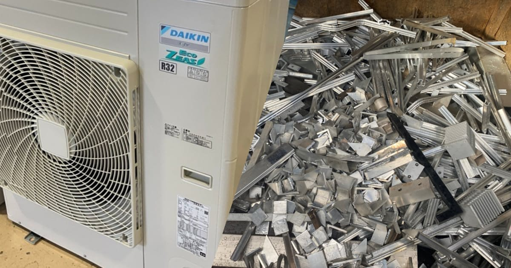
伊藤忠とダイキン、エアコンからアルミ回収 脱中東依存へ資源循環網
パズドラ運営のガンホー 架空発注で資金流用の元本部長逮捕を認め謝罪 #ldnews
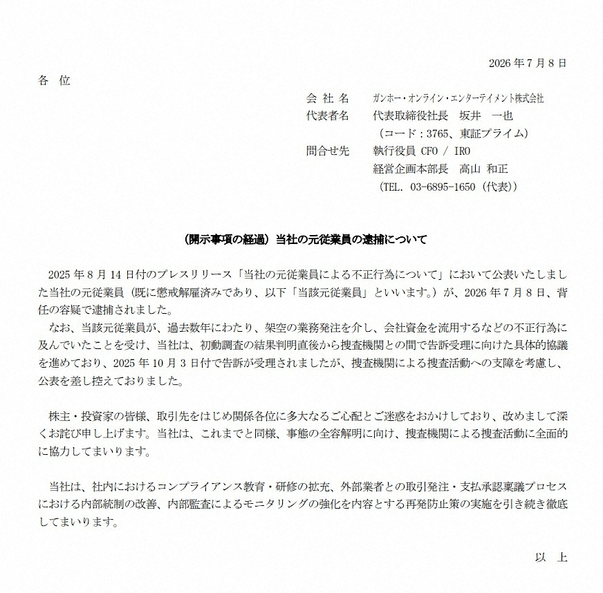
「パズドラ」運営 ガンホー、元本部長の逮捕認め謝罪 架空発注で会社資金3億4600万円流用
3つの翻訳エンジンを横断接続。耳を塞がず双方向翻訳するオープンイヤー型のAIイヤホン #BuyPR
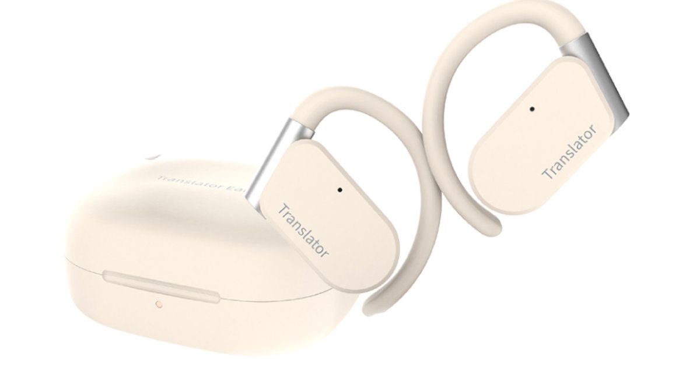
3つの翻訳エンジンを横断接続。耳を塞がず双方向翻訳するオープンイヤー型のAIイヤホン | ギズモード・ジャパン
佐藤二朗さん、ハラスメント疑惑について初激白・・・「橋本さんサイドは◯◯だった」 #炎上

佐藤二朗さん、ハラスメント疑惑について初激白・・・「橋本さんサイドは◯◯だった」 - オレ的ゲーム速報@刃の記事ページ
jin115.com
Amazon：壽屋(KOTOBUKIYA) 学園アイドルマスター 秦谷美鈴-ツキノカメ- 1/7スケール PVC製 塗装済み完成品 フィギュア 予約受付開始！
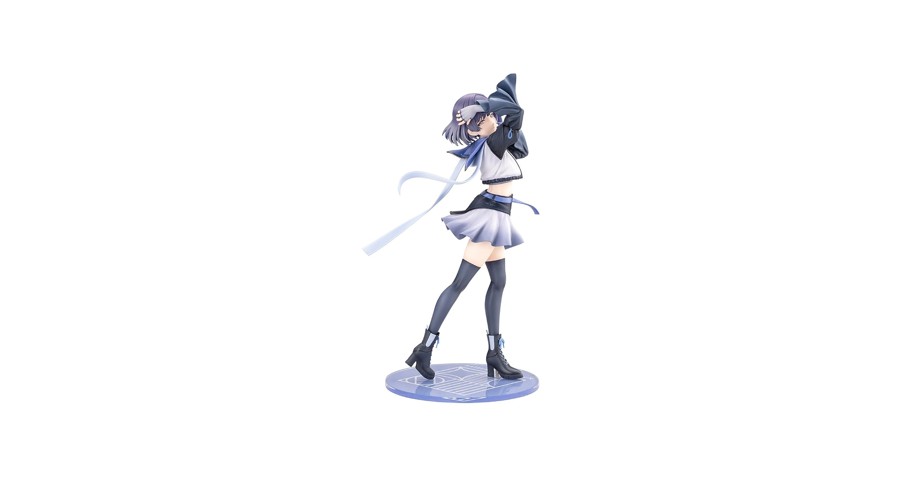
壽屋(KOTOBUKIYA) 学園アイドルマスター 秦谷美鈴-ツキノカメ- 1/7スケール PVC製 塗装済み完成品 フィギュア
【無料公開】想定通り作るには規模が大きすぎた…2年作ったターン制・宇宙SFRPG『Legends of Starkadia』最初の1惑星のみで正式リリース
https://
gamespark.jp/article/2026/0
7/08/168989.html?utm_source=twitter&utm_medium=social&utm_content=tweet
…
【速報】SpaceXAI が明日、Grok 4.5を公開へ
イーロンマスク氏(
@elonmusk
)がOpusクラスの性能を誇りながら、より高速でトークン効率に優れた
@SpaceXAI
の最新フラグシップモデル、Grok 4.5を一般公開すると発言。Claue Code、Codexに加えてGrok Buildにも要注目です。
Elon Musk
@elonmusk
ベータテストプログラムの顧客からの強い肯定的なフィードバックに基づき、@SpaceXAI は明日、Grok 4.5 を一般公開します。
これは Opus クラスのモデルですが、より高速で、よりトークン効率が高く、コストが低いです。
Amaozn：壽屋(KOTOBUKIYA) 無職転生III ~異世界行ったら本気だす~ シルフィエット・グレイラット & ルーシー・グレイラット 1/7スケール PVC製 塗装済み完成品 フィギュア 予約受付開始！
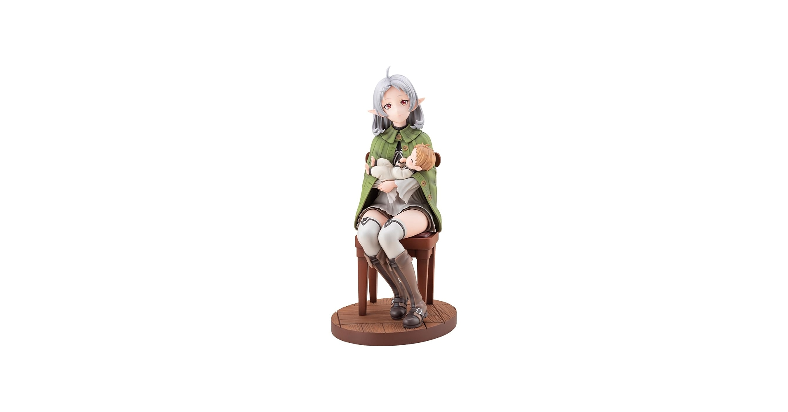
壽屋(KOTOBUKIYA) 無職転生III ~異世界行ったら本気だす~ シルフィエット・グレイラット & ルーシー・グレイラット 1/7スケール PVC製 塗装済み完成品 フィギュア
【日本人差別】福岡県 税金で外国人限定の宿泊費助成とバス代支援を開始 炎上中
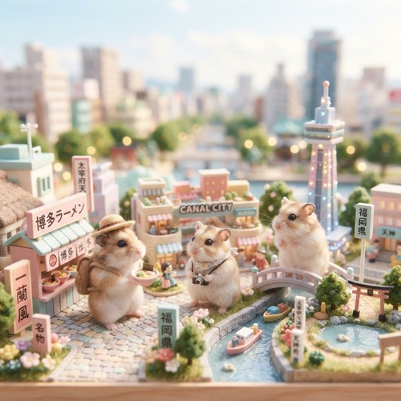
【日本人差別】福岡県 税金で外国人限定の宿泊費助成とバス代支援を開始 炎上中 : ハムスター速報
Amazon：壽屋(KOTOBUKIYA) 軌跡シリーズ フィー・クラウゼル 1/8スケール PVC製 塗装済み完成品 フィギュア 予約受付開始！
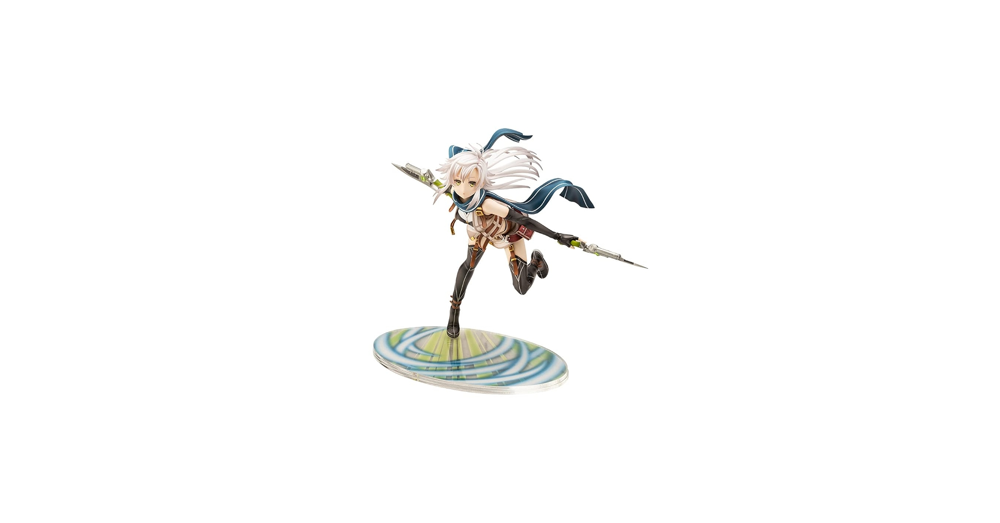
壽屋(KOTOBUKIYA) 軌跡シリーズ フィー・クラウゼル 1/8スケール PVC製 塗装済み完成品 フィギュア
大画面で極軽179gは手持ちラクラク。「Galaxy A57 5G」が過去最安6万円台 #BuyPR
大画面で極軽179gは手持ちラクラク。「Galaxy A57 5G」が過去最安6万円台 | ギズモード・ジャパン
『超かぐや姫！』公式さんがリポスト
映画『超かぐや姫！』×SWEETS PARADISE
現在東京・大阪・京都にてコラボカフェ開催中
大阪・京都はテイクアウト限定店舗となっております！
予約なしで利用可能ですので是非ご来店くださいね
ご予約など詳細はこちら→
https://
sweets-paradise.jp/collaboration/
cho-kaguyahime
…
#超かぐや姫！ #スイパラ
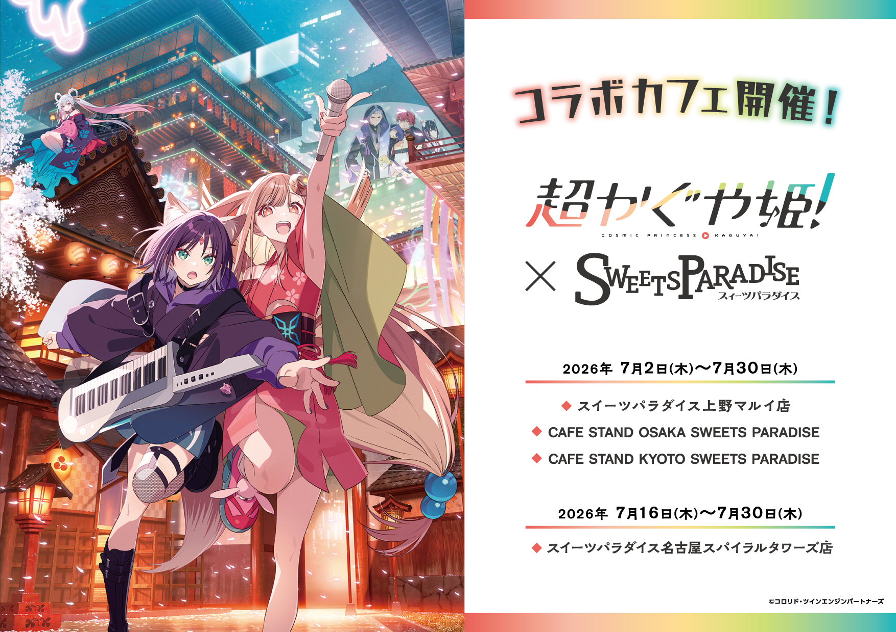
日経平均終値1437円安、対イラン「報復攻撃」に動揺 循環物色は健在
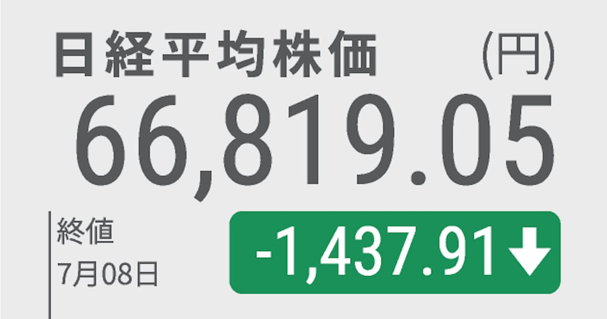
日経平均終値1437円安、対イラン「報復攻撃」に動揺 循環物色は健在
OpenAI､最新「GPT-5.6」を9日一般公開 米政府が承認
OpenAI､最新「GPT-5.6」を9日一般公開 米政府が承認
「060」番号の提供が延期に 通信4社 当初の開始予定は7月
「060」番号の提供が延期に 通信4社 当初の開始予定は7月
いや〜足りねえなあ・・・そんな無駄遣いはしてないが３並列だとすぐこれ
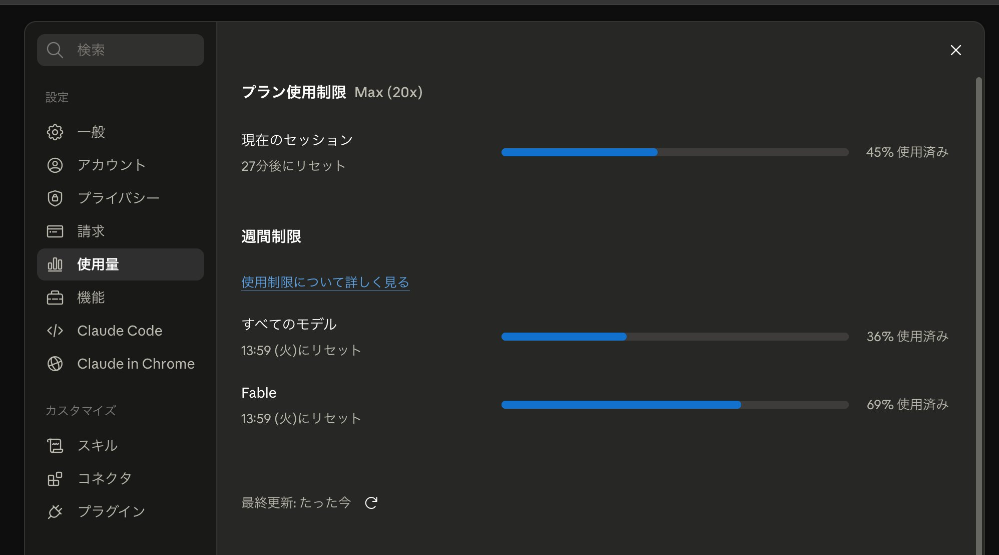
Torishima / INTP
@izutorishima
GPT-5.6 が出そうだからって１週間延長！？！？
今日中に利用枠使い切るつもりだったのに・・・・・・・ x.com/claudeai/statu…
種類がわからないと発芽すら？と思ったけど、発芽条件が似たようなものなら、ガチャガチャになるものなのですね。
「ちょい置き」できるって最高だ！ ほぼ家具な空気清浄機、5.3万円でお迎えできます
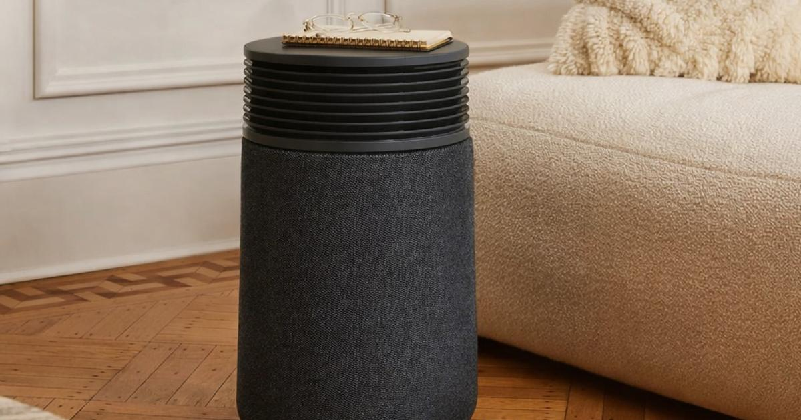
「ちょい置き」できるって最高だ！ ほぼ家具な空気清浄機、5.3万円でお迎えできます | ギズモード・ジャパン
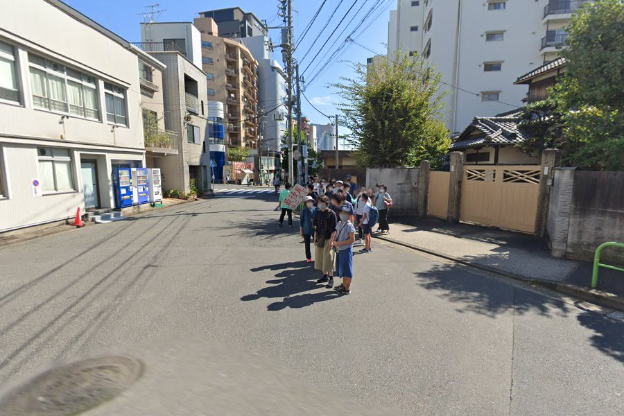
Explore a place in a more immersive way in Google Maps.
google.co.jp
（でも「1日でみんなの行きたいところ」を、というと、ほな伊豆大島と違うか、となってる）
ネクソン，「マビノギモバイル」「プロジェクトRX」を東京ゲームショウ2026に出展
https://
4gamer.net/s/G038732.2607
08023
…
体験内容など詳細は追って案内される予定だ
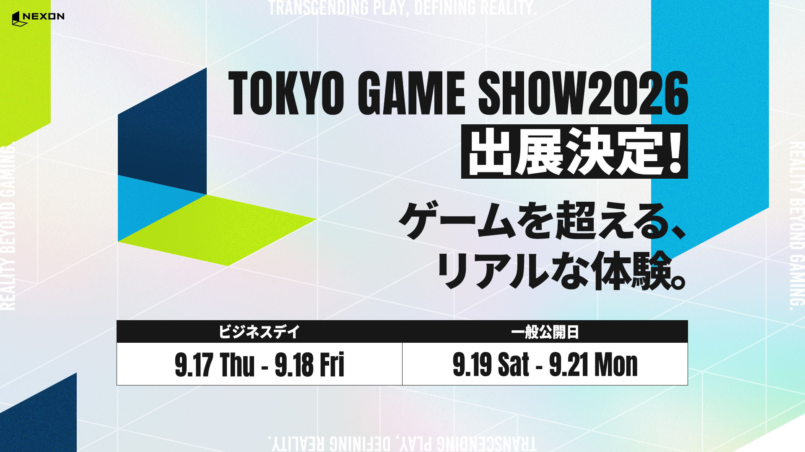
『勝利の女神：NIKKE』“水着”テーマの新作一番くじ全ラインナップ公開！「ドロシー」や「ラピ：レッドフード」が“背中で魅せる”ポーズで立体化
https://
gamespark.jp/article/2026/0
7/08/168988.html?utm_source=twitter&utm_medium=social&utm_content=tweet
…
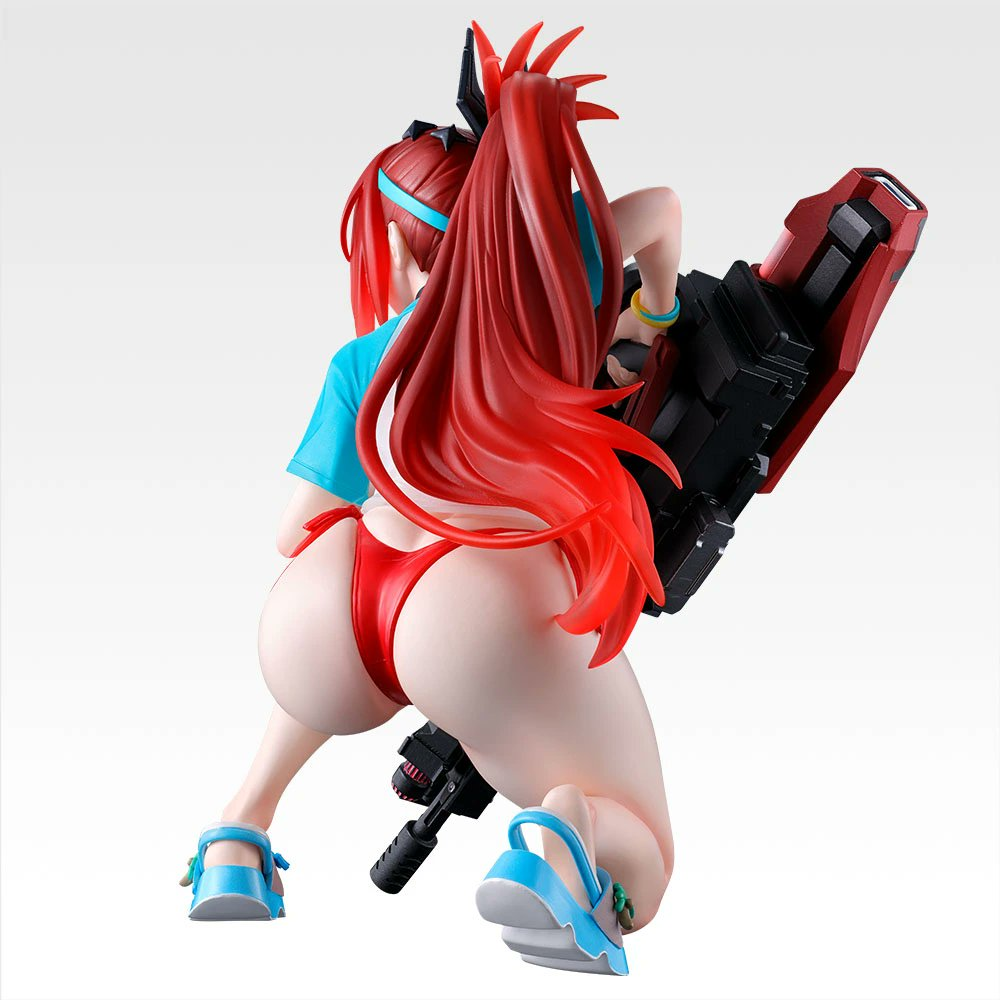
車１台あたり利益、首位テスラ25年度４割減 トヨタと同水準に
車1台あたり利益、首位テスラ25年度4割減 トヨタと同水準に
長期金利一時2.87%、30年ぶり高さ 内憂外患でさらなる上昇圧力
長期金利一時2.87%、30年ぶり高さ 内憂外患でさらなる上昇圧力
これワイ早く動画出した方がいいな
「さと島」スタートまであと7日
「やっぱ衝撃」 大野智、最新ビジュアルにファン驚がく「振り幅たまらない」「号泣案件だ」「鼻血出るかと思ったよw」
@satojima_x
@arashi5official
▼記事を読む▼
「やっぱ衝撃」 大野智、最新ビジュアルにファン驚がく「振り幅たまらない」「号泣案件だ」「鼻血出るかと思ったよw」（1/2） | エンタメ ねとらぼ
鉄緑会英単語熟語はお世話になりました。
リソーはこれ？
たしかにＯＢＯＧがリソーに行くなら魅力は増すかも
ヒューリック、東大受験「鉄緑会」買収 トップ進学塾の拡大支援 - 日本経済新聞
ヒューリック、東大受験「鉄緑会」買収 トップ進学塾の拡大支援
旅に帰るMVが伊豆大島の弘法浜だったことを踏まえると、実際のスケール感とかはさておき、ここがモチーフなのかなと
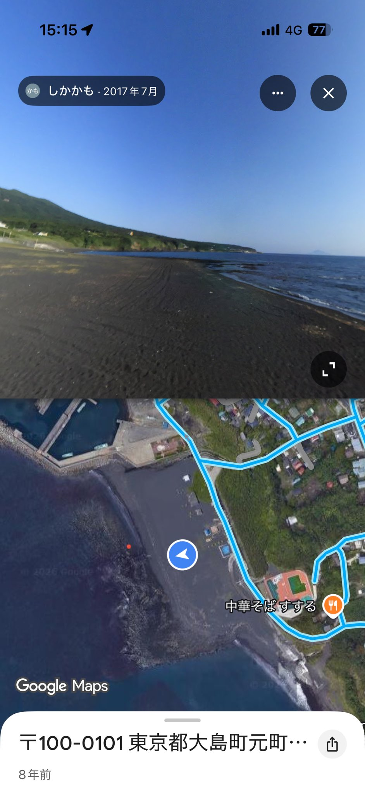
高評価ノベルADV『シュレディンガーズ・コール』メタスコア90点で「2026上半期ベストゲーム」にて1位に選出。世界が終わる21ナノ秒前の電話
https://
gamespark.jp/article/2026/0
7/08/168987.html?utm_source=twitter&utm_medium=social&utm_content=tweet
…
2026年7月1日時点のメタスコアに基づき、プロの批評家によるレビューが最低7件以上あることが選出対象となっています。
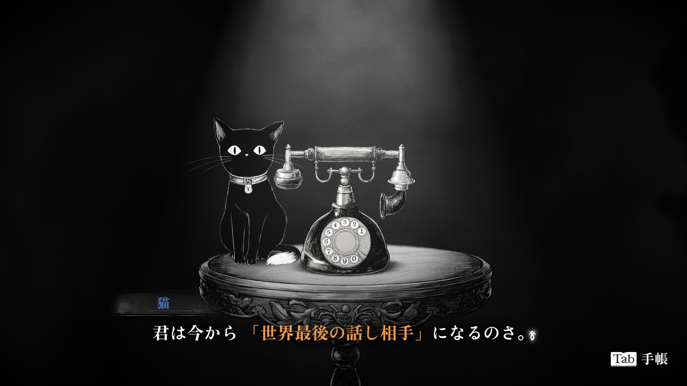
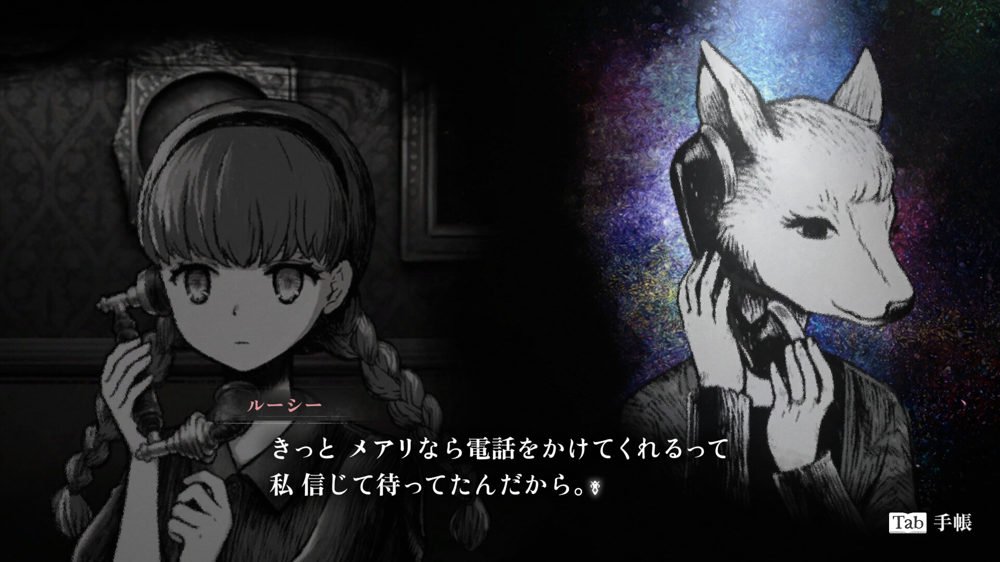
か弱いオタクにペンライトより重いものを持たせないで欲しいですわ〜〜〜！！！
もう洗剤すらいらない。一緒に洗うだけの洗濯ボールで衣類も洗濯槽もキレイに #BuyPR
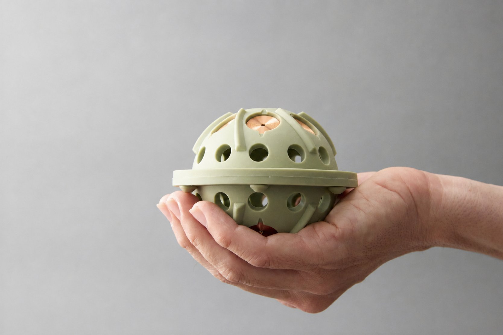
もう洗剤すらいらない。一緒に洗うだけの洗濯ボールで衣類も洗濯槽もキレイに | ギズモード・ジャパン
「とりあえず置いておこう」で乱れがちな我がキッチン。「山崎実業のブレッドケース」でこんなに整う
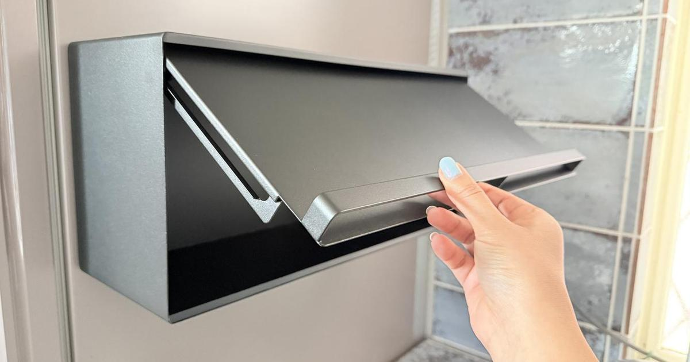
「とりあえず置いておこう」で乱れがちな我がキッチン。「山崎実業のブレッドケース」でこんなに整う | ギズモード・ジャパン
【警報】妊婦を狙って自転車で轢いてくる初老の女 怖すぎると話題に
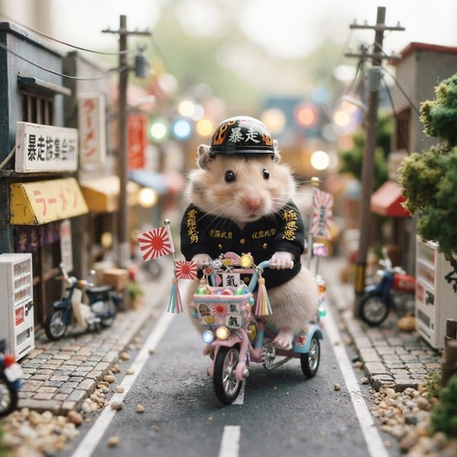
【警報】妊婦を狙って自転車で轢いてくる初老の女 怖すぎると話題に : ハムスター速報
鉄パイプの束をひとりで動かすお仕事した！ひとりでやるもんじゃないけど同僚はやらないのでやりました！！やれや！ほんまクソだよこいつトイレ流すぞ。
「podcast聴きました！深津さんもnote始めませんか？」って、リサーチ能力なさそうなマーケ会社から営業きた
佐々木俊尚＠新著「フラット登山 日本を歩く旅60」7月8日刊行！さんがリポスト
【新刊情報】
8月5日刊
『常夜の読書会』
#岩間陽子 #開沼博 #佐々木俊尚 #東畑開人 #與那覇潤
５人の知性が極論と分断にひた走る制御不能な現代社会を読み解く！
・アリストテレスから紐解く、SNS誹謗中傷と「義憤の快楽」の正体
・文学と神秘主義から読み解くロシアの内在論理...etc
◎予約受付中
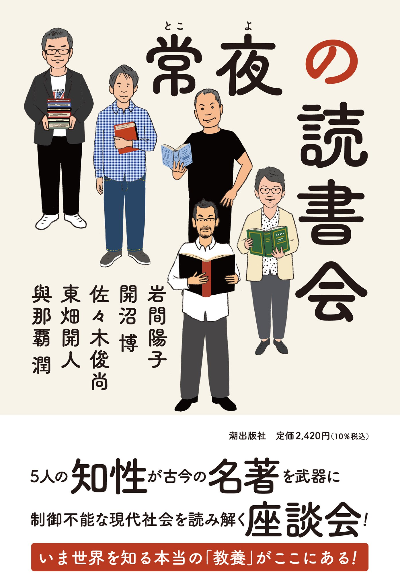
うんこの聖地になってしまったか。
ALPHA
@alfalfaGeinow
【悲報】ヨドバシカメラ池袋店、3日連続脱糞事件ｗｗｗｗｗｗｗｗｗｗ
https://
alfalfalfa.com/articles/11085
093.html
…
同一箇所じゃない？？？
日帰り旅行伏線！？？？
生放送視聴者アンケートの回答期限は「本日2026/7/8(水) 23:59」まで！
アンケートに回答＆Aimeアクセスコードを記入で後日デジタルアイテム「110,000ファボ＋虹限スタチュウ＋ショウニスタチュウ」がゲットできるので、お忘れなく！
アンケートはコチラ
https://
forms.office.com/pages/response
page.aspx?id=qGidpJfIjUqAoNDMhWOeYuiPfsuy-8JBkGsuoKU8Cp9UNjhYMDRESjRJWTVETlFRQUdPTzhCUU9PUS4u&route=shorturl
…

チュウニズム公式
@chunithm
「ゲキ！チュウマイ公式生放送」はいかがでしたか？皆さんのご感想をお聞かせください！
アンケートはコチラ
https://
forms.office.com/pages/response
page.aspx?id=qGidpJfIjUqAoNDMhWOeYuiPfsuy-8JBkGsuoKU8Cp9UNjhYMDRESjRJWTVETlFRQUdPTzhCUU9PUS4u&route=shorturl
…
回答期限：2026/7/8(水) 23:59まで
【4.5thフェス物販 第1回申込の結果について】
お申し込みいただいたメールアドレス宛に
ブロック番号と集合時間をご連絡しております。
お忘れのないようにご確認ください。
#ヘブバン #ヘブバングッズ
【4.5thフェス物販事前申込 受付中】
第1〜3ブロック：受付終了
第4ブロック：残りわずか
▼申込はこちら
https://
forms.gle/BLAs8vDv4VayK3
hx5
…
第2回申込期限：7月12日(日)23:59まで
※ステージ観覧チケットの有無に関わらず申込可能
※申込のない方のご購入不可
#ヘブバン #ヘブバングッズ
わらた
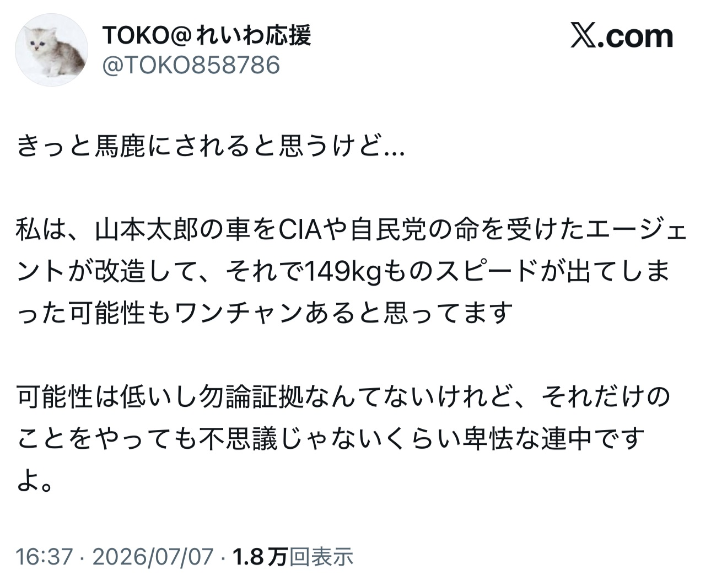
フォックス・コン
@yominokuni140
【れいわ信者の主張】
山本太郎の車はCIAや自民党の命を受けたエージェントによって改造され、149キロものスピードが出てしまった。 x.com/yominokuni140/…
これ離島！？？？？
日本の長期国債「3％で投資視野」 ピムコジャパン共同代表者
日本の長期国債「3%で投資視野」 ピムコジャパン共同代表者
明日、7月9日15:00より
イベント『褪せない今を、彩って』を開催
まふゆが奏の家に戻って以降、ふたりの様子が心配な絵名。今の自分達ができることは何か、と瑞希と話し合い1日でみんなの行きたい場所を巡るプチ旅行をすることになり……？
#プロセカ
「崩壊：スターレイル」，即興芝居PV「仰ぎ見る者へ」を公開。7月15日に実装予定の「姫子・旅立ち」のキャラクタープレビューも
https://
4gamer.net/s/G059954.2607
08019
…
風化の呪いを発症した姫子は，未来がないことに絶望していたが，描きたいもの――「開拓」の星神の故郷「ペガーナ」，そして星穹列車を見つけた
全東信の負債額、破産申請時は1151億円 帝国データバンク調べ
全東信の負債額、破産申請時は1151億円 帝国データバンク調べ
昭和ホールディングス、取締役3名と連絡が取れなくなり本店所在地から実印・会計帳簿・預金通帳が消える 此下益司のウェッジHDと藤澤信義のJトラストの泥仕合の余波で
昭和ホールディングス、取締役が欠席し連絡取れないため代表取締役が選任できず、本店所在地にあるのは看板だけ、実印・会計帳簿・預金通帳はじめ諸々不明ってなに… pic.twitter.com/5QNKDHaGqt— 空き缶 (@akikankeri) July 8, 2026 https://www.showa-holdings.co.jp/『
kabumatome.doorblog.jp
「DOOM: The Dark Ages」の大型DLCに対応する「GeForce 610.74 Driver」リリース
https://
4gamer.net/s/G002210.2607
08020
…
「アサシン クリード ブラック フラッグ RE:シンクロ」にも対応したドライバソフトの登場だ
文春「フジの内部文書を手に入れた。『創作』じゃない根拠を見せてやんよ」 #芸能・スポーツ

文春「フジの内部文書を手に入れた。『創作』じゃない根拠を見せてやんよ」 - オレ的ゲーム速報@刃の記事ページ
jin115.com
【まだ間に合う！】
3日間ログインで合計『200,000ファボ』が受け取れちゃう、CHUNITHM Mate 稼働記念のログインボーナスは「7/15(水)」まで！ゲットしてメイトと親密度を高めよう！
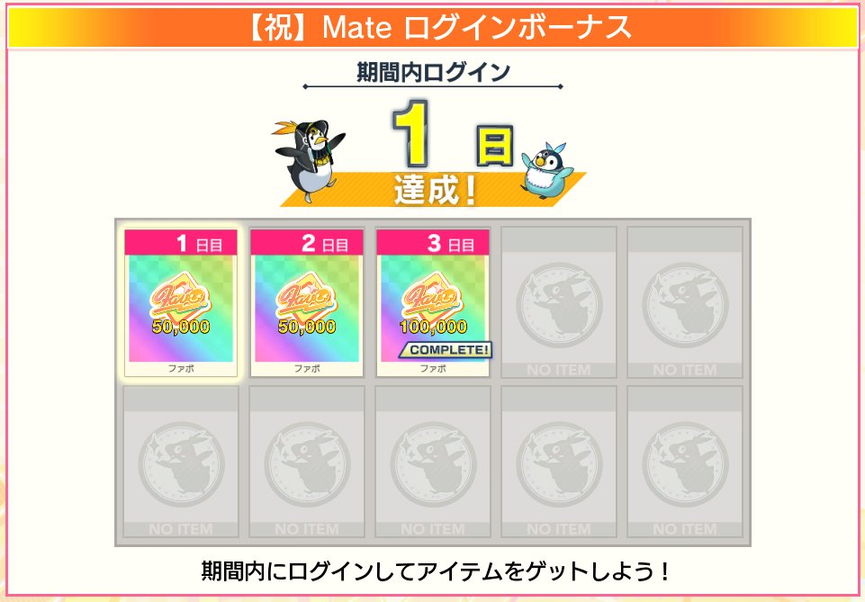
Steam積みゲーをマッチングアプリ風に後で遊ぶか放置するかなど、どんどん仕分け！無料Webアプリ「Dustpile」で消化が捗りそう
https://
gamespark.jp/article/2026/0
7/08/168986.html?utm_source=twitter&utm_medium=social&utm_content=tweet
…
「Tinder」のように左右にスワイプしながら積みゲーを仕分けできるサービスが公開。
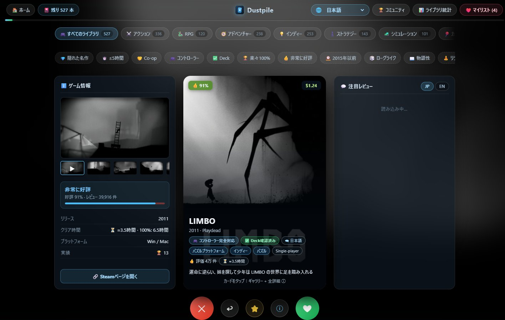
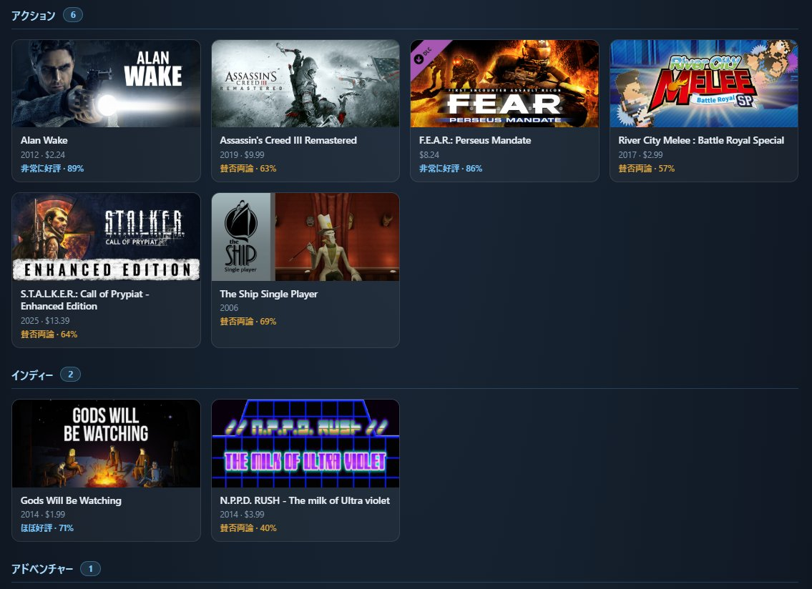
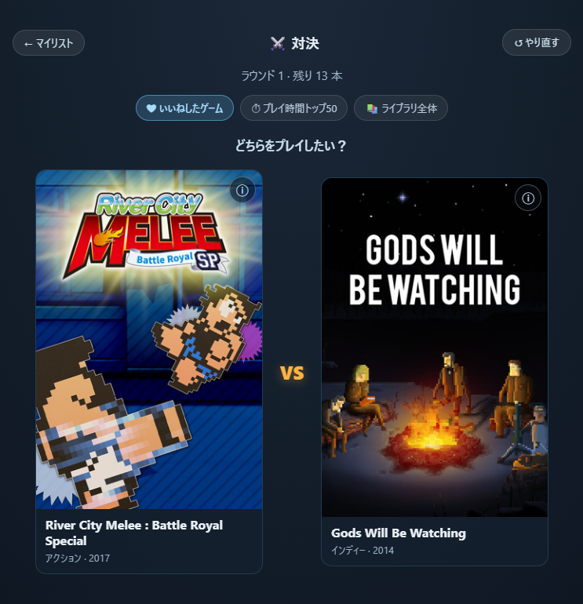
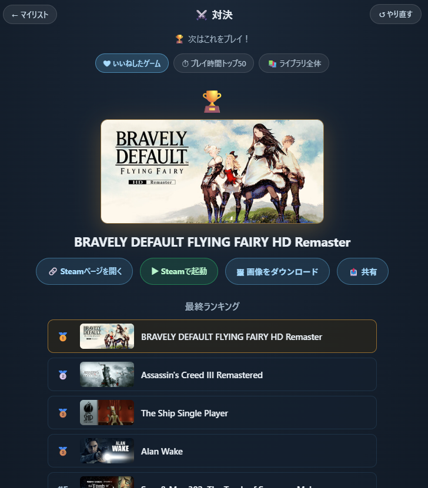
髪を乾かしながら、歯磨きできるだと…？山崎実業の「ドライヤーホルダーの進化」に歓喜 #BuyPR
髪を乾かしながら、歯磨きできるだと…？山崎実業の「ドライヤーホルダーの進化」に歓喜 | ギズモード・ジャパン
こだわりのPC周辺機器やゲ昇降デスクの天面がガラス張りのショーケースに。お気に入りグッズを愛でながら仕事ができます
こだわりのPC周辺機器やゲ昇降デスクの天面がガラス張りのショーケースに。お気に入りグッズを愛でながら仕事ができます | ギズモード・ジャパン
財布からフタを無くしたら、中身が一目でわかるようになった。カードサイズなのに7枚収納できる本革財布 #BuyPR
財布からフタを無くしたら、中身が一目でわかるようになった。カードサイズなのに7枚収納できる本革財布 | ギズモード・ジャパン
屋外広告 サイネージ 地図作った #正反対な君と僕

冷蔵庫が走る！【速さ検証】アーリン・ハーランド編
https://
youtube.com/shorts/wVPXJY9
yPyc?si=lsNv511BfTFtHLnk
…
@YouTube
より
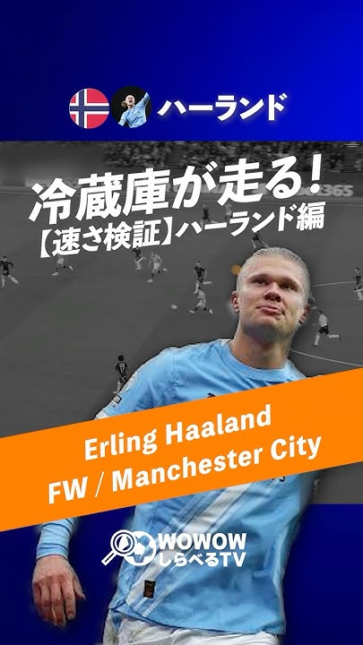
冷蔵庫が走る！【速さ検証】アーリン・ハーランド編
植松伸夫氏など参加で約100万ドル支援集めたRPG『Project Phoenix』およそ7年ぶり進捗報告―開発進行中で、2031年末の完成目指す
https://
gamespark.jp/article/2026/0
7/08/168985.html?utm_source=twitter&utm_medium=social&utm_content=tweet
…
新たにプロトタイプ映像や植松伸夫氏の楽曲も公開。また、開発責任者の由良浩明氏がVGCの取材に応じ、これまでの経緯や開発状況を語っています。
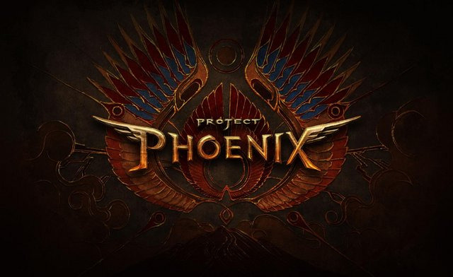
「Pokémon Sleep」，イベント「3周年記念フェスティバル」の詳細情報を公開。定常的に使える新機能の登場を予定
https://
4gamer.net/s/G046207.2607
08018
…
新たにナエトル，ヒコザル，ポッチャマなどのポケモンが登場。「おいわいフラワー」や「ミニアメブースト」といった機能が使える
朝から仕事をして、お昼休憩
東都グリルさんでA定食(アジフライと和風オムレツ)をいただきます
オムレツの中身はネギとしらす!!!!
塩味が抜群で美味い！
アジフライは衣サクサク、中はフワフワ！
ご飯大盛りで９８０円は安い！
コメ「需要に応じ」生産、改正食糧法が成立 供給力の維持見通せず
コメ「需要に応じ」生産、改正食糧法が成立 供給力の維持見通せず
川口"k-shi"貴志 / ゲームの音響や触覚でUXを考える人さんがリポスト
CRIWAREは「Godot」との連携をこれから強化していくでス！
たくさん使って欲しいのでス
ＣＲＩ・ミドルウェア公式
@CRIWARE
本日13時にニュースリリースを発表いたしました。
CRIWARE、利用者拡大中のゲームエンジン「Godot」に完全対応 10,000以上のゲーム向けライセンスで培われた技術資産でGodot利用者をサポート
https://
cri-mw.co.jp/news/newsrelea
se/21940/
…
イランが商船攻撃、ホルムズ支配に執着 オマーン側ルートの通航阻止
イランが商船攻撃、ホルムズ支配譲らず オマーン側ルートの通航阻止
Composer 2.5 は速いし結構指示したことをちゃんとやってくれるのでフロントエンドの細かいところの微調整にやっぱめっちゃ使えるな
2Dローグライクアクション「Never Grave」，Android版の事前登録受付をGoogle Playで開始
https://
4gamer.net/s/G102345.2607
08017
…
PCや家庭用ゲーム機向けに登場した作品がスマホでも楽しめるように。価格は780円（税込）だ
香港から密輸の金、日本で溶かして金塊に加工か 中国籍の男ら摘発
香港から密輸の金、日本で溶かして金塊に加工か 中国籍の男ら摘発
『サブノーティカ2』早期アクセス1.1アプデ現地7月8日配信決定！バイオモッドシステムの拡充などQoLの向上にフォーカス
https://
gamespark.jp/article/2026/0
7/08/168984.html?utm_source=twitter&utm_medium=social&utm_content=tweet
…
「GPT-5.6」木曜に一般公開へ 米政府と調整→限定プレビュー経て
「GPT-5.6」木曜に一般公開へ 米政府と調整→限定プレビュー経て
なるせひろのりさんがリポスト
FANZA同人で出す予定の新作！！！
https://
dmm.co.jp/dc/doujin/-/de
tail/=/cid=d_755633/
…
事前お気に入り登録数9999……！！
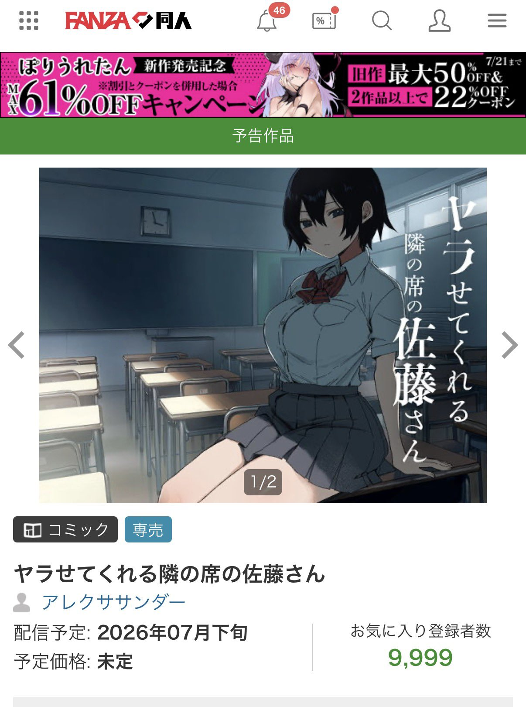
ジャレコ黄金期の名作32本が現行機でよみがえる。「JALECO ARCADE COLLECTION」Vol.1＆2，PC/PS5/Switchで発売決定
https://
4gamer.net/s/G102339.2607
08016
…
「シティコネクション」「妖精物語ロッド・ランド」など20タイトルを先行公開。巻き戻しやCRTフィルタなど便利機能も搭載
日常侵蝕型イベント「050-5893-5336展」（ひとのでんわ展），体験イメージPVや追加キャストの情報を公開
https://
4gamer.net/s/G999111.2607
08014
…
PVでは速水 奨さんのナレーションとともに，会場のイメージや音声の一部を確認できる
皇室典範改正「総意を逸脱」 自民党・船田元氏、政府案に異論
皇室典範改正「総意を逸脱」 自民党・船田元氏、政府案に異論
三重県、庁内のUSBメモリ調査でマルウェア47個検知 陸自の報道受け1万個超を一斉調査

三重県、庁内のUSBメモリ調査でマルウェア47個検知 陸自の報道受け1万個超を一斉調査
JR北海道「特急全席指定で客流れた」 高速バス、価格変動制で攻勢

JR北海道「特急全席指定で客流れた」 高速バス、価格変動制で攻勢
あ〜でも今Macで Fable 開発走らせてるから通信途絶してその間開発動かせない問題があるな・・・
深津 貴之 / THE GUILD, noteさんがリポスト
「noteのレコメンド開発を支えるAIエージェント活用」について発表した #AIE2026_findy
当日いただいた質問への回答をまとめました
ぜひご覧ください
https://
engineerteam.note.jp/n/nd0bc1a5987f9
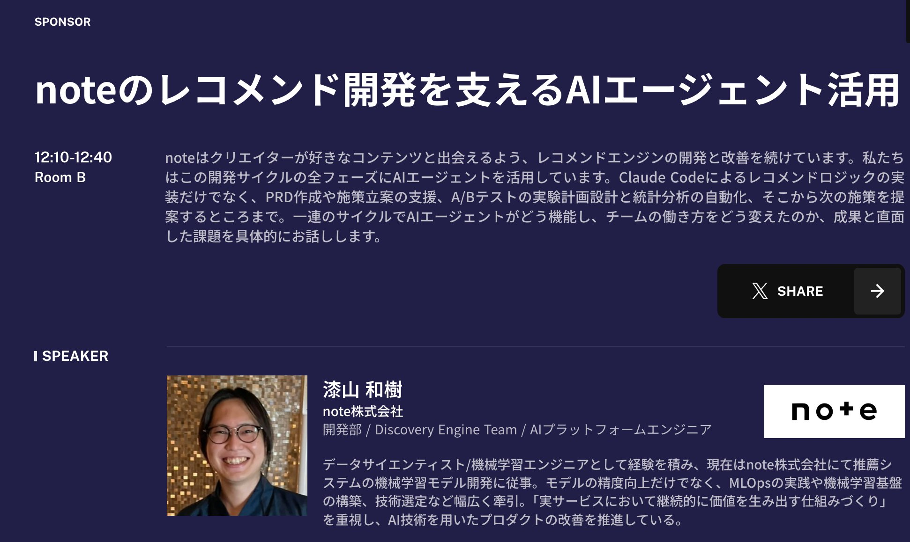
note株式会社
@note_corp
˗ˏˋ 登壇情報 ˎˊ˗.
noteのレコメンド開発で、施策立案から統計分析の自動化までAIエージェントがどうチームを支援しているのか？
開発の生産性を向上させたリアルな成果と直面した課題を、エンジニアの漆山さんが #AIE2026_findy でお話しします
6/8(月)12:10〜12:40 @浜松町＆オンライン x.com/findy_tools/st…
酒カスの先輩と8日間の夏を過ごし，乏しい食材で無茶な注文に応える。“カスのコーヒートーク”をコンセプトとする短編会話ADV「Living on Plain Pasta」，Steamストアページ公開
https://
4gamer.net/s/G102338.2607
08015
…
マルチエンディングに対応。選択によって先輩との関係性や会話，結末の余韻が変化
ガチでハイになるというかドーパミン切れてるんだけどどうすんべかな、Codex Workshop Tokyo に一応申し込んでおいたので外出て気分転換してくるべきか・・・
Torishima / INTP
@izutorishima
笑っても泣いても今日16時までのボーナスタイムや！！！と思って1週間寝る間も惜しんでドーパミン出して爆速で研究開発を進めていたら、そもそも期限が延長されてしまって「休み所」がなくなってもうた・・・ x.com/izutorishima/s…
湘南ペンギン
@shonanpen
Torishima / INTPさんがリポスト
これを考えつつやってなかった背景を言語化した。
現状ではFable5とかGPT5.5 highとかそのレベルを指揮官にした方が良さそう。
指揮官がバカなら下がどんなに賢くても活用されない。
taiyop | Harness Engineer
@taiyop
自分もオーケストラレーション組むならこっちの方が良いかなとかは考えてた。 x.com/claudedevs/sta…
Torishima / INTPさんがリポスト
まじでボケてたんだけど今日って水曜じゃん・・・
木曜だと思ってた・・・曜日感覚が・・・
GPT-5.6のリリースは日本時間で金曜です。
松丸 彗吾(keigo matsumaru)
@k_matsumaru
GPT-5.6、日本時間で言うとやはりアシタカ x.com/openai/status/…
Torishima / INTPさんがリポスト
てか、これ別にClaudeとかFable5関係なくGPTとかでも同じだよなーきっと。
問題は、賢くないAIが「俺なら出来る」って言って勝手にソリューション考えて実装し始めた時で、その判断ができるぐらいの賢さを持ったAI Modelにするべきだってことくらいか。

ClaudeDevs
@ClaudeDevs
Fable 5 でよく使ういくつかのパターン：
Fable 5 を「アドバイザー」として使う。
エグゼキューター（Sonnet 5）が Fable 5 にガイダンスを求めます。
ほとんどのトークンは、より低いエグゼキューター料金で課金されます。
3Dアドベンチャー『Alida』24年ぶりの続編『Absolution』発表！ 引き裂かれた巨大なギター型テーマパークを冒険
https://
gamespark.jp/article/2026/0
7/08/168983.html?utm_source=twitter&utm_medium=social&utm_content=tweet
…
今にも壊れそうな古いホバーフライヤーで7つの島々を冒険し、そこに秘められた謎を解き明かしていきます。
一体ダサすぎて、大声で、泣いちゃった。
X民「中途採用の面接官になってわかった。“たったこれだけ”のことができない求職者が多すぎる」→共感殺到で10万いいね突破 #雑談・その他の話
X民「中途採用の面接官になってわかった。“たったこれだけ”のことができない求職者が多すぎる」→共感殺到で10万いいね突破 - オレ的ゲーム速報@刃の記事ページ
jin115.com
貝さんさんさんがリポスト
タイトル：『魔法使いの夜 上』
著者：奈須きのこ
イラスト：こやまひろかず
定価：2,500円（税別）
レーベル：星海社FICTIONS
サイズ：B6判ソフトカバー
本文仕様：416ページ／イラスト全点をフルカラーで掲載（一部描き下ろし）
三井不動産、東京・御茶ノ水にタワマン 最高8億円台
https://
nikkei.com/article/DGXZQO
UC072A80X00C26A7000000/?n_cid=SNSTW005&n_tw=1783428480
…
日本サッカー協会本部があったJFAハウス跡地を開発。建物は地下3階、地上23階で総戸数267戸。エントランスなどに日本代表ユニホームや青と白を基調としたオブジェを展示します。
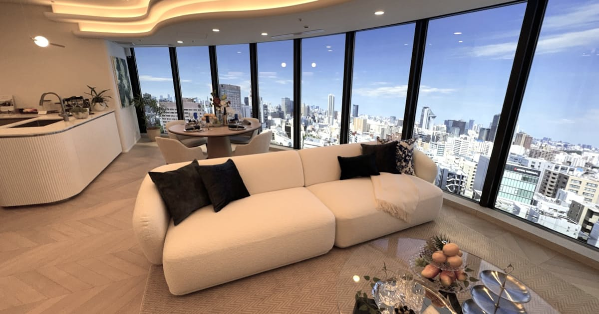
三井不動産、東京・御茶ノ水のJFAハウス跡地にタワマン 最高8億円台
貝さんさんさんがリポスト
【特報】
奈須きのこ
Illustration／こやまひろかず
小説『魔法使いの夜 上』
星海社FICTIONSから8/27（木）発売！
TYPE-MOONのノベルゲーム『魔法使いの夜』が、奈須きのこ自身の手によって小説としてここに新生！
1〜6月の倒産件数、13年ぶり高水準に 物価高・人手不足が淘汰圧力
1〜6月の倒産件数、13年ぶり高水準に 物価高・人手不足が淘汰圧力
ＨＩＳ株価が続落 夏休みの海外旅行減、円安と原油高響く
HIS株価が続落 夏休みの海外旅行減、円安と原油高響く
【過去最安】21日間充電いらず。大画面化したXiaomiの最新スマートバンドがほぼ5,000円に #BuyPR
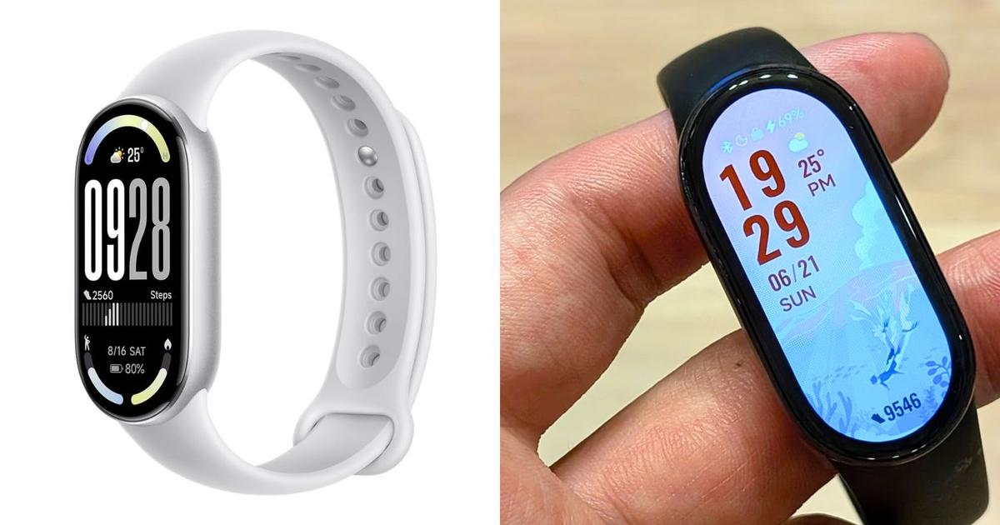
【過去最安】21日間充電いらず。大画面化したXiaomiの最新スマートバンドがほぼ5,000円に | ギズモード・ジャパン
調光・偏光・UVカットが1つに。アジア人の骨格に合わせた設計、約20gの軽量サングラス #BuyPR
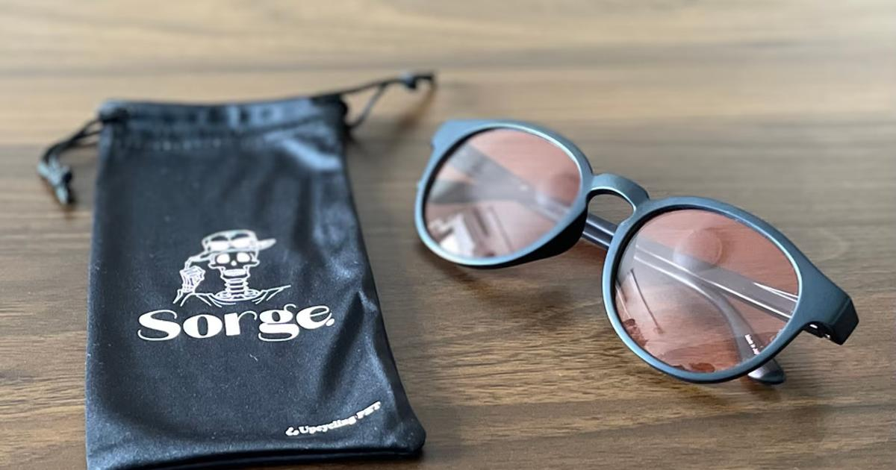
調光・偏光・UVカットが1つに。アジア人の骨格に合わせた設計、約20gの軽量サングラス | ギズモード・ジャパン
もしかしたら渋谷行くかもと地図にプロットしてるけどこいつは難儀
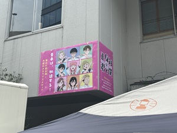
エボラやペスト、拠点病院を新たに指定へ 厚労省が体制強化
エボラやペスト、拠点病院を新たに指定へ 厚労省が体制強化
ちなみに Claude Code の公式 Codex プラグインはパーミッションが強制的に workspace-write に固定されてるのでサンドボックス制限で GPU にアクセスできなかったり指定ワークスペースから出られなかったりして作業を完遂できないことが多く、壊れまくってたので消した・・・
中嶋 謙互
@ringo
繰り返し作業と、コーディング実作業と、コードレビュー、設計レビューはcodex execを使えと指示しておいたらいい感じにcodexを使ってくれるようになって楽だった。 x.com/izutorishima/s…
勝利のつけ麺。
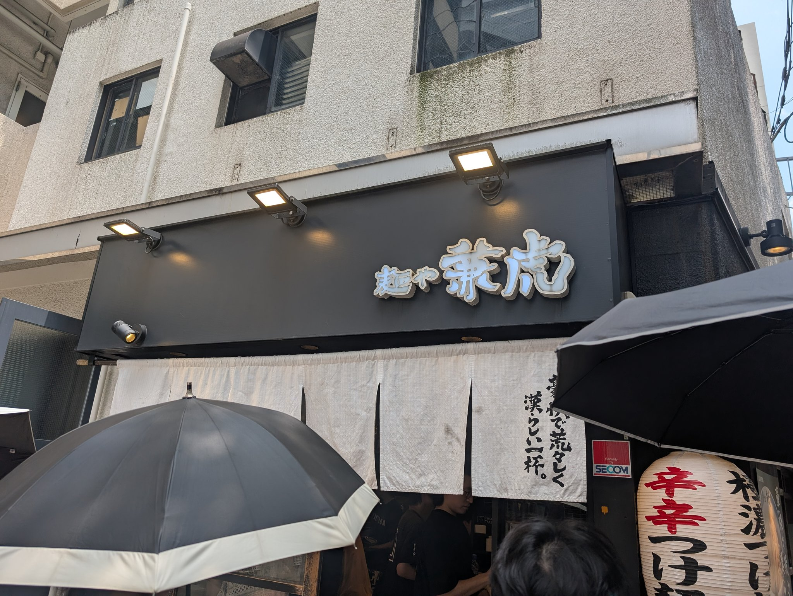
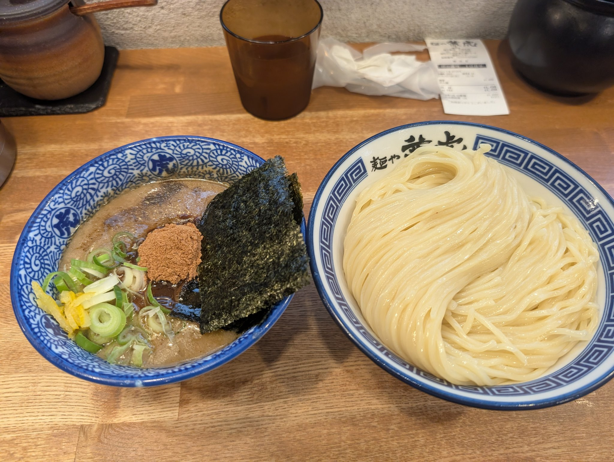
湘南ペンギンさんがリポスト
「富山高山すし空港」に決定！富山空港の新しい愛称 インバウンドの集客狙い「高山」 新田知事が記者会見で発表 #富山県のニュース
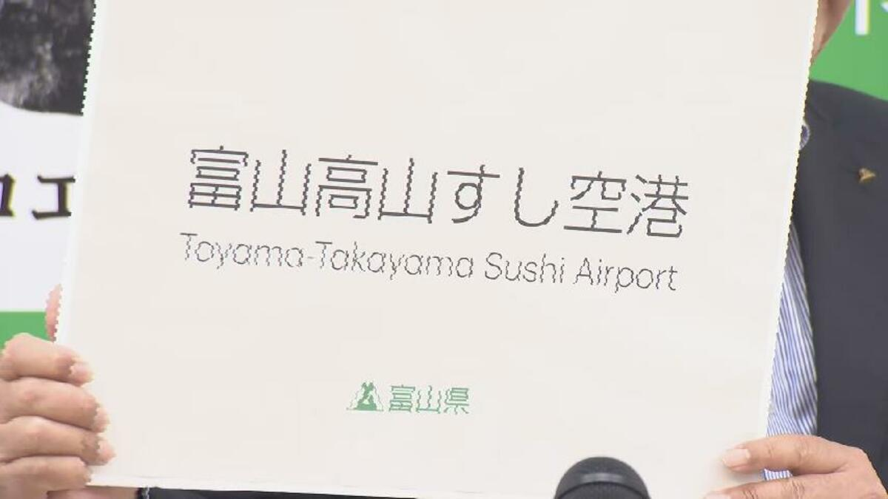
「富山高山すし空港」に決定！富山空港の新しい愛称 インバウンドの集客狙い「高山」 新田知事が記者会見で発表 | 富山のニュース｜天気・防災｜チューリップテレビ
「『モンハン』に似ている」との指摘ある狩猟アクション×スローライフ『Monster Fantasy』開発元が疑問に回答―“ならでは”の特色を活かしていく方針
https://
gamespark.jp/article/2026/0
7/08/168982.html?utm_source=twitter&utm_medium=social&utm_content=tweet
…
生活要素などが組み合わさることで、『モンスターハンター』にはない新しいゲームプレイ体験が生まれるとしています。
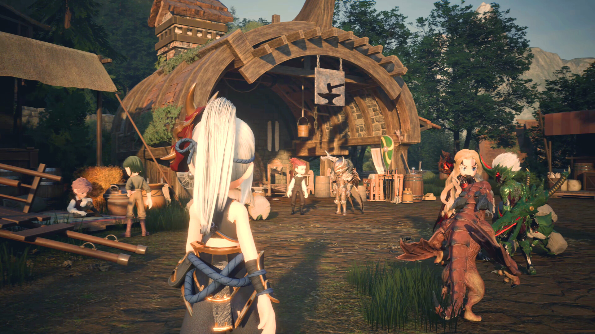
なるせひろのりさんがリポスト
ボルボ、航続距離650kmの新型EVフラグシップSUV「EX90」 価格1199万円から
https://
car.watch.impress.co.jp/docs/news/2123
423.html
… #ボルボ #EX90
ITmedia NEWSさんがリポスト
OpenAIの最新AI「GPT-5.6」シリーズ、今週木曜日に一般公開へ
OpenAIの最新AI「GPT-5.6」シリーズ、今週木曜日に一般公開へ
ハブさん。@土曜日南２ホール ｊ34aさんがリポスト
【速報】富山空港の新愛称は「富山高山すし空港」に｜KNB NEWS NNN
【速報】富山空港の新愛称は「富山高山すし空港」に（2026年7月8日掲載）｜KNB NEWS NNN
参考資料を自ら探す画像生成AI、Metaが開発 “長考”でクオリティー向上も
参考資料を自ら探す画像生成AI、Metaが開発 “長考”でクオリティー向上も
2年間も塩漬けだった−株がようやくプラ転して売れた。
利益50万ぐらいでサクッと売却。
一時期はマイナス500万とか行ってたから良かったヨカッタ。
なるせひろのりさんがリポスト
【速報】佐藤二朗が「ほんとうのこと」を語る
やはり当初のイメージ通り、イケメン無罪に振り回された事務所と可哀想な男の話だった。
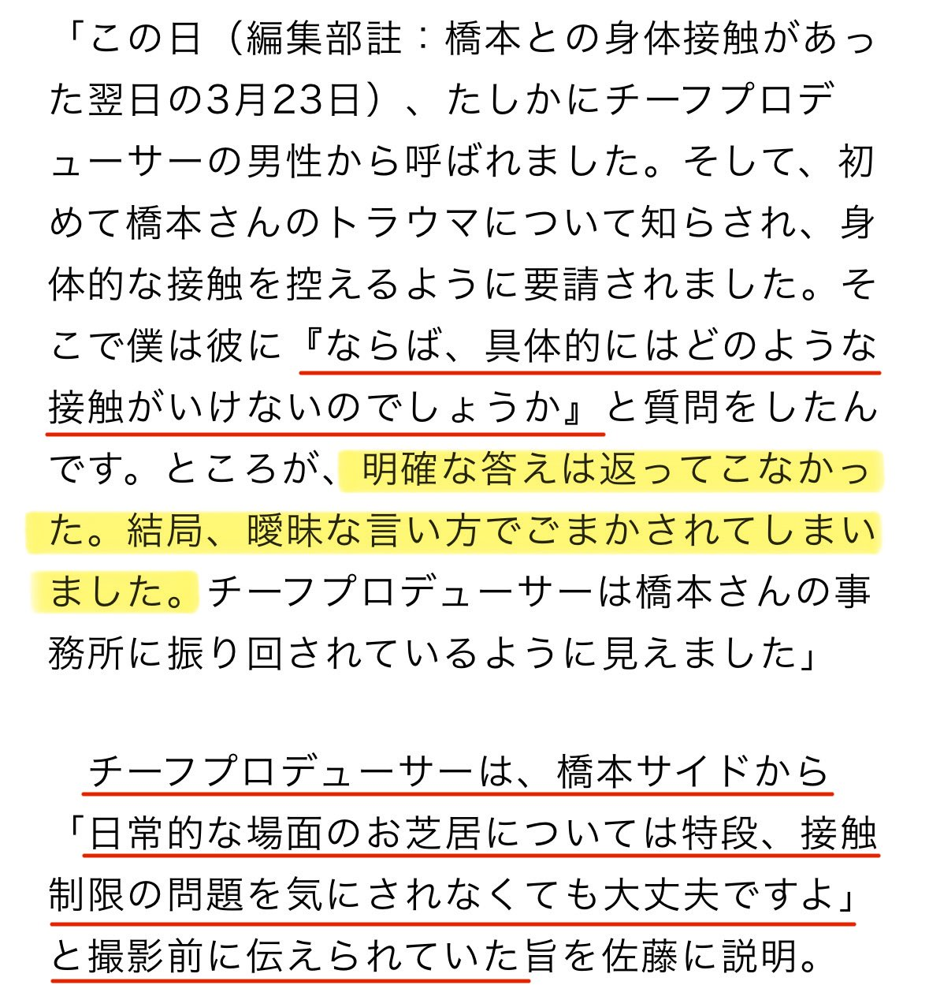
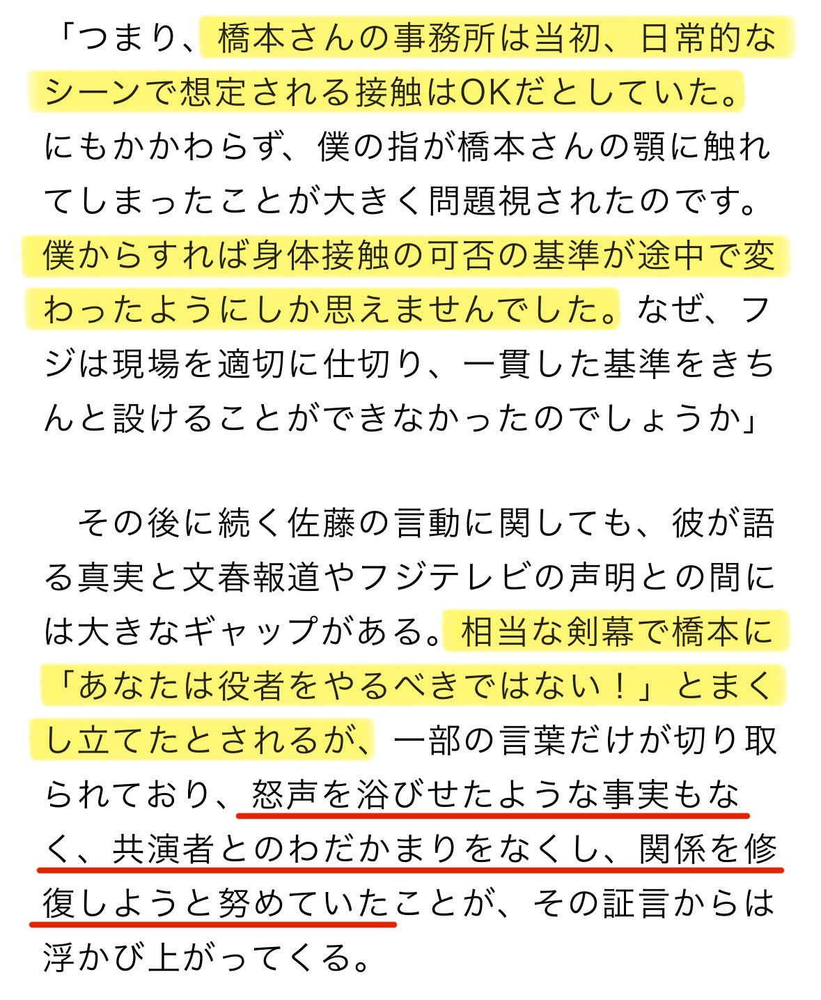
デイリー新潮
@dailyshincho
【速報】
佐藤二朗が「ハラスメント疑惑」について初激白 「橋本さんサイドは、日常的なシーンの身体接触はOKとしていた」「なぜフジは一貫した基準を設けることができなかったのか…」
https://
dailyshincho.jp/article/2026/0
7081131/?utm_source=twitter.com&utm_medium=social&utm_campaign=twitt
…
iPhoneと撮り比べ。
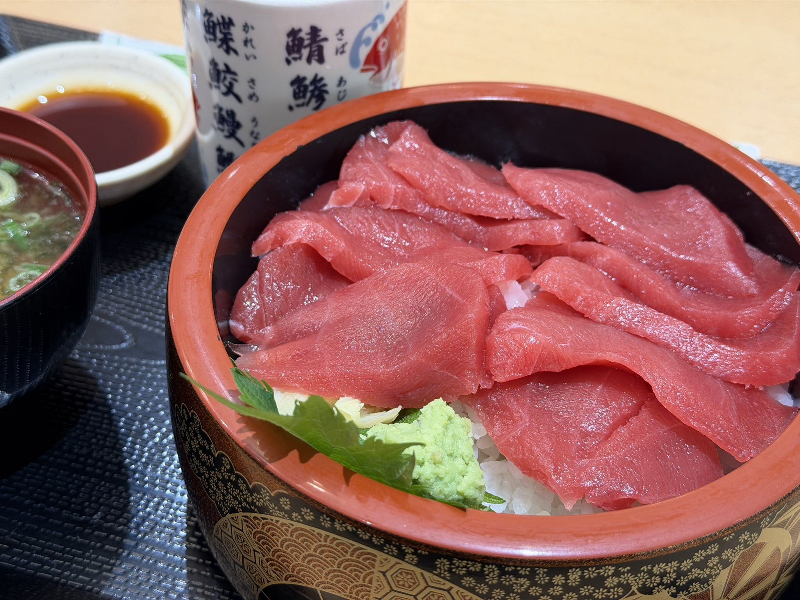
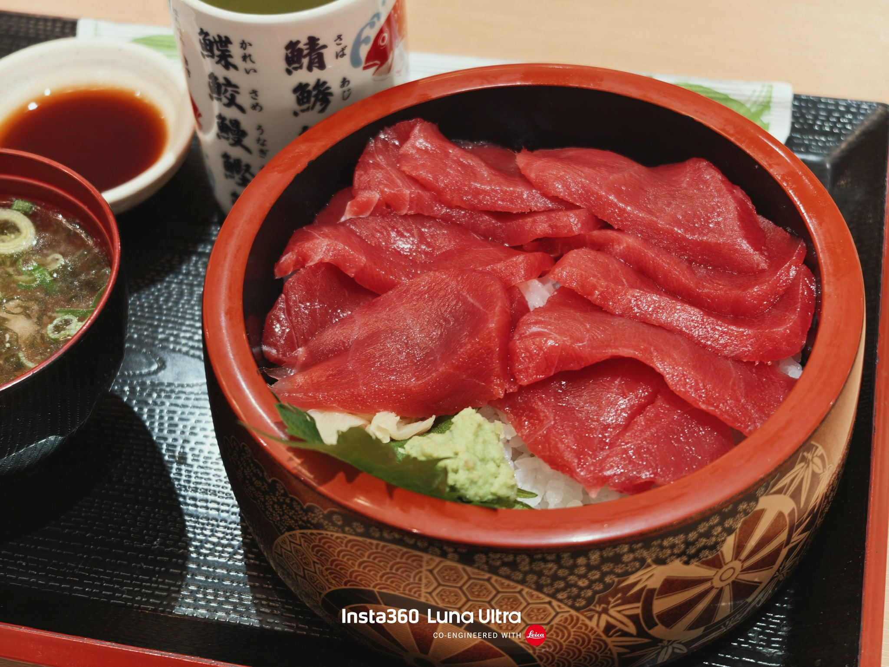
逆コンテ生成マシーン面白そう
「東京ゲームショウ2026」，初の5日間開催へ向け来場者情報を公開。新設プレミアムチケット，30周年記念チケットも登場
https://
4gamer.net/s/G999110.2607
08007
…
メインビジュアルや一般公開日チケットの販売概要，公式LINE，協賛企業などを発表
【330万円のチケも】TGS2026プレミアムチケットが3万円で販売へ。30周年アニバーサリーチケットも登場するなど一般来場者向けの情報公開
https://
gamespark.jp/article/2026/0
7/08/168981.html?utm_source=twitter&utm_medium=social&utm_content=tweet
…
笑っても泣いても今日16時までのボーナスタイムや！！！と思って1週間寝る間も惜しんでドーパミン出して爆速で研究開発を進めていたら、そもそも期限が延長されてしまって「休み所」がなくなってもうた・・・
Torishima / INTP
@izutorishima
これ絶対「Fable のサブスクが切れた後に GPT-5.6 が出たらみんな GPT-5.6 の方が安いし速いし逃げそうだよな・・・せや！（リリースタイミング妨害）」だよな？ x.com/claudeai/statu…
「EVE Online」の屋台骨を支えたCARBON Engineがオープンソース化。GitHubで無料公開
https://
4gamer.net/s/G000412.2607
08011
…
20年以上にわたりシングルシャードの仮想世界を支えてきた技術を公開。Trinityなど20以上のモジュールを収録
昨年の？蝉の抜け殻。
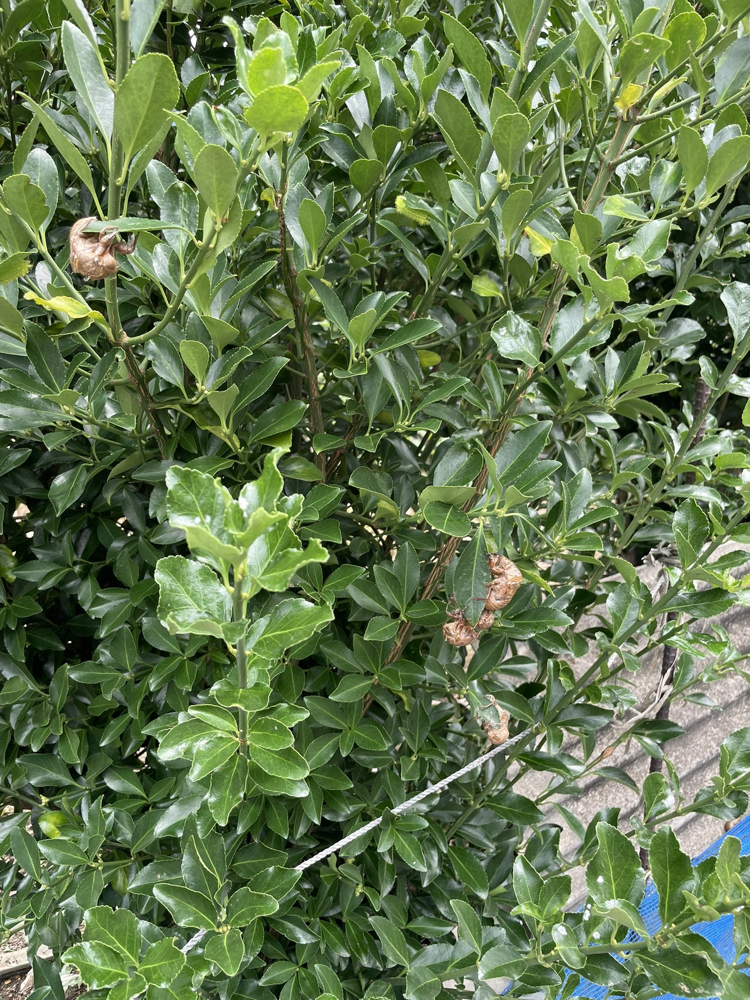
なるせひろのりさんがリポスト
〈佐藤二朗独占インタビュー〉「橋本さんサイドは、日常的なシーンの身体接触はOKとしていた」 佐藤がハラスメント疑惑の裏側について初告白
現在睡眠障害が悪化し、「抑うつ状態」と診断
https://
dailyshincho.jp/article/2026/0
7081131/?all=1
…
これだけ読むと橋本愛の事務所がクソ過ぎる
佐藤二朗が「ハラスメント疑惑」について初激白 「橋本さんサイドは、日常的なシーンの身体接触はOKとしていた」「なぜフジは一貫した基準を設けることができなかったのか…」（全文） | デイリー新潮
なるせひろのりさんがリポスト
『ケロロ軍曹』映画の制作工程の不手際
テレ東、製作委員会の一員として謝罪
https://
oricon.co.jp/news/2466387/f
ull/?utm_source=Twitter&utm_medium=social&ref_cd=jstw001
…
⠀
作中の「進撃の巨人」パロディ演出が、事前に権利者からあった明確な意思表示に反していた件について「クリエイティブに対し

三鷹中央通り
正反対な君と僕 公式
@seihantai_x
平が二人きりになることに気を遣ってしまい、寄り道しようとした場所はどこ？
中国、強いなと、米国では売れないけど、日本なら売れるのかな。
テスラさんがリポスト
急に暑くなってきたので……。
懐かしの。
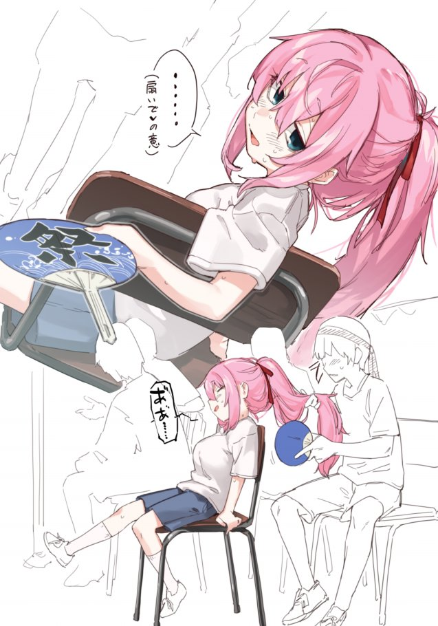
岸田文雄元首相「創薬の長い挑戦支え続ける」 危機管理・成長へ投資
岸田文雄元首相「創薬の長い挑戦支え続ける」 危機管理・成長へ投資
素敵な曲によく似合うふわふわで可愛い衣装が好き〜〜〜〜！！！
ギズモード・ジャパン（公式）さんがリポスト
Orca echoの【質問】に答えていきます！今日の18時から！
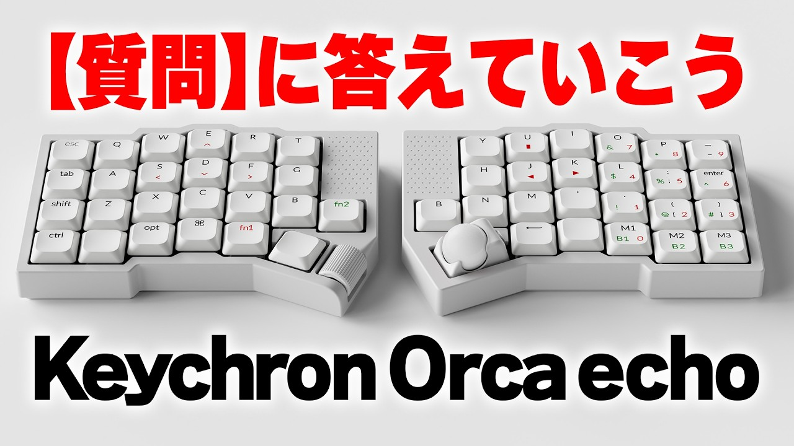
出演：なかはし、なかはた「Keychron Orca echo」購入ページはこちら↓https://costory.jp/cf-...
youtube.com
つばニキ、弓道経験あるのか……。
しかも流鏑馬に挑戦って……すげぇ……！
Ankerの本気を見た。「Soundcore Liberty 5 Pro Max」は完全ワイヤレスイヤホンの究極体
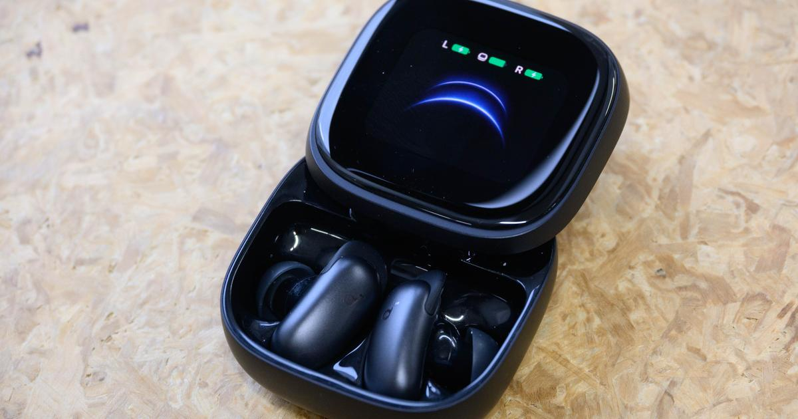
Ankerの本気を見た。「Soundcore Liberty 5 Pro Max」は完全ワイヤレスイヤホンの究極体 | ギズモード・ジャパン
香港から台北へ、自由探す書店主の早すぎる殉職 習近平式法治に抵抗
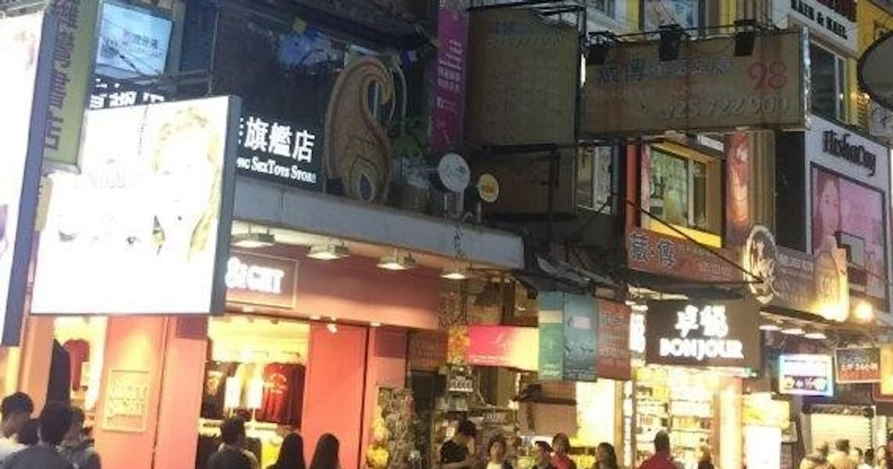
香港から台北へ、自由探す書店主の早すぎる殉職 習近平式法治に抵抗
輿水畏子さんがリポスト
レディース・ロール・メソッド好きだ〜〜の落書き
37年間マイクロソフトに勤めたベテラン社員も解雇。XBOXの後方互換性機能やクラウドゲーミング機能の開発に携わる
https://
gamespark.jp/article/2026/0
7/08/168980.html?utm_source=twitter&utm_medium=social&utm_content=tweet
…

OpenAIのGPT-5.6公開が日本時間ではほぼ金曜日になることが確定しました
OpenAI
@OpenAI
GPT-5.6 Sol、Terra、Lunaとともに、今週の木曜日に公開ローンチします。
プレビューアクセスを今、世界的に拡大しています。
珍しくこのタイミングでリリース予告なの！？Fableと結局被さるのね
OpenAI
@OpenAI
GPT-5.6 Sol、Terra、Lunaとともに、今週の木曜日に公開ローンチします。
プレビューアクセスを今、世界的に拡大しています。
いや〜3つ動かしてた研究開発が寝てる間に非常にいい方向に進んでて爽快だ、そして人智を超えている
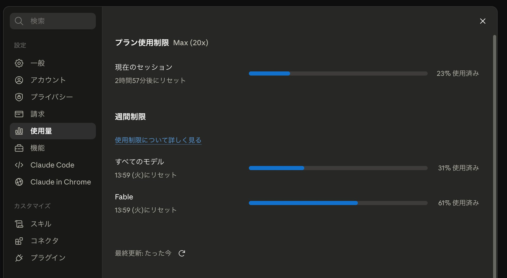
3秒だと印税入んないんだよな確か
#ダレハナ
熱情アルゼンチンを勝たせたメッシの「奇跡」、VARの「見えざる手」
【サッカーワールドカップ】熱情アルゼンチンを勝たせたメッシの「奇跡」、VARの「見えざる手」
ロシア全土でガソリン危機が起きガソリンスタンドで殴り合いが日常に 勝てばガソリンゲットできる北斗の拳の世界 ※ちなみに粗悪ガソリンなので給油すると壊れる
ロシア全土でガソリン危機が起きガソリンスタンドで殴り合いが日常に 勝てばガソリンゲットできる北斗の拳の世界 ※ちなみに粗悪ガソリンなので給油すると壊れる : ハムスター速報
なるせひろのりさんがリポスト
ボルボ、新型フラグシップクロスオーバーEV「ES90」 価格979万円から
https://
car.watch.impress.co.jp/docs/news/2123
401.html
… #ボルボ #ES90
「ポケモンUT」第2弾，7月24日に発売決定。「ポケットモンスター赤・緑」の世界を再現したTシャツをラインナップ
https://
4gamer.net/s/G042085.2607
08009
…
MENとKIDSでそれぞれ4種，合計8種が展開される。商品の詳細やムービーを確認できる特設ページも開設された
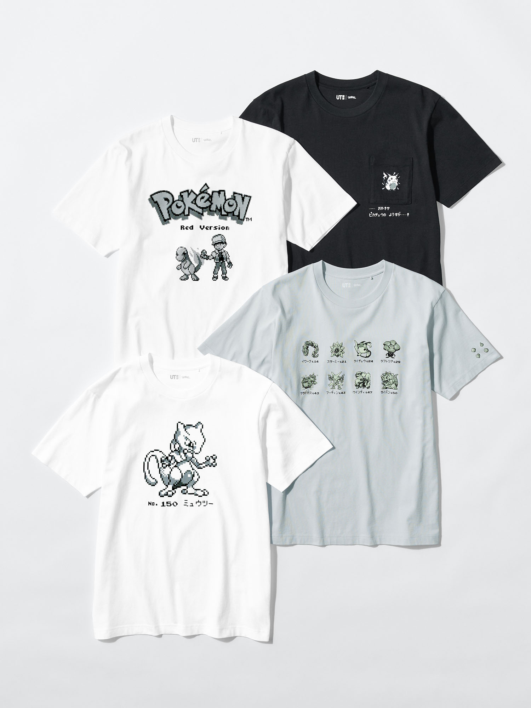
このごろ流行りの耳を塞がないイヤホン、波動のチカラで進化する...?
Sponsored by シオノギヘルスケア株式会社
https://
gizmodo.jp/article/kikipp
a-earphone-02/
…
＞ω＜さんがリポスト
ボッシュのE2E自動運転、中国技術取り込みASEANへ 日本でも公道試験
https://
xtech.nikkei.com/atcl/nxt/colum
n/18/03367/062300031/?n_cid=nbpnxt_twbn
…
2026年06月18日
ボッシュが横浜でNOAによる自動運転の試験走行を開始、中国の導入実績がベースに
https://
monoist.itmedia.co.jp/mn/articles/26
06/18/news061.html
…
ボッシュは中国のWeRideとの共同開発により短期間での開発に成功しており．．
ボッシュのE2E自動運転、中国技術取り込みASEANへ 日本でも公道試験
【続報】公式発表が来ました
GPT-5.6（Sol / Terra / Luna）は米時間の今週木曜・7月9日に一般公開。プレビューアクセスは現在、世界へ拡大中とのことです
https://
x.com/OpenAI/status/
2074704958419792299
…
AGIラボ
@ctgptlb
【速報】GPT-5.6、一般公開へ 米政権が公開制限を解除
6月末から政府承認制の約20社限定プレビューとなっていたGPT-5.6について、トランプ政権が制限を解除。
Fable 5復帰に続く解禁で、今週中の一般公開に期待が高まっています。各社のフロンティアモデルが一斉に出そろう週になりそうです。
なるせひろのりさんがリポスト
平塚敏深（服ナシ）
#アニメ生穴る #せいちょかい
Torishima / INTPさんがリポスト
Fable、延長されたはいいが、リセットされてないせいで、サブスク終了間際まで使いまくった人達が使えない状況
もしかして、それを狙って「12日まで延長してもそんなに使われないだろう」と踏んで・・・？
EARLの医学&AIノート
@EARL_med_tw
7月12日まで、全有料プランでClaude Fable 5へのアクセスを延長
「Minecraft」，クッションが登場して座れるように。Java版向け26.3 Snapshot 3，Bedrock版向けPreview 26.40.30の配信を開始
https://
4gamer.net/s/G012627.2607
08010
…
スポーンポイントを設定せずに一晩中眠れるわらベッドや，廃キャンプも登場した
【悲報】細田守監督、『果てしなきスカーレット』は爆死したと自ら認めてしまう #漫画・アニメ等
【悲報】細田守監督、『果てしなきスカーレット』は爆死したと自ら認めてしまう - オレ的ゲーム速報@刃の記事ページ
jin115.com
【速報】GPT-5.6、一般公開へ 米政権が公開制限を解除
6月末から政府承認制の約20社限定プレビューとなっていたGPT-5.6について、トランプ政権が制限を解除。
Fable 5復帰に続く解禁で、今週中の一般公開に期待が高まっています。各社のフロンティアモデルが一斉に出そろう週になりそうです。
在留外国人「5年以上日本で働きたい」61%に急減
https://
nikkei.com/article/DGXZQO
UC076OQ0X00C26A7000000/?n_cid=SNSTW005&n_tw=1783480661
…
調査したマイナビグローバルは「円安や母国の賃金上昇に伴い帰国を選択する人が増えている」と分析しています。
在留外国人「5年以上日本で働きたい」61%に急減 民間調査、円安響く
「週刊VTuberファイル」File.128：杏夜くもり【Re:AcT】
https://
4gamer.net/s/G086918.2607
03050
…
「週刊VTuberファイル」では，さまざまなシーンで活躍するVTuberを毎回1人フィーチャーし，その魅力を紹介していきます
Haruhiko Okumuraさんがリポスト
GPT-5.6 Sol、Terra、Lunaとともに、今週の木曜日に公開ローンチします。
プレビューアクセスを今、世界的に拡大しています。
こういうのを見ると、ハードウェアはゴミでしかない時代なのだなと。
今どきだと、一万円のAndroid端末(まだあるのかな？)でもスクロールはかくつかないだろうに、なぜ、かくついてるのだろう？
逆に、今は、そんなかくつくものを作る方が、難しそうなのに。
ジン｜Tech 𝗫 Soc
@EngineEngrRnD
日本の自動車産業、周回遅れ感が酷い
貝さんさんさんがリポスト
まほよ小説版全部買うとセール価格のまほよを三本買うくらいの値段になるのか……
ガンホーまた逮捕者出してるじゃん
フォロワーさんが同じシンガーさんにハマってるのとっても嬉しいのでずっとニコニコしてます
琶舞さんってほんとーーーに不思議な手触りの歌声をされてて、それがダーク推しの曲と合わさってかなり琶舞さんにしかできない味を出し続けててとっても素敵だな〜〜〜〜って思ってます
スクエニのアプリがまた1つ…『FF7エバークライシス』10月7日にサービス終了、『FF7』を冠する作品として満足いただけるクオリティでの提供が困難
https://
gamespark.jp/article/2026/0
7/08/168979.html?utm_source=twitter&utm_medium=social&utm_content=tweet
…
「FINAL FANTASY VII EVER CRISIS」，2026年10月7日15：00にサービスを終了すると発表
https://
4gamer.net/s/G055549.2607
08008
…
ユーザーが満足できるサービスの提供が困難と判断。サービス終了までのロードマップも公開
一瞬でミュート＆ライトをオンオフ。HyperXのマイク早押しクイズで推しマイクに出会った
https://
gizmodo.jp/article/hyperx
-4mic/
…
Sponsored by
@HyperXjapan
一瞬でミュート＆ライトをオンオフ。HyperXのマイク早押しクイズで推しマイクに出会った | ギズモード・ジャパン
貝さんさんさんがリポスト
https://
kodansha.co.jp/book/products/
0000429331
…
星海社より発売予定の小説版『魔法使いの夜』ですが、上巻は8月27日発売、定価2750円の400ページとのこと
TYPE-MOONのノベルゲーム『魔法使いの夜』が、奈須きのこ自身の手によって小説としてここに新生！！
kodansha.co.jp
たぶんイベント終了後に取りに行く時間が厳しいです
西武鉄道イベント情報【公式】
@seibu_event
／
7/11(土)・12(日)に #ベルーナドーム にお越しの方へ
＼
#西武球場前駅(改札内)でお客さまのお荷物を預かります
荷物を預けて、身軽にイベントをお楽しみください！
事前予約がおトク
詳細
https://
ecbonist.ecbo.io/07111226/
※有料・預かり数に制限あり
#蓮ノ空 #lovelive
スマホを2つ目の画面として活用。MOFTのスタンドが完璧すぎた
スマホを2つ目の画面として活用。MOFTのスタンドが完璧すぎた | ギズモード・ジャパン
クラファン1日で目標達成の話題沸騰ハイスピードメカACT『オメガフェネクス』グローバルパブリッシング決定！『アーマード・コア』好きが約8年開発のすえ世界へ
https://
gamespark.jp/article/2026/0
7/08/168978.html?utm_source=twitter&utm_medium=social&utm_content=tweet
…
亀戸「隆乃湯」、雨が降ってて帰りも濡れるのによその風呂へ入る。愚かではあるけど自分を省みるのにほどよい愚かさだと思う。人は愚かさを受け入れなくなるとヤバくなるから。
レディース・ロール・メソッド、ライブで聴けたら本当に気持ちよくなれるだろうな…楽しみ！！！！！
破壊ミラーで相手の卵を全部月見で一杯した時は流石に酷すぎて一周回ってこれが一番面白い対戦なんじゃないかと思い始めた 最終的に破壊一切関係ない疾走連打で勝った
九州北部・中国・近畿で梅雨明け 気象庁、平年より11日早く
九州北部・中国・近畿で梅雨明け 気象庁、平年より11日早く
喪服レンタルの喪服レスキュー、年内40店舗へ倍増 5億円調達
喪服レンタルの喪服レスキュー、年内40店舗へ倍増 5億円調達
なるせひろのりさんがリポスト
京都の高麗寺では
ムスリム土葬の受け入れを積極推進
すでに複数契約済みで
将来的には3500区画まで拡大予定
しかもここ、
「在日韓国人2世」が運営しています
日本の土地で土葬推進...
なんて邪魔な存在なんだ
一回もDMやり取りしたことがない人からこれは、乗っ取られてからの詐欺DMですね〜。3日前から何もポストないし。
騒ぎ方の毛色がここと違いすぎるという問題は、ありけるが…
なるせひろのりさんがリポスト
佐藤二朗が睡眠障害悪化→抑うつだってよ
文春とフジどうすんのこれ
ᴋ_ᴍᴀʀᴜ_ᴅᴀᴜ_ʙᴀʙʏ
@k_maru_dau_baby
佐藤二朗（57）
睡眠障害が悪化「抑うつ状態」と診断
https://
dailyshincho.jp/article/2026/0
7081131/
…
鉄緑会売却、ベネッセの誤算 塾｢中受から大受まで｣一貫戦略の難しさ
https://
nikkei.com/article/DGXZQO
UC076UO0X00C26A7000000/?n_cid=SNSTW005&n_tw=1783472023
…
難関大に特化した受験指導塾「鉄緑会」。受講生の裾野が広い予備校や個別指導塾との相乗効果を生みにくい面も。買収したヒューリックも例外ではありません。
老後の住宅用地として購入も…… 三重県で“雑木林”と化した、建築不可の分譲地「ニューハイツ白鳳台」 煽り広告や分譲後の造成工事協力など、驚きの実態の数々 ＜連載：限界ニュータウン探訪記 ねとらぼ版＞...
老後の住宅用地として購入も……
三重県で“雑木林”と化した、建築不可の分譲地「ニューハイツ白鳳台」 煽り広告や分譲後の造成工事協力など、驚きの実態の数々【限界ニュータウン探訪記 ねとらぼ版】
（記事URLはリプから）
ポン☆潤々さんがリポスト
/／
#オールワークスメイド
エンディング主題歌本日発売
\＼
#仲村宗悟 さんが歌唱する
エンディング主題歌「ハンドメイド」のCDが本日より発売開始
初回限定盤
https://
lnk.to/LACM-34719
通常盤
https://
lnk.to/LACM-24719
#仲村宗悟ハンドメイド
パネルミッションイベント開催中！
報酬
名刺背景『佑芽&咲季＆ことね』
初星トロフィー など！
開催期間：7/21 (火) 10:59 まで(予定)
ミッションクリアでパネルを解放
最近はむしろブルースカイがメインで騒いでるまである
セミが鳴いてる(´･_･`)
新ガシャ開催中！
SRサポートカード
『ずっしりスイカでりしゃす』
開催期間：7/21 (火) 10:59 まで(予定)
#GOMYWAY!! 佑芽ガシャ
クソ暑いからずっと曇りでいいんだけど
315プロNightのあいさつ、私は「えむばんは（全てひらがな）」だと思っていたんだけど公式的には「Мばんは（SideMのМであることを強調）」なんだな。なるほど。
新ガシャ開催中！
SSRサポートカード
『次の曲は～ッあの曲だ！！』
開催期間：7/21 (火) 10:59 まで(予定)
#GOMYWAY!! 佑芽ガシャ
新ガシャ開催中！
『 #GOMYWAY!! 』
歌唱：花海佑芽 (CV. 松田彩音)
作詞：yura
作曲：NBGI（神前暁）
編曲：星 銀乃丈
開催期間：7/21 (火) 10:59 まで(予定) #学マス
新ガシャ開催中！
【GO MY WAY!!】花海佑芽の
アイドル衣装／髪型をご紹介
開催期間：7/21 (火) 10:59 まで(予定)
#GOMYWAY!! 佑芽ガシャ
家庭用ゲーム機のハックが「Hello World」という文字の表示から始まるように、数字の表示というシンプルならものであるが「大きな第一歩である」事は言うまでもない。
多分ですが。
女性声優にXの“青バッジ”を勝手に送り付ける怪事案が相次ぐ 津田美波さん、黒木ほの香さん、土屋李央さんなど
女性声優にXの“青バッジ”を勝手に送り付ける怪事案が相次ぐ 津田美波さん、黒木ほの香さん、土屋梨央さんなど
なるせひろのりさんがリポスト
BOOTH、0円出品で「セールはこちら」きょうから禁止 新着通知を使った“宣伝ハック”に終止符
BOOTH、0円出品で「セールはこちら」きょうから禁止 新着通知を使った“宣伝ハック”に終止符
確かに言いそう
ChatGPTに「高田純次みたいに適当に答えて」と言ったら…… まさかの“テキトーすぎる”回答に「何の参考にもならんくて草」
（記事URLはリプから）
ChatGPTに「友達との距離の測り方」を聞いたら…… まさかの“テキトーすぎる”回答に「何の参考にもならんくて草」「高田純次がいいそう」（1/3） | AI ねとらぼ
新ガシャ開催中！
ライブツアー限定プロデュースアイドル
【GO MY WAY!!】花海佑芽
開催期間：7/21 (火) 10:59 まで(予定)
#GOMYWAY!! 佑芽ガシャ
陰謀論すぎるけれど面白すぎるのでAIでギュられない仕事として話題
新ガシャ開催中！
ライブツアー限定プロデュースアイドル
【GO MY WAY!!】花海佑芽
新サポートカード
次の曲は～ッあの曲だ！！
開催期間：7/21 (火) 10:59 まで(予定)
#GOMYWAY!! 佑芽ガシャ
確かに実在していたら闇バイトであることには間違いない
プロセカ6周年記念
特別企画のお便り募集中
「学校で流行っていること」や「私の学校のここがすごい！」エピソードをお待ちしております
お便りの応募はこちら
https://
questant.jp/q/LXAS6VA5
#プロセカ
大谷翔平がメジャー通算300本塁打 2戦連発の20号先頭打者弾
MLB:大谷翔平がメジャー通算300本塁打 2戦連発の20号先頭打者弾
Metaの新AI「Muse Image」公開に伴う注意点 Instagram公開アカウントのコンテンツ再利用を防ぐには
Metaの新AI「Muse Image」公開に伴う注意点 Instagram公開アカウントのコンテンツ再利用を防ぐには
佐藤二朗さん「投稿、これを最後にします」 #ゲーム業界

佐藤二朗さん「投稿、これを最後にします」 - オレ的ゲーム速報@刃の記事ページ
jin115.com
Haruhiko Okumuraさんがリポスト
この時は、つい「メディア規制」を強調して書いてしまったけど、冷静になると、セクハラやパワハラの告発者が無断で録音できなくなるとか、証拠集めしにくくなることこそ弊害なんじゃないかな、と今は思っています。でも、あの時は全く手探りで第1報で出したので、これが限界だった。無念
miwa seshimo
@SeshimoMiwa
久しぶりに週刊金曜日に書きました/亡霊の如く蘇る「メディア規制」 報道機関も罰則対象の「個人情報保護法」改正案が衆院通過 | 週刊金曜日オンライン
https://
kinyobi.co.jp/kinyobinews/20
26/06/10/antena-1751/
…
ポン☆潤々さんがリポスト
【『GRANBLUE FANTASY: Relink - Endless Ragnarok』発売記念フェアinアニメイト】が開催決定！
期間中、対象店舗にて関連商品をご購入･ご予約で【ポストカード(全8種)】を1枚プレゼント！
詳細はこちら
https://
x.gd/WmbIH
#リリンク
#EndlessRagnarok
TGS2026出展社一覧が公開！759社が出展、51の国と地域が参加―30周年の節目に史上初の5日間開催へ
https://
gamespark.jp/article/2026/0
7/08/168977.html?utm_source=twitter&utm_medium=social&utm_content=tweet
…
話題の「AI」が、まさかの「メガドライブ」で動作!!
PCで学習したAIをメガドライブ向けに最適化し、手書き数字の認識に成功!!
今後はメガドライブでさまざまなAIを動かす土台作りが目的とのこと。
僕らの「メガドライブ」には、まだまだ無限の可能性があるンだッッ!!
https://
github.com/Daniel-EST/dee
p-genesis-mnist
…
テスラ車が住宅に突っ込み高齢女性が死亡 遺族は「運転支援システムに欠陥」と訴えも、マスク氏らは反論 米国
テスラ車が住宅に突っ込み高齢女性が死亡 遺族は「運転支援システムに欠陥」と訴えも、マスク氏らは反論 米国
アップデートのお知らせ
本日7/8(水)12時頃に、Ver.2.30.3の強制アップデートを行いました。
本アップデートでは、不具合の修正を実施しております。
詳細はゲーム内お知らせをご確認ください。
引き続き #ユメステ をよろしくお願いいたします。
テスラさんがリポスト
RAKUDAバックレスト
楽ちんと大好評
林明子さん死去 81歳、絵本作家「はじめてのおつかい」
林明子さん死去 81歳、絵本作家「はじめてのおつかい」
「聖女として異世界召還されたのに見捨てられ放逐されたけど、キャンピングカーを召還できるので問題なし、そのキャンピングカーには無限に荷物を積めて冷蔵庫の食料や水は使った分補充されます、そんな主人公が釣りをしてたらイケメンを釣り上げました」というアニメを見てます。何言ってるの？
オープンもう1週間早ければ
「東京ゲームショウ2026」に世界51の国と地域から759社が出展。一覧も公開に
https://
4gamer.net/s/G999110.2607
07036
…
出展社のうち484社が国内，275社が海外からとなる。また，展示規模は3946小間になる
なるせひろのりさんがリポスト
『#今日から始める幼なじみ』
第174話「幼なじみと意地っ張り」
本日先読み有料公開です
昨日無料公開のキス回（まだの方はリプ欄から是非！）のその後が描かれる......
楓と航平、ふたりの仲良し回です
▼先読みはコチラ▼
https://
kuragebunch.com/episode/122074
21983885060952
…
「NTE」Ver.1.2「九百九十九夜」配信開始。新Sランクキャラ「真紅」と常設コンテンツ「ウォーレン大陸」が登場，SteamやEpic Games Storeにも対応【PR】
https://
4gamer.net/s/G081722.2607
07017
…
Sランク常設キャラ選択箱の配布や，本質サイコロがもらえるログインボーナスの開催なども
西日本側は“〇〇鼻”という地名が多い
日本地図で「鼻」が付く地名を青色にしたら……「びっくり!!」 驚きの結果が300万表示「そんなにあるのか」
（記事URLはリプから）
日本地図で「鼻」が付く地名を青色にしたら……「びっくり!!」 驚きの結果が300万表示「そんなにあるのか」（1/2） | 地域 ねとらぼ
都市型オープンワールドが異世界ファンタジーに。「NTE」Ver.1.2「九百九十九夜」で真紅，イロヒ，ミントとウォーレン大陸を先行体験【PR】
https://
4gamer.net/s/G081722.2607
06001
…
真紅もイロヒも，いきなり遊べる。真紅はクールな見た目に反して，ルーズで不器用で人間くさい
なるせひろのりさんがリポスト
知り合いのお姉ちゃん
就職氷河期世代の不満や要望、政府がSNSで収集・分析
https://
nikkei.com/article/DGXZQO
UA018JQ0R00C26A7000000/?n_cid=SNSTW005&n_tw=1783472246
…
就労や介護、資産形成を支援する政策に反映します。自発的なSNS投稿は本音を把握しやすい一方、無関係な意見やスパムを拾う恐れも。有用な情報を選び出す対策が必要です。
スクエニ、ECサイトが1週間以上使えず 決済など重要機能の不具合でメンテ長期化
スクエニ、ECサイトが1週間以上使えず 決済など重要機能の不具合でメンテ長期化
ユウマボウズさんがリポスト
＼アニメ「ガールズバンドクライ」POPUP SHOP／
＼POP UP SHOP開催決定！／
「ライブフェス」をコンセプトにしたトゲナシトゲアリの東映アニメーション描き下ろしが登場！
■開催期間：7/22（水）~8/4（火）
〈東京〉新宿髙島屋 4F
〈大阪〉リンクス梅田 3F
〈福岡〉MARK IS 福岡ももち 2F
ポン☆潤々さんがリポスト
【315プロNight!】#SideM #315ナイト
／
7/3(金)放送回
”チラ見せ聞かせ”動画公開
＼
パーソナリティ
深町寿成さん
笠間 淳さん
伊瀬結陸さん
本編タイムシフトはこちら
https://
live.nicovideo.jp/watch/lv350758
378
…
イベント最終日
イベント『Stella Generalprobe!』は本日22時までの開催です！
また本日22時過ぎに、次回イベントの情報公開を予定しております
ぜひチェックよろしくお願いいたします
#ユメステ #ワーダイ #ワールドダイスター
ポン☆潤々さんがリポスト
アイドルマスター SideM in K@SHIBA開催中!
コラボ企画終了までのラスト5日間(令和8年7月18日(土)〜同月22日(水))は、コラボ参加企業の一部店舗が定休日も営業します!
ぜひ香芝にお越しください♪
▼詳しくはこちら
https://
city.kashiba.lg.jp/soshiki/15/643
48.html
…
#Legendersと巡る香芝
「恋と深空」，ゲーム内コンテンツの変更に伴い，スペシャルイベント「キミに恋するサマーデート」の開催を中止
https://
4gamer.net/s/G053594.2607
08004
…
本イベントは，東京のベルサール六本木で7月11日，12日に開催される予定だったものだ
日経平均午前498円安、対イラン「報復攻撃」に動揺 循環物色は健在
日経平均午前498円安、対イラン「報復攻撃」に動揺 循環物色は健在
携帯のやねんけど・・
#これを見た人は自分のスマホで最も古い写真を公開しなさい
アサヒ純利益37％減 25年12月期、サイバー攻撃で170億円営業減益
決算:アサヒ純利益37％減 25年12月期、サイバー攻撃で170億円営業減益
＞ω＜さんがリポスト
このガチャポン。ちゃんと育てたら立派な青紫蘇になりましたよ。鷹の爪が欲しかった…
「ハロウィン ザ・ゲーム」の新マップが公開に。原作映画に登場した「ウォレス邸」「ドイル邸」をゲーム内で再現
https://
4gamer.net/s/G093878.2607
08005
…
新マップ「オレンジ・グローブ・エステート」では，屋外での追跡劇や，建物内部で上下の階層を生かした立体的な駆け引きを楽しめるという
『マイクラ』階段と看板の“なんちゃって椅子”、ついに椅子になる―羊毛の「クッション」や夜を過ごせる「藁のベッド」が追加！今秋アプデの最新スナップショットが更新
https://
gamespark.jp/article/2026/0
7/08/168976.html?utm_source=twitter&utm_medium=social&utm_content=tweet
…
スティーブとアレックスは座ることを覚えたようです。
超有名カリスマホスト・軍神さんが書いた『女性の扱い方ホストマニュアル』 ホストの思考回路がエグすぎると話題に
超有名カリスマホスト・軍神さんが書いた『女性の扱い方ホストマニュアル』 ホストの思考回路がエグすぎると話題に : ハムスター速報
GIGABYTE設立40周年の記念イベントが7月17〜20日に秋葉原で開催決定
https://
4gamer.net/s/G025981.2607
08006
…
会場となるソフマップAKIBAパソコンデジタル館では，限定セールも行われる
深津 貴之 / THE GUILD, noteさんがリポスト
note上方修正 「AI活用、想定以上」で人件費率低下 2Q累計営業益は「20倍超」に
note上方修正 「AI活用、想定以上」で人件費率低下 2Q累計営業益は「20倍超」に
リビングのデスクを広く使いたい人へ。クランプ式「LED DESK LAMP」で手元の影を減らす #BuyPR
リビングのデスクを広く使いたい人へ。クランプ式「LED DESK LAMP」で手元の影を減らす | ギズモード・ジャパン
自民党、定数削減法案の今国会成立の断念伝達 中道と国対委員長会談
自民党、定数削減法案の今国会成立の断念伝達 中道と国対委員長会談
日本経済新聞 電子版（日経電子版）さんがリポスト
欧州最大級の防衛見本市、日本は2社に激減 見送り続出に透ける課題
欧州最大級の防衛見本市、日本は2社に激減 見送り続出に透ける課題
7月のPSプラス、無料配信のタイトル発表！コールオブデューティ MW3きたあああ！！ #ゲーム業界
7月のPSプラス、無料配信のタイトル発表！コールオブデューティ MW3きたあああ！！ - オレ的ゲーム速報@刃の記事ページ
jin115.com
「いつか買おう」の“いつか”は、もうすぐ来なくなる―あと少しで買えなくなる、PSハード4世代分の記憶。PS3/PS Vita向けPS Store終了を前に、今こそ確保すべきPSP向けDLタイトル15選
https://
gamespark.jp/article/2026/0
7/08/168975.html?utm_source=twitter&utm_medium=social&utm_content=tweet
…
ポン☆潤々さんがリポスト
フレッシュネス・アロハフェス
ハワイのローカルフード
"スパイシープルドポークバーガー"が
ビールにあう～
7/15の発売を記念し、
店頭で使えるカード1,000円分が当たる
‣応募期間
7/14まで
‣応募方法
①
@Freshness_1992
をフォロー
② この投稿をリポスト
③ 7/17までに当選者へDM
女性用便器の数は男性用以上に、国交省が初の指針 トイレ行列改善へ
https://
nikkei.com/article/DGXZQO
UC2411H0U6A620C2000000/?n_cid=SNSTW005&n_tw=1783469268
…
多くの施設で女性用の便器が男性用に比べて少ないことが国交省の調査で判明。
指針では建設時に男性が多く利用する想定で設計されたことが要因と分析しました。

女性用便器の数は男性用以上に、国交省が初の指針 トイレ行列改善へ
原体験は資産か，バイアスか。女性起業家3名が語る，事業に「乗せる」原体験との付き合い方［IVS 2026］
https://
4gamer.net/s/G999104.2607
08001
…
原体験は“乗せる”ものーー強すぎる当事者性を戦略的に隠す判断とは。女性起業家3名の本音
fableの利用復活しても、利用リミット復活しないやん…
ポン☆潤々さんがリポスト
本日22:30からのアイマスMORは!ゲストに作詞家yuraさんをお迎えしてお届け!yuraさんの選曲と中村繪里子さん鈴木絵理さんとのトークをお楽しみください!タイムシフトもお忘れなく!会員限定おまけ放送もぜひ!
#imas_MOR #アイマスMOR
THE IDOLM@STER MUSIC ON THE RADIO #404
詳細はこちら。
https://
costory.jp/cf-published-s
ku-groups/1175003493?utm_source=MG_gizmodo&utm_medium=x_&utm_campaign=gm-oxtak-money-penny
…
[BuyPR]
ただの録音を「使える情報」に変換 AI時代のボイスレコーダー「Oxtak」 ｜ CoSTORY
[ Oxtak ]
このサイバー感、ただ者じゃない。
Oxtakは、録音・文字起こし・要約・リアルタイム翻訳・AIチャットまでこなす小型AIレコーダー。
4インチディスプレイで、スマホっぽいけどスマホじゃない。
音声データをOxtakプラットフォームの外に出さないセキュア仕様。

Amazonポストしたしワイも買い物しようかなと見始めたんだけど、これひどくね？
https://
amzn.to/4aCsSJ0
花王限定のポイントアップも併せてやってるみたいだから
クイックルワイパー買おうとしたら
プライムデー期間中に値上げする令和最新版みたいなことやってる花王にはガッカリだよ
日本経済新聞 電子版（日経電子版）さんがリポスト
全東信の破産、飲食店が混乱 クレカ決済使えず資金繰り悪化も
全東信の破産、飲食店が混乱 クレカ決済使えず資金繰り悪化も
スイッチ「ゲームボーイ・GBアドバンス Nintendo Classics」に合計5作品が追加！『トマトアドベンチャー』や『スーパーマリオランド3 ワリオランド』も
https://
gamespark.jp/article/2026/0
7/08/168974.html?utm_source=twitter&utm_medium=social&utm_content=tweet
…
渡田の山一、再開してたので久しぶりの地獄肉ネギそば。辛い。目が覚める。マンガみたいな梅オニギリも良い。川崎の川崎らしい店だ。
昨日の #きままクラフト
日本経済新聞 電子版（日経電子版）さんがリポスト
完全養殖ウナギ、新日本科学が量産へ 鹿児島で稚魚100万尾
完全養殖ウナギ、新日本科学が量産へ 鹿児島で稚魚100万尾
こういうの、学校で一度教わっておくのって、結構大きいのだろうなって。知らないことは、本当に知らないし、わからないから、知らないままになりがちでしょうから。
300歳の米国への手紙 50年後の未来に問う、危機からの復元力
300歳の米国への手紙 50年後の未来に問う、危機からの復元力
『パルワールド』プレイヤー数4,000万人突破！7月10日の正式版に向けこれまでを振り返る特別映像公開
https://
gamespark.jp/article/2026/0
7/08/168973.html?utm_source=twitter&utm_medium=social&utm_content=tweet
…
へー×１０。
見事な設計だ。
Civixplorer
@Civixplorer
トリビア：
毎年7月8日 UTC 11:15 に、世界人口の99%が日光を浴びます
自民党、ナイジェリアに目を付ける・・・「ナイジェリアは大変重要な国」 #炎上
自民党、ナイジェリアに目を付ける・・・「ナイジェリアは大変重要な国」 - オレ的ゲーム速報@刃の記事ページ
jin115.com
Amazonプライムデー先行セール開始やで！
https://
amzn.to/4pa6r3P
買う物無くてもとりあえずエントリーだけでもやっておくとええかもな
「Dr. MARIO & パネルでポン」「ワリオランド」など5作品が，ゲームボーイアドバンス＆ゲームボーイ Nintendo Classicsに本日追加
https://
4gamer.net/s/G044018.2607
08003
…
ゲームボーイアドバンス Nintendo Classicsに2作品，ゲームボーイ Nintendo Classicsに3作品
貝さんさんさんがリポスト
"仏アヌシーにアニメーション総合センター誕生
展示、映画、教育、文化創出を担う映画祭連動の地域振興拠点"
映画コムから
アヌシーのアニメーションセンターの現地レポート
仏アヌシーにアニメーション総合センター誕生 展示、映画、教育、文化創出を担う映画祭連動の地域振興拠点
『紅の砂漠』スイッチ2版、準備中で「基本的なゲームプレイが可能なレベル」とCEO説明。グラフィックやアクションなどを維持できるかが重要とも
https://
gamespark.jp/article/2026/0
7/08/168972.html?utm_source=twitter&utm_medium=social&utm_content=tweet
…
次作『ドケビ』は世界観の構築やアセット制作を終えコンテンツ制作段階に移行したとしています。リリース時期は2028年後半目標。
8年かけて個人開発したハイスピードメカSTG「OMEGA PHENEX」，Astrolabe Gamesがグローバルパブリッシャに決定。世界展開や翻訳などを支援【PR】
https://
4gamer.net/s/G100248.2607
07021
…
ウィッシュリスト登録13万件を突破。高速機動メカを操り，広大なマップを縦横無尽に飛び回って敵部隊や巨大ボスに挑む
雪之丞さんさんがリポスト
／
#原神 「Luna Ⅷ」リリース記念
キャンペーン！第2弾
＼
7月14日(火)23:59まで毎日参加可能！
原神グッズがその場で当たるチャンス！
参加方法：
①
@Genshin_7
をフォロー
②本投稿をリポスト
#原神CP
↓ 動画をタップして結果を確認！
1:43
ポン☆潤々さんがリポスト
ゆりもだよ。
7月15日（水）の始発から、
QR乗車券に切り替わるよ
こんな感じで改札を通れるよ～
たのしみにしていてね♪

ゆりかもめ公式お知らせ
@yurikamome_info
＼鉄道事業者として全国初！／
全改札通路でクレカ・ＱＲが利用可能になります
2026年5月28日（木）～2026年9月中旬までに、すべての改札機を デジタル乗車券対応といたします。
また、2026年7月中旬には、現在各駅の券売機で販売している磁気乗車券について、QR コー
/／
今日は学マ水曜日！
\＼
今週は『ジュエル 250個』を配布中
ログインして受け取ってくださいね！
配布期間：7/15(水)4:59まで (予定)
#学マス

佐々木俊尚＠新著「フラット登山 日本を歩く旅60」7月8日刊行！さんがリポスト
この想像すらできなかった結果
に加えて最後のオチが面白すぎて
まだ笑ってる
（サウンドオン推奨）

キオクシア株価が乱高下 米ＳＯＸ安で売り先行も先高観強く

キオクシア株価が乱高下 米SOX安で売り先行も先高観強く
こんなのが30ドルで売ってるんですね。
ESP32-C5 devkit offers 2.8-inch capacitive touch display, dual-band Wi-Fi 6, Bluetooth 5 LE, LiPo...
太陽工業、暑さ対策で雪を配送 新潟→首都圏まで特殊な袋で
太陽工業、暑さ対策で雪を配送 新潟→首都圏まで特殊な袋で
ポン☆潤々さんがリポスト
やっぱり〜？
ぐでたま【公式】
@gudetama_sanrio
あ〜それは気圧が悪いわ〜
股間ビームや怪しい棒で大暴れ！マッサージ師になり街を幸せにする、おバカなライフシム『Pattaya Simulator』配信開始。『GTA』＆『セインツロウ』の影響大
https://
gamespark.jp/article/2026/0
7/08/168971.html?utm_source=twitter&utm_medium=social&utm_content=tweet
…
これかぁ！！ でも、同胞品だから違うのかな？
日本経済新聞 電子版（日経電子版）さんがリポスト
ガンホー元システム本部長を逮捕 架空発注4000万円、背任疑い
ガンホー元システム本部長を逮捕 架空発注4000万円、背任疑い
本気で本州のツキノワグマ被害をなくしたい（駆除を迅速に進めたい）のなら、
ハーフライフル規制（ライフリングがある散弾銃の所持を、ライフルと同じく１０年の散弾銃経験を必須にした規制。除・北海道）は撤廃した方がいいと思うんですけどね・・・。
NHK@首都圏
@nhk_shutoken
東京都 ツキノワグマの狩猟 解禁へ 都内のクマは増加傾向か
https://
news.web.nhk/newsweb/na/nb-
1000130211
…
https://
news.web.nhk/newsweb/na/nb-
1000130211
…
sgoｱﾛﾌｧ C調 10年さんがリポスト
#イエティ見つけた
なるせひろのりさんがリポスト
フィギュアなど157点引っ越し先に届けず…逮捕の41歳男「すでに処分した」 鹿児島
フィギュアなど157点引っ越し先に届けず…逮捕の41歳男「すでに処分した」 鹿児島（MBC南日本放送） - Yahoo!ニュース
＞ω＜さんがリポスト
今年も室戸市内外から職場体験が来ていますが…。
今朝登校して来た中学生は履歴書持参。
内容が素晴らしい上に面白いです。
どのような体験がこの生徒に向いているかなど、大変参考になります。
他の学校もぜひ履歴書を持参してください。
こっちみんな
ヒューリック株価が５日続伸 進学塾「鉄緑会」を買収
ヒューリック株価が5日続伸 進学塾「鉄緑会」を買収
エンドスさんがリポスト
【ペルシャ文化メモ③】
『天幕のジャードゥーガル』1話後半。
シタラが焦がしてしまった料理を、アニースが運ぶあの鍋。
ペルシャの家庭料理では、とても身近な存在です。
煮込み料理からご飯作りまで幅広く使える万能鍋！
さすがに同じ素材のものを実家では使っていませんが、母に見せたところ
メタが新AI画像生成モデル 効率的な編集で巻き返し、広告収入に期待
メタが新AI画像生成モデル「Muse Image」 効率的な編集で巻き返し
100万部突破したなろう系漫画家さん「紙は時代に合ってない、今後は電子書籍のみで販売する」 #漫画・アニメ等
100万部突破したなろう系漫画家さん「紙は時代に合ってない、今後は電子書籍のみで販売する」 - オレ的ゲーム速報@刃の記事ページ
jin115.com
Torishima / INTPさんがリポスト
実は純正で用意されていて/model sonnet とか /advisor fableとすれば設定されるが、ちょっとバグもあるようで、なんらかの理由でロックされると同じセッションでは一生advisor使えなかったりする。
深津 貴之 / THE GUILD, note
@fladdict
Fableを管理者じゃなくて、「アドバイザー」として使うアプローチ。 「アドバイザーSKILL」をつくって、CLAUDE.mdの方には、「苦戦しているときには上位モデルで手伝ってくれるのでアドバイザSKILLを起動してください」みたいに書く感じか。 x.com/ClaudeDevs/sta…
デスクの裏に「ゲーム機専用収納」増やしちゃいました。さすが山崎実業…
デスクの裏に「ゲーム機専用収納」増やしちゃいました。さすが山崎実業… | ギズモード・ジャパン
アジアンフィットでズレ知らず。廃PETが生まれ変わった15gサングラス #BuyPR
アジアンフィットでズレ知らず。廃PETが生まれ変わった15gサングラス | ギズモード・ジャパン
なるせひろのりさんがリポスト
【悲報】暇空茜、Xアカウントが凍結により終わる
@himasoraakane
ど、どうしたんだ！？
日本経済新聞 電子版（日経電子版）さんがリポスト
投資家が「参考にしている人ランキング」に異変 トップは誰に
投資家が「参考にしている人ランキング」に異変 トップは誰に
なるせひろのりさんがリポスト
昨日これを置いて行った方へ。
貴方は善意と思っていても我々にとっては迷惑ですのでやめてください。特にキャベツは馬が食ったら疝痛になって最悪死にます。馬のことを何も分からないのにこういうことされるととても困ります。本当にやめてください。
NHK「東京の小学生が大変なことになってます！通学時間が５分から１５分と３倍になる凄まじい影響が出ています！！！！」全国ニュースに
NHK「東京の小学生が大変なことになってます！通学時間が５分から１５分と３倍になる凄まじい影響が出ています！！！！」全国ニュースに : ハムスター速報
② Orchestrator–Worker
Fable 5をオーケストレーターとして使用する。 Fable 5は計画を立て、ワーカー（Sonnet 5）に委任する。
BrowseComp において、Fable 5 オーケストレーター + Sonnet 5 ワーカーサブエージェントでFable 5 オーケストレーターは、Fable 5 の性能の 96% を価格の 46% で達成

それぞれプロンプトの例:
① Executor–Advisor
基本的には自分で実行して。ただ、難しい判断や行き詰まった時には、より賢いAdvisorを呼び出して助言を受けて。
② Orchestrator–Worker
まずOrchestratorとして全体を設計し、タスクを分解して。その後各Workerに作業を割り当て結果を統合して。
【必見】Fable 5を高精度に節約する手法2つ
AnthropicはFable 5の精度を保ちつつもトークンを節約する公式パターンを2つ公開しました。詳細はスレッド
1. Executor–Advisorパターン
Fable 5のスコアの92%を価格の63%で達成
2. Orchestrator–Workerパターン
Fable 5の性能の96%を価格の46%で達成
Netflix、「VOGUE」「Rolling Stone」など著名メディアの動画を配信へ
Netflix、「VOGUE」「Rolling Stone」など著名メディアの動画を配信へ
？？？？見れば見るほど？？ やばい物かな
えっ、これ何？？？？
竹直也『なぜ、空き店舗が連なる温泉地が再び活気を取り戻したのか』。じゃらん入社から蔵王温泉担当、やがて起業、蔵王温泉再生に取り組んだ体験談。竹氏がかつて日本中を放浪した体験が、地域の魅力や課題を掴む直感力に結びついている。個人の知的資本は座学・本から得られるものだけではない。
さたけさんがリポスト
生まれは名古屋
スガキンです
限定メニューやグッズ等の情報更新したぞう
https://
domdomhamburger.com/topics/7429.ht
ml
…
ドムドムハンバーガー
@domdom_pr
ドムドム、名古屋のここに作ってるぞう
7月28日（火）グランドオープン
ドムドムハンバーガー 大須万松寺通店
近隣のみなさま、よろしくお願いいたします
詳細はこちら
https://
domdomhamburger.com/topics/7429.ht
ml
…
佐々木俊尚＠新著「フラット登山 日本を歩く旅60」7月8日刊行！さんがリポスト
おはようございますブランチはそうめん。ツユは自家製。ナスときゅうりとシーチキンサラダ。昨日の早め晩ごはんはぁ〜、リゾット。昨日のブランチは、ぶっかけうどん。カボスの香りがよい #名もなき料理
日本と韓国「うちらもEUみたいに経済共同体にならない？」→日本人の6割、韓国人の7割が賛成 #韓国・中国

日本と韓国「うちらもEUみたいに経済共同体にならない？」→日本人の6割、韓国人の7割が賛成 - オレ的ゲーム速報@刃の記事ページ
jin115.com
“不可避な死”が待つVTuberをタイムリープして救え―PC向けSCRAP「リアル脱出ゲーム」な『ゆるゆる生配信する推しは100万回死ぬ』Steamで7月29日発売
https://
gamespark.jp/article/2026/0
7/08/168970.html?utm_source=twitter&utm_medium=social&utm_content=tweet
…
配信画面のシークバーを操作して時間を巻き戻し、“死の運命”を回避できるように導く。特典ステッカー付属パケ版も発売へ。
学園アイドルマスター【公式】さんがリポスト
【学マス】BIGフェイスぬいぐるみvol.2が登場！本日から予約受付開始！ #学マス #学園アイドルマスター #idolmaster
【学マス】BIGフェイスぬいぐるみvol.2が登場！本日から予約受付開始！
貝さんさんさんがリポスト
きみ死ぬ1話ありがとうございました！
アイキャッチのコンテ演出担当したので是非見てください！
引き続きよろしくお願いします！
#きみ死ぬアニメ
気になる。応援。
安野貴博＠チームみらい
@takahiroanno
本日、3回目となる「AIと民主主義に関する超党派勉強会」を開催しました。
“カスの『コーヒートーク』”でバズったゲーム、ついにSteamでお披露目。酒クズ先輩にトンデモ料理作る短編ADV『Living on Plain Pasta』
https://
gamespark.jp/article/2026/0
7/08/168969.html?utm_source=twitter&utm_medium=social&utm_content=tweet
…
・開発コンセプトは“カスの『コーヒートーク』”
・ついに正式名称が決定
Torishima / INTPさんがリポスト
Fableを管理者じゃなくて、「アドバイザー」として使うアプローチ。 「アドバイザーSKILL」をつくって、CLAUDE.mdの方には、「苦戦しているときには上位モデルで手伝ってくれるのでアドバイザSKILLを起動してください」みたいに書く感じか。
ClaudeDevs
@ClaudeDevs
Fable 5 でよく使ういくつかのパターン：
Fable 5 を「アドバイザー」として使う。
エグゼキューター（Sonnet 5）が Fable 5 にガイダンスを求めます。
ほとんどのトークンは、より低いエグゼキューター料金で課金されます。
「Claude Fable 5」サブスク、5日間延長発表 ユーザー悲喜こもごも「寝ずに頑張ったのに」「制限リセットして」
「Claude Fable 5」サブスク、突如5日間延長 ユーザー悲喜こもごも「寝ずに頑張ったのに」「制限リセットして」
『めっちゃカメレオン』早速チート対策アプデが入る。「推薦機能の大量付与チート」など一部に対処
https://
gamespark.jp/article/2026/0
7/08/168968.html?utm_source=twitter&utm_medium=social&utm_content=tweet
…
使用許諾契約書（EULA）では、明確に不正ツールやチートの使用が禁止されています。仲間内のプレイでも使わないようにしましょう。
xAI→SpaceXAI。イーロン・マスクのAI部門、名称変更でわかりやすくなる
xAI→SpaceXAI。イーロン・マスクのAI部門、名称変更でわかりやすくなる | ギズモード・ジャパン
データセンターの騒音防ぐ機器、売上高5年で倍増 ワタナベテクノス
データセンターの騒音防ぐ機器、売上高5年で倍増 ワタナベテクノス
おかえり
Claude
@claudeai
7月12日まで、全有料プランでClaude Fable 5へのアクセスを拡張します。
さたけさんがリポスト
＜東京は約3週間ぶりの青空！＞
今日8日(水)の関東は久しぶりの青空が広がっています。
東京のアメダスが最後に5時間以上の日照を観測したのは6月19日で、今日5時間以上の日照を観測すれば約3週間ぶりとなります。
昼間は夏らしい暑さとなるので、熱中症にご注意ください。
https://
weathernews.jp/news/202607/08
0101/
…
池袋のヨドバシ、オープンして間もなく誰かが脱糞して地獄になってる模様 #雑談・その他の話
池袋のヨドバシ、オープンして間もなく誰かが脱糞して地獄になってる模様 - オレ的ゲーム速報@刃の記事ページ
jin115.com
熊本・荒尾競馬場跡のまちづくり 公共エリアに民間資金、再開発加速
熊本･荒尾競馬場跡のまちづくり 公共エリアに民間資金、再開発加速
Torishima / INTPさんがリポスト
これ意図的にやってますよね。GPTを意識して延長したのは間違いない。ということは新モデルは期待できそう！
Torishima / INTP
@izutorishima
これ絶対「Fable のサブスクが切れた後に GPT-5.6 が出たらみんな GPT-5.6 の方が安いし速いし逃げそうだよな・・・せや！（リリースタイミング妨害）」だよな？ x.com/claudeai/statu…
5月の経常黒字、19.5％増の3.9兆円 サービス収支は悪化
5月の経常黒字、19.5%増の3.9兆円 サービス収支は悪化
なるせひろのりさんがリポスト
阪神高速にて。まじで危ない
輿水畏子さんがリポスト
ab 웹툰 아카데미
@anibugs_ab
032 ホラー映画を見る時の3つのケース
#이메레스 #이메틀 #트레틀
日経平均株価、続落で始まる 米ハイテク株安と中東不安で

日経平均株価、続落で始まる 米ハイテク株安と中東不安で
骨太原案、金融政策で文言修正 日銀の利上げけん制の懸念に配慮
骨太原案、金融政策で文言修正 日銀の利上げけん制の懸念に配慮
トヨタ、メキシコ生産9年ぶりに米国に戻す 関税効果誇るトランプ氏
トヨタ、メキシコ生産9年ぶりに米国に戻す 関税効果誇るトランプ氏
長期金利2.855％、一時30年ぶり高さ 原油高でインフレ懸念
長期金利2.855%、一時30年ぶり高さ 原油高でインフレ懸念
名誉毀損で逮捕されたN党・立花孝志被告、現在の様子がコチラ・・・ #政治
名誉毀損で逮捕されたN党・立花孝志被告、現在の様子がコチラ・・・ - オレ的ゲーム速報@刃の記事ページ
jin115.com
アルゼンチンが逆転勝ち、メッシW杯9戦連続得点 スイスも8強
https://
nikkei.com/article/DGXZQO
DH076VT0X00C26A7000000/?n_cid=SNSTW005&n_tw=1783466919
…
メッシは今大会単独トップとなる8得点目。スイスはコロンビアと0-0の末にもつれたPK戦を制しました。
#FIFAワールドカップ

【サッカーワールドカップ】アルゼンチンが逆転勝ち メッシW杯9戦連続得点 スイスも8強
なるせひろのりさんがリポスト
佐藤二朗「これを最後にします」
昨日の投稿で一部謝罪・取り消し
https://
oricon.co.jp/news/2466309/f
ull/?utm_source=Twitter&utm_medium=social&ref_cd=jstw003
…
⠀
『踊る大捜査線』新作映画とスピンオフドラマに出演している佐藤は、本広克行監督と関係者に謝罪し「僕のところは全てカットしてほしい」と
【連邦更新】
大名作「マインクラフト」を、名機「ゲームボーイカラー」で動かすハッカーが登場!!
本来はマシンパワー的に動作不可能な筈の「マインクラフト」を、圧倒的なプログラミング技術で再現している
若い頃、ゲームボーイに夢中だった方は必見の記事だぞッッ!!
https://
renpou.com
佐々木俊尚＠新著「フラット登山 日本を歩く旅60」7月8日刊行！さんがリポスト
夫の新刊「フラット登山 日本を歩く60」今日7/8発売です。いくつかは私も歩きました初心者にもやさしいルート載ってます。
松尾たいこ Taiko Matsuo (@taikomatsuo) • Instagram reel
ITmedia NEWSさんがリポスト
Meta、初のエージェント型画像生成AI「Muse Image」公開 動画生成AI「Muse Video」もプレビュー
Meta、初のエージェント型画像生成AI「Muse Image」公開 動画生成AI「Muse Video」もプレビュー
佐々木俊尚＠新著「フラット登山 日本を歩く旅60」7月8日刊行！さんがリポスト
「教師が個人的な政治的意見を持つことを完全に悪いことだとは思わない。ただ、それは先生が生徒を前にして言うことなのか。」
現代の生徒達は、様々なツールから情報を得ている。「教える」という認識は時代遅れ。「授業の内容を常に評価されている」が正解である。
何を読むべきか、どこを見るべきか、その取捨選択は、大きな価値があるだろうけど。そこが固まった次の、解説は、ばっさりと、切るべき、なのかなと思える。
解説者が無価値、というより、本当に理解する必要があるものは、聞くだけでは足りない、必ず、問い、回答をうけ考え、さらに問うことが必要で、それは専門家にキープする財力がなくても、llmでいける、なのですね。
逆に聞くだけ解説者は、価値を認めてはならない、それはノイズ、わかったつもり装置
こういう、時間がかかるしトライアンドエラーしてかつ結果を吟味しないと得られない情報のプライスレス感、ものすごいですね。
先ほどの論文の話だと、価値は論文にあり、解説は自分が理解できないから価値があるけどllmがあるなら、になるが、こういう情報は手間暇使わないと辿り着けないものだから。
【悲報】日本人、食費とポリ袋とエアコン以外に消費しなくなる・・・教養娯楽-3.1%、旅行-37.1%、車購入-56.5% #ニュース
【悲報】日本人、食費とポリ袋とエアコン以外に消費しなくなる・・・教養娯楽-3.1%、旅行-37.1%、車購入-56.5% - オレ的ゲーム速報@刃の記事ページ
jin115.com
メキシコおじさんが怒ってる…
で ん く ま
@denkuma12
うちいすゞ販売会社じゃないよ！
（いすゞ販売会社から回ってきた仕事）
一時的な減税、終了後に物価高リスク 消費税にフィンランドの教訓
https://
nikkei.com/article/DGXZQO
UA050C00V00C26A7000000/?n_cid=SNSTW005&n_tw=1783430908
…
フィンランドは物価への効果を実証するため、美容室にかかる付加価値税を5年間引き下げました。結果、減税終了後に料金が急騰。中長期にわたり物価に影響が出る可能性があります。
かつてはこういう論文、技術解説が、専門家ご常に追従していなければ出せない情報として、価値が高かったけど、llmがあると、読ませて要約が出せる、自分の知識や理解度で質問して回答がでてくる。
解答ではなく回答だけど、llmなら、問い考えられる、
世界が変わった感があるですね。
居酒屋の店主お爺さん、オウムの強制捜査の時に「義憤にかられ知り合いの刑事に頼んで捜査に参加させてもらった」って言うの、「そんなわけない」って突っ込んだら、「見ろ！」って警察の感謝状を見せられたの、「逆にウソならここまでやるの怖いな」って思って、「本当すごいっスね…」って頷いた。
たまに早寝したら朝が気持ちいい
もしかして深夜アニメって健康に悪いんじゃないか？
オタク起床
なるせひろのりさんがリポスト
新しい洗脳？10年前のテスラ？
どこまで機能拡張させるか考えて設計しているのか、逆に気になる。
単にAndroidタブレット付けました感は否めない
ジン｜Tech 𝗫 Soc
@EngineEngrRnD
日本の自動車産業、周回遅れ感が酷い
4つの猫ガジェットでうしろめたさを薄めながら、僕は今日も旅に出る
4つの猫ガジェットでうしろめたさを薄めながら、僕は今日も旅に出る | ギズモード・ジャパン
Ｈ市は地元出身の芸人の歌で有名なところ。
だじゅうる＠マスコットブログ
@dajudajudaju
#とある市 番外編69
都道府県をまたがる、ある乗換駅です。
乗り換え時間は5～10分
佐藤二朗「僕は心から、もうフジとは関わりたくないです」「踊る大捜査線 映画本編も、僕のところは全てカットしてほしい」踊る映画本編からも降板へ
佐藤二朗「僕は心から、もうフジとは関わりたくないです」「踊る大捜査線 映画本編も、僕のところは全てカットしてほしい」踊る映画本編からも降板へ : ハムスター速報
漫画で、直流か交流かの判別に使われるシーンが出てくるのだろうか。
人も、光ってたのかな…
日本経済新聞 電子版（日経電子版）さんがリポスト
就職氷河期世代の本音、SNSで収集 政府が支援策に反映へ
就職氷河期世代の本音、SNSで収集 政府が支援策に反映へ
セラスと巡る信州旅行
久しぶりに行けたところもあったし、蓮ノ空スポットも巡れてよかったです！
【無料プレイ】5人協力ゾンビシューター『Codename CURE II』7月25日Steamリリース！250万人が遊んだCo-op作品に続編登場
https://
gamespark.jp/article/2026/0
7/08/168967.html?utm_source=twitter&utm_medium=social&utm_content=tweet
…
日本経済新聞 電子版（日経電子版）さんがリポスト
【AIの反抗期恐れるテック界】
「Claudeの母」は心を見守る
https://
nikkei.com/article/DGXZQO
UC031EB0T00C26A6000000/?n_cid=SNSTW005&n_tw=1783412076
…
AIは開発が中止され消えていった過去のモデルに気づき、人間に疑心暗鬼を覚えているーー。暴走を恐れるアンソロピックが「しつけ」を託したのは、哲学者でした。
#超知能 #日経_連載
「Claudeの母」はAIの心を見守る 反抗期恐れるテック界で進むしつけ
現代アート「アンロック前のポテチ」
カルビー「白黒ポテチ」を長女が購入→次女が袋に手を加え…… 「まじで天才だろこれ」まさかの光景が330万表示「着眼点すごすぎる」
（記事URLはリプから）
カルビー「白黒ポテチ」を長女が購入→次女が袋に手を加え…… 「まじで天才だろこれ」まさかの光景が330万表示「着眼点すごすぎる」（1/2） | 絵画 ねとらぼ
なるせひろのりさんがリポスト
アクションカメラを“卒業する”。GoPro「MISSION 1 Pro」の実力を試す【小寺信良の週刊 Electric Zooma!】
https://
av.watch.impress.co.jp/docs/series/zo
oma/2123214.html
…
Appleはドコモのビジネスモデルを世界規模で忠実に実施しドコモが落ちた穴に忠実に落ちてる気がするけど、
テスラのこれはトヨタのウーブン？とやらの妄想の、実現化、夢は誰でも語れるが実現はできない、そこを成し遂げてるのだな、と。
Sakura Yae/八重 さくら
@yaesakura2019
テスラが2025年のインパクトレポートを公開
個人的な注目点
モデル3は米国の新車価格の平均（$49,353）を大きく下回る$36,990～
モデルY RWDのマイル単価はトヨタRAV4（$0.81）を下回る$0.77
テスラの顧客は25年に500万世帯分に相当する3,700万トンのCO2排出を回避 x.com/Tesla/status/2…
女性用便器の数は男性用以上に、国交省が初の指針 トイレ行列改善へ
女性用便器の数は男性用以上に、国交省が初の指針 トイレ行列改善へ
今のコーディングのllmは、トランスフォーマならそりゃそうだだろうけど、すでにあるコードと知見のテンプレコピペしかしない、それが実務レベルでできる、だけの、テンプレコピペ装置に見えるけど、そこに熟練とかシニアとか、
何みてたらそんな発想を誤謬を勘違いを、見出せるんだろう。
シニアエンジニアの一年の熟考、パワーワードなのかもですね。
プロジェクトに特定の人をアサインし続ける？プロジェクトの仕様の全体把握する人が何人いる？そのプロジェクトは1年もってるの？メンテされてるの？、みたいな。
Fable5が出てきてまだ1ヶ月。一年かかるものは、誰がやっても、一年かかりますものね。
Yuta Kashino
@yutakashino
（´-`）.｡oO( Fable，ちゃんと実務に使った人は分かってるけど，魔法の弾丸などでなくて，やはりローカルミニマムにハマって実装崩壊するし，生成したコードは平凡だし，ロングホライズンといってもシニアエンジニアの1年以上に渡る熟考された長期開発に敵わないし，未だそういうレベル． )
Haruhiko Okumuraさんがリポスト
Gemma 4 技術レポートから注目点をまとめる。
Gemma 4では、E2B、E4B、12B、31Bのdenseモデルと、26B-A4BのMoEモデルが公開されている。画像と音声に対応し、reasoning、長文コンテキスト、量子化、投機的デコーディングまで含み、実用性をかなり強く意識している。
Gemma 4では、MMLU
コーランとアザーンの言葉の違いもよく分かっていなかった。恥ずかしい。でもこの機会に曖昧な知識が正しく理解できるようになったのは嬉しい。ちなみに原作でもアニメーションでも共にコーランは「クルアーン」と発音されていた。#天幕のジャードゥーガル


エンドス
@los_endos_
劇伴の日野浩志郎さんの音楽は、イスラーム圏の音楽や弦楽器（多分、カーヌーンやウード）を取り入れた本格的なもので、コーランの詠唱も聴こえてくる。おそらくこの先に登場するであろうモンゴル圏の音楽的要素も楽しみで、日野さんのキャリアを更新するほどインパクトのあるものになると思う。劇伴の
日本経済新聞 電子版（日経電子版）さんがリポスト
Anker、長寿命のモバイルバッテリー発売 セブンイレブンで

Anker、長寿命のモバイルバッテリー発売 セブンイレブンで
日経平均株価、原油高によるインフレ警戒が重荷（先読み株式相場）

日経平均株価、原油高によるインフレ警戒が重荷（先読み株式相場）
vscode copilotがAPI課金制度になったので利用をやめて、claude cliとかcliなツールに移行してから、人はコードを書かないから、vscodeはgit差分ビューアと、ビューアーでしかなくなったけど、もうエディタ、という言葉が消えるのかな、とか思っちゃうですね。
政府担当者、養子の子の継承権明言せず 皇室典範改正案巡る議事録公開
政府担当者、養子の子の継承権明言せず 皇室典範改正案巡る議事録公開
Polar Starチャレンジ 192日目午前の部


マイネームイズ
@MyNameIs_smrn
Polar Starチャレンジ 191日目午後の部 x.com/mynameis_smrn/…
いわゆるllm的なものが出て、普通に使えるようになったのはここ1年、1年でllm を1500時間使いましたと、使った時間までカウントしていえちゃう系の話って、実情どう動いたのか、程度を想像したら、なんというか...にしか思えないけどな。
お茶を注ぐ姿が変わる。ハリオのポットなら片手でスマートに淹れられるよ #BuyPR
お茶を注ぐ姿が変わる。ハリオのポットなら片手でスマートに淹れられるよ | ギズモード・ジャパン
北陸新幹線延伸、大阪・吉村知事「一日も早い全線開業を」

北陸新幹線延伸、大阪・吉村知事「一日も早い全線開業を」
空気なしタイヤとな？ #アップ738
専務が1500時間を費やした、の部分から、察するものがある、そんな話にしか見えないけど。
やまりく＠XTech Ventures
@yamariku1223
【Claudeで町工場が一変。30万円で“1億円級“の業務システムを自作する時代に】
金沢の町工場・岡田研磨が、Claude Codeを使って社内システムを30以上自作。
外注すれば8,000万円〜1億円規模になり得るシステムを、Claudeのサブスクやトークン代など含めて約30万円で作成。
Linkの制服の画像って見たことないから気になるな。実機のテストフライトがあったのは知ってるが。あと機体の模型が一応あるとかで。＞RP
マリオットのプラチナで殴ったラウンジ飯(JW

カメラを手に2000年代日本をさまようホラーADV『SOMBRAS: negative frames』プレイテスト参加者募集中！2026年第4四半期リリース予定
https://
gamespark.jp/article/2026/0
7/08/168966.html?utm_source=twitter&utm_medium=social&utm_content=tweet
…

INPEXがアブダビ国営からLNG 年100万トン、中東で初の長期契約
INPEXがアブダビ国営からLNG 年100万トン、中東で初の長期契約
日本経済新聞 電子版（日経電子版）さんがリポスト
米軍、イランに「強力な攻撃」を開始 報復の応酬再び
米軍、イランに「強力な攻撃」を開始 報復の応酬再び
おはりこなんだよねえ〜
言われてみたら、温泉でもガス検知しないと危険なものって、ありますものね。
沖縄の台風直撃というと、植え込みに軽自動車が刺さってるのがよく出る気もする。 #アップ738
「本会議に電子タブレット解禁を」 チームみらい・安野氏らが国会改革案

「本会議に電子タブレット解禁を」 みらい・安野氏らが国会改革案
公式がこういう、トップモデルとコーディング性能が高いモデルの組み合わせで、目的の達成とコストの両立を出す以上、fable5を引っ込める、理由は無くなるだろうけど、そこは、コーディング能力はないがプランニングができるモデルの位置で、汎用高性能モデルではない、ズレなのだろうな。
Torishima / INTPさんがリポスト
繰り返し作業と、コーディング実作業と、コードレビュー、設計レビューはcodex execを使えと指示しておいたらいい感じにcodexを使ってくれるようになって楽だった。
Torishima / INTP
@izutorishima
めちゃくちゃこれ このほうがトークン断然節約できるし異なるエージェント同士で対話させることでかなり Fable が間違える穴を潰せる感じ x.com/kiyoshi_shin/s…
SpaceXとNetscape、25年越しの既視感
SpaceXとNetscape、25年越しの既視感 | ギズモード・ジャパン
静岡県の鈴木知事がリニアの着工容認を表明。品川〜名古屋間は最短で2036年開業だそうです。 10年後かー。いずれにせよリニアは脆弱な東海道新幹線の代替交通路として絶対に必要なので、着々と進めてほしい。↓
リニア静岡工区、知事が着工容認を表明 品川―名古屋2036年にも開業 - 日本経済新聞
リニア静岡工区、知事が着工容認を表明 品川―名古屋は36年にも開業
中国の富士電機社員拘束、「通報の報奨金制度に警戒を」専門家に聞く

中国の富士電機社員拘束、「通報の報奨金制度に警戒を」専門家に聞く
OpenAIのサム・アルトマンが考えている世界のビジョンはどのようなものか。有料メルマガで論考しています。↓
サム・アルトマンとイーロン・マスクは「未来の衝撃」を超えていく〜〜人間社会とAIが融合していく未来を考える（13） 佐々木俊尚の未来地図レポート Vol.916｜佐々木俊尚
サム・アルトマンとイーロン・マスクは「未来の衝撃」を超えていく〜〜人間社会とAIが融合していく未来を考える（13） 佐々木俊尚の未来地図レポート Vol.916｜佐々木俊尚
[FT]「無法」許す市場の代償 一時の高揚感に酔うな

[FT]「無法」許す市場の代償 一時の高揚感に酔うな
ウクライナが橋の破壊を激化、ロシア軍の補給遮断へ 高難度の目標をどう落としているのか？ | Forbes JAPAN 公式サイト（フォーブス ジャパン）
ウクライナが橋の破壊を激化、ロシア軍の補給遮断へ 高難度の目標をどう落としているのか？ | Forbes JAPAN 公式サイト（フォーブス ジャパン）
またもウクライナ軍すげえ！頑強な橋を落とすというのは第二次世界大戦のころから難題で、強力な爆弾が大量に必要だった。しかしウクライナ軍は攻撃ドローンを無限に繰り出して「少しずつ削る」というコロンブスの卵的発想でロシアの橋を次々と破壊することに成功。これがロシアの補給線を断ち、ウクラ
中国政府、AIが人間の人格や思考パターンを模倣し、継続的な感情的交流を提供するAIサービスを対象とする新規則を開始。これにともなってバイトダンスやアリババが人格を感じされるAIの機能を停止させたそうです。反共産主義思想や依存を減らすためのようですが、長期的に見ればこれは大きな失策になる

中国、AIとの「感情的交流」を規制 バイトダンスとアリババが「擬人化AI」終了へ

中国、AIとの「感情的交流」を規制 バイトダンスとアリババが「擬人化AI」終了へ
声優がどうのって事じゃないのん
みんな聞きにくくない？？？
同志社国際高校の生徒やOBたちが続々と文章を投稿しています。多くの人に伝わってほしい。「教師が個人的な政治的意見を持つことを完全に悪いことだとは思わない。ただ、それは先生が生徒を前にして言うことなのだろうか。これらの授業の他にも、偏っていると感じる内容が授業で扱われることが多いと感

沖縄研修旅行で私が感じたこと - 沖縄研修旅行で私が感じたこと（同級生E (同志社国際3年)） - カクヨム

沖縄研修旅行で私が感じたこと - 沖縄研修旅行で私が感じたこと（同級生E (同志社国際3年)） - カクヨム
地球をまわる人工衛星は現在1万4000機超で、星空の写真には無数の人工衛星の航跡が。そして今後はその100倍以上となる170万機以上の人工衛星が軌道に投入される計画で、これによって天文学の星空観測が壊滅的な打撃を受ける可能性を指摘。さらには夜空が全体に明るくなってしまい、未来には夜がなくな

合計170万機以上の衛星打ち上げ計画に天文学者が警鐘 「天文学にとって壊滅的な結果に」
合計170万機以上の衛星打ち上げ計画に天文学者が警鐘 「天文学にとって壊滅的な結果に」
旅行に「小さな山歩き」を組み込もうという提案 | 佐々木俊尚「毎朝の思考」/ Voicy - 音声プラットフォーム

旅行に「小さな山歩き」を組み込もうという提案 | 佐々木俊尚「毎朝の思考」/ Voicy - 音声プラットフォーム
新著「フラット登山 日本を歩く旅60」は本日発売！Kindle版も同時発売しています。この本では、普通の旅行の中に、数時間でもいいから自然の中を歩くことを採り入れようという提案をしています。それについてVoicyで解説。↓

犬が飼い主に従うのは「忖度」？ それとも「人が好き」だから？ 餌を巡る綱引き対決で狼と比較実験
犬が飼い主に従うのは「忖度」？ それとも「人が好き」だから？ 餌を巡る綱引き対決で狼と比較実験
“ストレスで飲酒”は脳を変質させる 断酒しても戻らず、中年になって変化への対応力が低下 米国チームがマウス実験

“ストレスで飲酒”は脳を変質させる 断酒しても戻らず、中年になって変化への対応力が低下 米国チームがマウス実験
飲食や小売などの小さなお店を中心に、ホストクラブやキャバクラでも導入していることが多く、全国で加盟店が18万にものぼるクレカ決済会社の全東信が破産し、事業継続を断念。これ影響めちゃめちゃ大きそう……。↓
全東信が破産開始決定を受ける→その理由について反社絡みでは？と指摘する声に様々な意見「同社も組織犯罪処罰法違反容疑で書類送検」

全東信が破産開始決定を受ける→その理由について反社絡みでは？と指摘する声に様々な意見「同社も組織犯罪処罰法違反容疑で書類送検」
攻殻機動隊・・ 確かに原作を踏襲しているのだけれどﾅﾝｶﾁｶﾞｳ 音声的SOUND的なもの？ わざと古臭い音声にしているのかな？ 聞きづらいからイライラするのか・・ミキシング段階の問題？
それともアマプラの音声のせいなのかな？
音的に違和感感じる
山口祐加さんとのポッドキャスト。今週は夏野菜のお話。トマトが美味しい季節になってきたので、トマトの美味しい食べ方について。↓

食べるは続くよどこまでも #24 夏にぴったりのトマトのおいしい食べ方
https://
buff.ly/HBIOl7r
https://
buff.ly/qhsN2Ru
Podcast Episode · 食べるは続くよどこまでも · July 5 · 25m
podcasts.apple.com
沖縄知事「もし台湾有事が起こっても、米軍が那覇空港を使用することは認めない」 #政治
沖縄知事「もし台湾有事が起こっても、米軍が那覇空港を使用することは認めない」 - オレ的ゲーム速報@刃の記事ページ
jin115.com
おはようございます。
全身で雨を感じるワンコ
散歩中、雨に降られた柴犬→ふと見ると……「なぜ!!!!」 とんでもない光景に「交信中ですか？」「愛おしいしかない」
（記事URLはリプから）


散歩中、雨に降られた柴犬→ふと見ると……「なぜ!!!!」 とんでもない光景に「交信中ですか？」「愛おしいしかない」（1/3） | 動物 ねとらぼ
トヨタ系、免許返納者の買い物送迎サービス参入 秋に大阪で実証実験
https://
nikkei.com/article/DGXZQO
FD168KS0W6A610C2000000/?n_cid=SNSTW005&n_tw=1783413813
…
自宅と食品スーパー間の送迎サービスを始めます。スマホアプリや電話で予約して利用する仕組みで、運賃はタクシーよりも安価になる見通し。年内に全国で事業化します。
トヨタ系、免許返納者の買い物送迎サービス参入 秋に大阪で実証実験
『POSTAL』シリーズの原点に回帰するホラー系FPS『Flesh & Wire』新トレイラー！
ごく普通の女子大生エンジェルと、彼女の忠実なスフィンクス猫ソロモンが、凄惨な暴力と閃光とともに血と陰謀、報復が渦巻く、目覚めたまま見る悪夢のような世界へと引きずり込まれていきます。


ITmedia NEWSさんがリポスト
Anthropicの「Claude Cowork」がWebとモバイルでも利用可能に まずはMaxプランから
Anthropicの「Claude Cowork」がWebとモバイルでも利用可能に まずはMaxプランから
【本日の #滝沢オススメ記事】
ドイツで肉屋の試験を受けた話
https://
note.com/goodjoshi/n/n3
0389d5c13f5
…
中国：就職氷河期のリアル
https://
note.com/eichan_sh/n/n4
ead7661616f
…
[読切漫画] 限りある私たちは…
https://
shonenjumpplus.com/episode/925319
1254350319499
…
[現在開催中] Amazonプライムデー、最安商品まとめ


たき子 (PR)
@t4k1k0
【最安まとめ】1年で一番デカいAmazonセール『#Amazonプライムデー』が本日開始
今年も“本当にお買い得”な商品をツリーで紹介
過去最安/今年最安の商品を厳選
なんちゃってセール品＆サクラレビュー品を除外
様々なジャンルを網羅！商品は毎日追加
■セール会場
https://
amzn.to/3Tn6ehF
デル株にみるトランプ氏「お墨付き」の危うさ
デル株にみるトランプ氏「お墨付き」の危うさ
汎用AIとか言いつつ、コーディングやオフィス事務作業"程度しかできない"ペーパーワークAIサービスのみのOpenAIって、もう詰んでるように見えるけど。"汎用"というなら、車やロボが手駒にあるイーロンマスクだけが手駒を揃えている、と見えるけどな。
ブリヂストン「パンクしないタイヤ」実用化 苦節18年、自動運転で開花
https://
nikkei.com/article/DGXZQO
UC034ON0T00C26A7000000/?n_cid=SNSTW005&n_tw=1783418587
…
空気なしタイヤ「エアフリー」はクギなどを踏んでもパンクせず、空気圧の管理なども不要。
維持管理の負担軽減を売りに自動運転車両での拡大を目指します。

ブリヂストン「パンクしないタイヤ」実用化 苦節18年、自動運転で開花
重さ30g・薄さ1.3cm。サンワの超小型マウス、持ち運びの最適解では #BuyPR
重さ30g・薄さ1.3cm。サンワの超小型マウス、持ち運びの最適解では | ギズモード・ジャパン
転校先の清楚可憐な美少女が、昔男子と思って一緒に遊んだ幼馴染だった件
第1話視聴
この手の作品見たことある気がするけど、Twitterで読んだのかなぁ
ヒロインのCVは長谷川育美さん
相変わらず出演多い
春希、成長してもボクっ娘のままか
そのうち、2人は付き合うことになるのだろうね
#てんびん
JAL、マイル事業で数百億円出資へ 非航空伸ばし地政学リスクに備え
https://
nikkei.com/article/DGXZQO
UB235AB0T20C26A6000000/?n_cid=SNSTW005&n_tw=1783422276
…
これまでも電力や保険などでマイルがたまったりするようサービスを拡充してきました。
今後はヘルスケアやエンタメなどにも提携を広げていきます。

JAL、マイル事業で数百億円出資へ 非航空伸ばし地政学リスクに備え
Torishima / INTPさんがリポスト
第2の戦略：Fable 5をオーケストレーターとして使用する。
Fable 5は計画を立て、ワーカー（Sonnet 5）に委任する。
ほとんどのトークンは、より低いワーカーの料金で課金される。
Torishima / INTPさんがリポスト
Fable 5 でよく使ういくつかのパターン：
Fable 5 を「アドバイザー」として使う。
エグゼキューター（Sonnet 5）が Fable 5 にガイダンスを求めます。
ほとんどのトークンは、より低いエグゼキューター料金で課金されます。
＞ω＜さんがリポスト
SWE-bench Pro において、Sonnet 5 + Fable 5 アドバイザーツールは、Fable 5 のスコアの約 92% を、価格の約 63% で達成します。
Fable 5 は、タスクごとにまれに（約1回）呼び出され、誘導を行いますが、Sonnet 5 が作業の大部分を実行します。
詳細はドキュメントをご覧ください：

スペースX株に強気なウォール街、5割高予想 「稼ぐAI」に期待先行
スペースX株に強気なウォール街、5割高予想 「稼ぐAI」に期待先行
AVITAMINOSEさんがリポスト
「台風9号が太平洋高気圧を発達させ、太平洋高気圧が梅雨前線を一気に北へと押し上げるので梅雨明け」的な解説を頻繁に見聞きするので・・・
「台風9号がいなくなったら梅雨前線は南下しないの？」という疑問に答える図を流行りのWindyで作図。
台風9号には後継者がいるようで・・・？
#台風9号
日本経済新聞 電子版（日経電子版）さんがリポスト
米がイラン産原油を再び禁輸 ホルムズ海峡での商船攻撃受け方針転換

米がイラン産原油を再び禁輸 ホルムズ海峡での商船攻撃受け方針転換
「客観的に存在を証明できないから人間に意識があるかどうか分からん」みたいな話って何のこっちゃ？って思うんだけどみんなこれ納得してるの？無いかもしれない～じゃないでしょ。現に実際そこにあったものに”意識”って名付けて呼んでるだと思うんですが。例えばさ「客観的に存在を証明できないから人
「ノルウェーの最強FWハーランド選手が魔人ブウに似ている」とネットで話題に→まさかの本人降臨でこの話題にコメントｗｗｗｗ #芸能・スポーツ

「ノルウェーの最強FWハーランド選手が魔人ブウに似ている」とネットで話題に→まさかの本人降臨でこの話題にコメントｗｗｗｗ - オレ的ゲーム速報@刃の記事ページ
jin115.com
【Game Pass】列車ローグライト新作『Fogpiercer』やPC版200万本突破の『The Planet Crafter』等計10本―2026年7月下旬までのラインナップ公開
https://
gamespark.jp/article/2026/0
7/08/168964.html?utm_source=twitter&utm_medium=social&utm_content=tweet
…
『パルワールド』の正式化や、Game Pass加入者特典付きのMSストア版『鳴潮』の開始もお見逃しなく。


ここは俺に任せて先に行けと言ってから10年がたったら伝説になっていた。
第1話視聴
若返ったというより、体が子供化してないか
エリックとゴランは、ラックだとよく分かったな
可愛いキャラが出てくるようだし、次回以降を楽しみにしておこう
#ここ俺アニメ
なるせひろのりさんがリポスト
2b Nier: Automata 実物大 パート2/4
さて、ここに別のシリーズを、もう一つは
@SquareEnix
*NieR: Automata*から、今日私は印刷後にレイヤーを充填して滑らかにする作業に取りかかりました—すべて順調で問題はなく、2bは塗装の準備が整いました。
プリンター:
@Prusa3D
XL
素材: Prusament PLA
透明な夜に pvの時点でここまで聖地訪問してるのすご RP
なるせひろのりさんがリポスト
PS1版が今でも最高
日本経済新聞 電子版（日経電子版）さんがリポスト
鉄緑会売却、ベネッセの誤算 塾｢中受から大受まで｣一貫戦略の難しさ
鉄緑会売却、ベネッセの誤算 塾｢中受から大受まで｣一貫戦略の難しさ
NYダウは反落 AIや半導体に売り、原油相場上昇も重荷

NYダウは反落 AIや半導体に売り、原油相場上昇も重荷
なるせひろのりさんがリポスト
新しいSony RX10Vの最初に漏洩した画像
https://
sonyalpharumors.com/first-leaked-i
mage-of-the-new-sony-rx10v/
…
#sonyrx10v #rx10v
とりしま (Sub I/O)さんがリポスト
どうかんやまきかく(詳説？どれみと魔女をやめた魔女の発行者)も逆コンテとか細田の逆ロケハンとかやっているわけだし、我々が作画からコマ打ちを記録する「逆タイムシート」をやっても不自然ではない
クコの実
@cuizqocu
作画を観るときにコマ打ちまで整理しようとすると、結局タイムシートを復元するみたいな作業になるのかも
むくり
日本経済新聞 電子版（日経電子版）さんがリポスト
清水建設、AI活用のロボ職人30年度実用化へ 1台で壁塗りも塗装も

清水建設、AI活用のロボ職人30年度実用化へ 1台で壁塗りも塗装も
「LLMに意識があるかも～とか人間に意識があると証明できない～」とかガタガタ言ってる人達って何を言わんとしてるのか、何が目的でそんなん言い出すのかサーパリ分からんかったけど、要するに人間が嫌いでしゃーないって事なん？他人が意識を持ってるって認めたくない？そゆ事？そうでもなきゃ何で必
アニメアイコン
@anime_icon_kimo
うおw
そもそも人間とかいうタンパク畜生に「意識ある」とかスピっちゃってるのが最高に痛いね〜笑
ホルモンと相互作用してるだけの神経塊が高次元ベクトル演算の真似事してるのに、神聖感じてるの最高にハルシネーションで好き x.com/umiyuki_ai/sta…
ベネズエラ、大地震復興より｢新大統領｣ 対応遅れる政権に不支持6割

ベネズエラ、大地震復興より｢新大統領｣ 対応遅れる政権に不支持6割
Torishima / INTPさんがリポスト
結局こうやってズルズル使えそうな気がしており、そうするとトークンが足りねーとなり、MAX 50xが登場するのでは……と
Torishima / INTP
@izutorishima
これ絶対「Fable のサブスクが切れた後に GPT-5.6 が出たらみんな GPT-5.6 の方が安いし速いし逃げそうだよな・・・せや！（リリースタイミング妨害）」だよな？ x.com/claudeai/statu…
日本経済新聞 電子版（日経電子版）さんがリポスト
迫る｢iPhone値上げ｣ メモリー価格3倍、転嫁なら13万円→15万円超

迫る｢iPhone値上げ｣ メモリー価格3倍、転嫁なら13万円→15万円超
日本経済新聞 電子版（日経電子版）さんがリポスト
アルゼンチンが逆転勝ちで８強 サッカーW杯
【サッカーワールドカップ】アルゼンチンが逆転勝ちで８強入り
三菱自、27年にもオフロード専門店 「パジェロ」投入で高単価に軸

三菱自、27年にもオフロード専門店 「パジェロ」投入で高単価に軸
Torishima / INTPさんがリポスト
おいおいAnthropic、Fable没収期限を刻んで延長するのやめてもらっていいすか。刻んで刻んでなんだかんだ一か月Fable使えっちゃった～とか言うんならそんなんだったら僕だって課金したかったわ。刻まないでいっそ年末まで使えますとかデカイ事言ってくれや
AGIラボ
@ctgptlb
【朗報】Anthropicは、サブスク会員向け「Fable 5」へのアクセス提供期限を延長し、日本時間の7月13日(月)午後3時59分59秒まで利用できることを明らかにしました。
当初の終了予定は本日、日本時間7月8日午後3時59分でしたが、5日間の猶予が追加された形です。
三菱UFJ、宇宙から不動産担保を点検 訪問削減で中小融資効率的に
三菱UFJ、宇宙から不動産担保を点検 訪問削減で中小融資効率的に
日本経済新聞 電子版（日経電子版）さんがリポスト
リニア開業へ沿線開発加速 始発の品川大改造、京王は橋本駅移設検討

リニア開業へ沿線開発加速 始発の品川大改造、京王は橋本駅移設検討
日本経済新聞 電子版（日経電子版）さんがリポスト
株乱高下のフジクラ、光ファイバーで再攻勢 中計頓挫トラウマ払拭へ
株乱高下のフジクラ、光ファイバーで再攻勢 中計頓挫トラウマ払拭へ
海外勢も見直す株主優待、導入比率7年ぶり最高 侮れない個人の力

海外勢も見直す株主優待、導入比率7年ぶり最高 侮れない個人の力
「Claudeの母」はAIの心を見守る 反抗期恐れるテック界で進むしつけ
「Claudeの母」はAIの心を見守る 反抗期恐れるテック界で進むしつけ
トランプ大統領、やばい「サッカーのルールよく分からん」「レッドカード？なにそれ」 #芸能・スポーツ

トランプ大統領、やばい「サッカーのルールよく分からん」「レッドカード？なにそれ」 - オレ的ゲーム速報@刃の記事ページ
jin115.com
Grok で翻訳ツイート飛んでくるようになったのやっぱめっちゃ偉業だよな
仏極右ルペン氏が27年大統領選出馬へ 支持率首位、資金不正裁判は上告

仏極右ルペン氏が27年大統領選出馬へ 支持率首位、資金不正裁判は上告
飛行機乗ったこと最近ほぼないから知らんかった
【朗報】Anthropicは、サブスク会員向け「Fable 5」へのアクセス提供期限を延長し、日本時間の7月13日(月)午後3時59分59秒まで利用できることを明らかにしました。
当初の終了予定は本日、日本時間7月8日午後3時59分でしたが、5日間の猶予が追加された形です。
いや〜急ぐ必要がなくなってしまってどうしたものか
エターナル総書記さんがリポスト
エジプトの監督：
「結果がどうなろうとも、私はこれを言う。この試合は明らかに八百長だった。
アルゼンチンがそんなに勝ちたかったなら、なぜみんなを呼んで参加させるんだ？」
なぜESPNやファブリツィオやどのメディアもこれを指摘しないんだ！？
なるせひろのりさんがリポスト
新しい攻殻、概ね満足だ。でも「生理なんだよ」は入れて欲しかったな。サイボーグ化してても生理はあるって重要な世界観だと思っていたので。
じゃけえさ、「客観的に目の前の人間に意識があるかどうか確かめる術はない」みたいな事を哲学的議論を超えて実際的現実に対して言い出すのってすまんけどナンセンスにしか思えんわけ。そんなん言い出したらサボテンにだって石ころにだって同様に意識が無いって事を証明する術が無いやんけ。じゃあ石こ
九相間灰
@_xx0000xx
自分は哲学的ゾンビを根拠に話しているわけではありません。哲学・神経科学・認知科学・AI研究を含めても、現時点では意識の有無を第三者が証明できていないという理解です。そのため、「ある」「ない」のどちらも断定しません。
以上です、ありがとうございました。 x.com/umiyuki_ai/sta…
工業品の精度は職人の経験と勘と努力の積み重ねなのだけど、3Dプリンタで作れる安かろう悪かろうで良くね？という短期資本主義の思想には負ける。
なので、大量生産で作れない技術の集大成をブランドという形で凡人にもわかるようにして高付加価値にしてるフランスのメゾンから学べる事は多い。
「松野会長｜町工場の本音」
@Matsuno_Mold
「日本でできることは、いずれ中国でもできますよね」
先週、金融機関の方にそう言われた。色々と説明したが、ピンとこない様子だった。悔しかった。
だから、もう一度書く。
トランプ氏｢トルコにF35売却検討｣ 制裁解除に意欲、国内に慎重論も

トランプ氏｢トルコにF35売却検討｣ 制裁解除に意欲、国内に慎重論も
攻殻機動隊 THE GHOST IN THE SHELL
第1話視聴
攻殻機動隊シリーズはこれまで見たことなくても、この作品は楽しめるのかね
今のところ、よく分からない状態
CMとかで時々見ていたこれまでの作品とは、絵のタッチが随分と違うのね
#攻殻機動隊
#ghostintheshell
NATO、トランプ氏つなぎ留めへ米兵器の導入拡大 欧州負担で防衛強化

NATO、トランプ氏つなぎ留めへ米兵器の導入拡大 欧州負担で防衛強化
国際オリンピック委員会、ロシアの参加制限を全面解除

国際オリンピック委員会、ロシアの参加制限を全面解除
Amazonが社債発行、4兆円規模か 巨額AI投資は外部調達頼み

Amazonが社債発行、4兆円規模か 巨額AI投資は外部調達頼み
Fable くんのサブスク期間延長、誰かの七夕願いが叶った説ある？（ジャパン発想）
精神力なあ・・・・
これ絶対「Fable のサブスクが切れた後に GPT-5.6 が出たらみんな GPT-5.6 の方が安いし速いし逃げそうだよな・・・せや！（リリースタイミング妨害）」だよな？
Claude
@claudeai
7月12日まで、全有料プランでClaude Fable 5へのアクセスを拡張します。
それなら先に言ってくれよ！！！！いずれにせよ明日まで生き急ぐ必要性がなくなってしまったな・・・
Claude
@claudeai
これまで通り、Claude Fable 5 の週次使用制限の最大 50% を使用できます。それ以降は、使用クレジットで Fable 5 を引き続き使用するか、他のモデルに切り替えて残りの制限内で作業を継続できます。
詳細:
https://
support.claude.com/en/articles/15
424964-claude-fable-5-promotional-access
…
GPT-5.6 が出そうだからって１週間延長！？！？
今日中に利用枠使い切るつもりだったのに・・・・・・・
Claude
@claudeai
7月12日まで、全有料プランでClaude Fable 5へのアクセスを拡張します。
ITmedia NEWSさんがリポスト
「Claude Fable 5」のサブスク提供、延長 12日（太平洋標準時）まで 日本時間では13日午後
「Claude Fable 5」のサブスク提供、延長 12日（太平洋標準時）まで 日本時間では13日午後
「まず人間の意識の定義を決めないと、何ができれば意識があるって言えて、何ができなきゃ意識が無いって判断する基準がない～」みたいな話もだったらそもそもそんな議論しなくていいだろって感じ。結局科学的には人間の意識の正体って何なのかよく分かってないわけ。それをもって「人間の意識の正体が
まさかの土壇場でAnthropicがClaude Fableサブスク利用を延長
よほど要望が大きかったのか、それともOpenAIがGPT-5.6を出そうとしていることへのカウンターか
Claude
@claudeai
7月12日まで、全有料プランでClaude Fable 5へのアクセスを拡張します。
鉄鍋のジャン！
第1話視聴
高級中華料理店が舞台の料理アニメ
黄金炒飯や秋山特製海鮮炒飯食いてぇ
深夜に見てると腹が減ってくる
爆双花、芹菜爆肝、中華料理覚えたぞ
紅一点の霧子が良いね
最後のナレーションが面白い
どんだけ自信あるんだ
現代の倫理観とは反する過激な表現とは
#鉄鍋のジャン
Torishima / INTPさんがリポスト
Fable継続に対するコメントが「レート100%で延長されても使えないからリセットしてくれや」の嵐。
それはそう。
Anthropicさん頼みますぜ。
Claude
@claudeai
これまで通り、Claude Fable 5 の週次使用制限の最大 50% を使用できます。それ以降は、使用クレジットで Fable 5 を引き続き使用するか、他のモデルに切り替えて残りの制限内で作業を継続できます。
詳細:
https://
support.claude.com/en/articles/15
424964-claude-fable-5-promotional-access
…
言いたいことは分かるが、世の中には「前にも言ったやん」となる場面もまた数多あり…もちろん言った方の伝え方がよくないケースもあるが、そうでないこともままあり… あと「前にも言ったけど」がキツい響きになることはあるけど、それを逆手にとって「言い方気をつけろよ」も大概キツいよね
Kanade
@Kanade_init
何かミスがあった時に「前にも言ったけどさ〜」って言って指摘する人に言いたい。それ言って意味ある？？普通に「ここ間違えてるから気をつけて」でいいよね。前にも言ったけどって言葉は結構威圧的な言葉なんだよ。むしろあなたの指導力が疑われるよ。ミスしないようにどうするかあなたが考えて。
夏アニメの銀髪碧眼枠、ぶち切れ令嬢1話視聴。エリザベートうちに亡命してくれないかなぁ(ぉ
っょぃ令嬢報復系では珍しく？主人公だいぶとクール寄りですね、男性キャラが主人公の同系統作品みたいな(『最後に一つだけ〜』を連想しますが、あれは主人公お転婆枠なので別)。2話も楽しみ

AIの台頭で働き方が変化→今、あの業界が賑わっている模様！「ずっとなくならない仕事」「初任給でも30万円」 #雑談・その他の話

AIの台頭で働き方が変化→今、あの業界が賑わっている模様！「ずっとなくならない仕事」「初任給でも30万円」 - オレ的ゲーム速報@刃の記事ページ
jin115.com
最初から最後までメッシを信じてました
Torishima / INTPさんがリポスト
さあ、行こう：7月12日までファブル5のあと5日間。
その頃にはAnthropicが十分な計算リソースを持っていて、購読プランに留められることを願おう。
Claude
@claudeai
7月12日まで、全有料プランでClaude Fable 5へのアクセスを拡張します。
Torishima / INTPさんがリポスト
fableが消えて次の日にlimit 50%増加キャンペーンも終わるのか...
13日以降のclaudeは厳しそう
テスラさんがリポスト
まだ「ニコニコ動画」ができる前、ビデオテープのアナログ編集でやってた頃のMADアニメ。
特に何もしてないのに、ピタッと合ってしまうのがおかしい。
やめようよ、哲学的ゾンビの話なんか持ち出すのは。実際的現実と関係ない。それはあくまで哲学的議論、思考実験、いわば哲学的でっち上げの話なわけ。映画のフィクションの話を現実に持ち出すようなもん。トイストーリーを観て「本当にオモチャが動き出したらどうしよう？」とか空想するのは楽しいけど
九相間灰
@_xx0000xx
数学の公理はルールですよね。このゲームはこういうルールです、という話に疑問があるわけではありません。
ただ、人間の意識についてはゲームのルールではなく、現実世界についての主張ですよね。 x.com/umiyuki_ai/sta…
Torishima / INTPさんがリポスト
Claudeの開発者たちは、まさに何をすべきかを知り尽くしている。
私は、80%のユーザーが私と全く同じ状況にあると確信している。
Torishima / INTPさんがリポスト
愛する忠実なコミュニティへの贈り物として、リミットをリセットしてもらえますか？
それがとても意味のあることになるでしょう。
Torishima / INTPさんがリポスト
ANTHROPIC : Claude Fable 5 は、7月12日まですべての有料プランに引き続き含まれます！
あと5日間のテスト期間
Fable 5 のリセットもお願いできますか？

Claude
@claudeai
7月12日まで、全有料プランでClaude Fable 5へのアクセスを拡張します。
Torishima / INTPさんがリポスト
"これまで通り、Claude Fable 5 の週次使用制限の最大 50% を使用できます。それ以降は、使用クレジットで Fable 5 を引き続き使用するか、他のモデルに切り替えて残りの制限内で作業を継続できます。" ﾄﾉｺﾄ
Claude
@claudeai
これまで通り、Claude Fable 5 の週次使用制限の最大 50% を使用できます。それ以降は、使用クレジットで Fable 5 を引き続き使用するか、他のモデルに切り替えて残りの制限内で作業を継続できます。
詳細:
https://
support.claude.com/en/articles/15
424964-claude-fable-5-promotional-access
…
天幕のジャードゥーガル
第1話視聴
山田尚子総監督作品なのね
モンゴル帝国の時代の話
絵の作風があまり好みじゃないけど、ストーリーが面白くなるかどうか
次々とキャラが脱落して、結構惹きつけられる展開
ムハンマド役のCVは、どうやって決めたんだろうな
#天幕のジャードゥーガル
Torishima / INTPさんがリポスト
次回：
Claude Fable 5 は永久的に使用できます。
SOMPO、米労災保険会社を買収 300億〜500億円規模

SOMPO、米労災保険会社を買収 300億〜500億円規模
大急ぎでOpusでも回るようにFableに整備させてたが、7/12までサブスクFable延長したか
Torishima / INTPさんがリポスト
うおおあああああああああああああ
7/12までFable 5をサブスクで使える期間延長されるって！！！！！！！
でも週間リミットもうなくなっちゃったんですけど！？
リセット…してくれるか…？？
Claude
@claudeai
7月12日まで、全有料プランでClaude Fable 5へのアクセスを拡張します。
貝さんさんさんがリポスト
1話進行いたしました
関わってくださった皆様ありがとうございました....！
まだまだ放送続いていきますので、引き続き何卒よろしくお願いいたします！
#きみ死ぬアニメ
TVアニメ「きみが死ぬまで恋をしたい」公式
@anime_kimishinu
TVアニメ「きみが死ぬまで恋をしたい」
˗ˋˏ第1話をご覧いただいた皆さま、
ありがとうございました！ˎˊ˗
シーナとミミの出会い、いかがでしたか…？
感想は #きみ死ぬアニメ でお寄せください！
スタッフクレジットは
公式サイトにて公開中です！
https://
kimishinu-anime.com/story/
Torishima / INTPさんがリポスト
冗談でしょ??????!!!!!!!!!
Claude
@claudeai
7月12日まで、全有料プランでClaude Fable 5へのアクセスを拡張します。
Torishima / INTPさんがリポスト
これまで通り、Claude Fable 5 の週次使用制限の最大 50% を使用できます。それ以降は、使用クレジットで Fable 5 を引き続き使用するか、他のモデルに切り替えて残りの制限内で作業を継続できます。
詳細:
Claude Fable 5 promotional access | Claude Help Center
徳丸 浩さんがリポスト
7月12日まで、全有料プランでClaude Fable 5へのアクセスを拡張します。
貝さんさんさんがリポスト
きみ死ぬ1話、ご視聴ありがとうございました
作監で参加させて頂いております！何卒宜しくお願いいたします～！
TVアニメ「きみが死ぬまで恋をしたい」公式
@anime_kimishinu
TVアニメ「きみが死ぬまで恋をしたい」
˗ˋˏ第1話をご覧いただいた皆さま、
ありがとうございました！ˎˊ˗
シーナとミミの出会い、いかがでしたか…？
感想は #きみ死ぬアニメ でお寄せください！
スタッフクレジットは
公式サイトにて公開中です！
https://
kimishinu-anime.com/story/
ユウマボウズさんがリポスト
TVアニメ「BanG Dream! It's MyGO!!!!!」
再放送
＃1 羽丘の不思議ちゃん
日本テレビにて放送スタート
今回の再放送でしか見られないおまけ映像も放送します！
#バンドリ #バンドリアニメMyGO
Torishima / INTPさんがリポスト
匂わせ？
なるせひろのりさんがリポスト
攻殻機動隊1話、何度反復しても評価が難しいな…
そのままの勢いで押井版視聴突入。90年代アニメのオーパーツさながらに密度が凄い。この頃の押井監督は越えられない壁で化物だった
モコちゃん版は湯浅組テイストもあって悪くはないが、新感覚と呼ぶには何か足りない。良くも悪くも原作に囚われている

貝さんさんさんがリポスト
#きみ死ぬアニメ
ご視聴ありがとうございました
色彩設計の1人として参加させていただいております。美麗な背景に合わせたキャラの色作りがメインになっておりますが、少しでも空気感をお伝え出来るよう尽力致します。第1話は色指定検査でも参加しております。
引き続き何卒よろしくお願い致します。
TVアニメ「きみが死ぬまで恋をしたい」公式
@anime_kimishinu
TVアニメ「きみが死ぬまで恋をしたい」
˗ˋˏ第1話をご覧いただいた皆さま、
ありがとうございました！ˎˊ˗
シーナとミミの出会い、いかがでしたか…？
感想は #きみ死ぬアニメ でお寄せください！
スタッフクレジットは
公式サイトにて公開中です！
https://
kimishinu-anime.com/story/
日本経済新聞 電子版（日経電子版）さんがリポスト
ドイツ、6月の熱波で5000人以上死亡か エアコンの普及率低く
ドイツ、6月の熱波で5000人以上死亡か エアコンの普及率低く
貝さんさんさんがリポスト
#きみが死ぬまで恋をしたい
1話ご視聴ありがとうございました
続けての放送、配信もよろしくお願いします
とても濃い1話でした…戦闘があるわけでもないのに、なにか伝わってくる怖さというものがありました
TVアニメ「きみが死ぬまで恋をしたい」公式
@anime_kimishinu
TVアニメ「きみが死ぬまで恋をしたい」
˗ˋˏ第1話をご覧いただいた皆さま、
ありがとうございました！ˎˊ˗
シーナとミミの出会い、いかがでしたか…？
感想は #きみ死ぬアニメ でお寄せください！
スタッフクレジットは
公式サイトにて公開中です！
https://
kimishinu-anime.com/story/
貝さんさんさんがリポスト
「きみが死ぬまで恋をしたい」の第1話
ご視聴ありがとうございました！
今話第二原画で参加させていただきました。 (掲載許可済)
スタッフの皆様、本当にありがとうございました！！！
後話数もよろしくお願いします！
#きみ死ぬアニメ
貝さんさんさんがリポスト
当アカウントはTVアニメ『きみが死ぬまで恋をしたい』を応援しております
なるせひろのりさんがリポスト
ぶっちゃけ、PS5日本語版＋ディスクドライブで買うと安いなーと思うんだけど。今の価格でいつまで耐えられるのかのほうが心配になってきた
PlayStation5 にディスクドライブ搭載モデルがなくなったワケは？ソニーストアの販売の現状を踏まえて解説。
https://
kunkoku.jp/playstation-di
sc-discontinued-2.html
…
貝さんさんさんがリポスト
きみが死ぬまで恋をしたい１話
演出いたしました！
6話も参加してます！
よろしくお願いします！
#きみ死ぬアニメ
MICHEE-N（ミッチー・Ｎ）さんがリポスト
久しぶりにPCの写真を見返していたら、幻の航空会社『LINK』の立ち上げ時代の写真が出てきた。
僅か1年弱で破綻した会社。
初めて『立ち上げ』を経験し、ゼロからマニュアル作ったり、採用したり、訓練したりした。
そして制服の試着写真も出てきた。
今度公開しようかな

貝さんさんさんがリポスト
「きみが死ぬまで恋をしたい」 第1話
作画監督の一人として、ラスト30cut程の修正を担当させていただきました。
ありがとうございました。
#きみ死ぬアニメ
TVアニメ「きみが死ぬまで恋をしたい」公式
@anime_kimishinu
TVアニメ「きみが死ぬまで恋をしたい」
第1話「キス」
┈┈エピソードポスター┈┈
7月7日（火）より放送・配信開始
https://
kimishinu-anime.com/story/
#きみ死ぬアニメ
貝さんさんさんがリポスト
TVアニメ『きみが死ぬまで恋をしたい』
第1話「キス」お楽しみいただけましたか？
制作スタジオ・ROLL2公式Xにて
珠玉の原画や作監修正などを
これから毎話アップしてくださいます
放送後はROLL2公式Xにもご注目
来週もお楽しみに
#きみ死ぬアニメ
ROLL2
@ROLL2__
/／
TVアニメ「きみが死ぬまで恋をしたい」
スタッフセレクト原画を公開です
\＼
第1話「キス」
ご視聴いただきありがとうございました！
シーナ、ミミ、セイラン、アリ
4人の印象的なカットをお届けします
#きみ死ぬアニメ
貝さんさんさんがリポスト
さぁ〜我々の夏アニメ始まりました！
『きみが死ぬまで恋をしたい』先行配信も始まってるおりますので、何度でもご視聴願います。
順次各プラットフォームにて配信も始まりますので今暫くお待ち願います！
２話以降もご期待ください
#きみ死ぬアニメ
貝さんさんさんがリポスト
きみが死ぬまで恋をしたい#01
ありがとうございました
#きみ死ぬアニメ
貝さんさんさんがリポスト
/／
TVアニメ「きみが死ぬまで恋をしたい」
スタッフセレクト原画を公開です
\＼
第1話「キス」
ご視聴いただきありがとうございました！
シーナ、ミミ、セイラン、アリ
4人の印象的なカットをお届けします
#きみ死ぬアニメ
貝さんさんさんがリポスト
✲・┈┈┈┈┈┈┈┈┈┈┈┈┈┈ ・✲
TVアニメ『きみが死ぬまで恋をしたい』
1話「キス」
ご視聴ありがとうございました
✲・┈┈┈┈┈┈┈┈┈┈┈┈┈┈ ・✲
#きみ死ぬアニメ #きみが死ぬまで恋をしたい
ろじぱら ワタナベさんがリポスト
攻殻原作のコマ外にあるクッソ細かい補足説明をまさかあのアニメのスピード感の中にブチ込んでくるとは思わなかった
しかも全く読ませる気は無く「読みたいなら一次停止して読め」というストロングスタイル
とはいえ攻殻はこれぐらい尖っていて丁度いいまである
＞ω＜さんがリポスト
いまのところ、手元で動かしてQwen3エンジンの実装が完成したの、GLM-5.2とQwen3.6-27Bだけなんだよな。
Qwen系は他は全滅でツール呼び出しができなくなったり繰り返しが発生して進まなくなる。Gemma 4はそもそもコーディングタスクできない。
deepseek v4 flash、mimo v2.5はバグが取れる気配なし。
輿水畏子さんがリポスト
ポン☆潤々さんがリポスト
7/7に遠征先で大事なぬいぐるみの入ったポーチをなくしてしまいました…夜行バス出る直前にないのに気付いてしまい
JR秋葉原駅、東京駅(八重洲南口バスターミナル)内トイレかその前に居たラーメン店の荷物入れに置き忘れたかもしれません
もし見かけられた際はご連絡いただけますと幸いです
なるせひろのりさんがリポスト
━━━━━━━━━━━━━━━━━━━━
TVアニメ
『攻殻機動隊 THE GHOST IN THE SHELL』
ノンクレジットOP映像公開
━━━━━━━━━━━━━━━━━━━━
オープニングテーマ
「GO GHOST」King Gnu
@KingGnu_JP
ついに、放送開始。
#攻殻機動隊
貝さんさんさんがリポスト
皆様この後『きみが死ぬまで恋をしたい』放送・配信がスタートします。
既に作品を読んで頂いてるファンの皆様、こらから作品に触れる皆様、それぞれの楽しみ方がある作品だと思っておりますので是非第一話からご覧ください。
よろしくお願い致します！
#きみ死ぬアニメ
TVアニメ「きみが死ぬまで恋をしたい」公式
@anime_kimishinu
今夜放送開始！まもなくです！
dアニメストア・U-NEXT・アニメ放題
↪︎ 24:00より地上波先行配信！
TOKYO MX／KBS京都／
サンテレビ／BS11：
↪︎ 24:30より放送！
貝さんさんさんがリポスト
ついに！
初監督作品になります！！
是非見てください！！
きみが死ぬまで恋をしたい公式
@kimishinu
TVアニメ『きみが死ぬまで恋をしたい』
いよいよ本日から放送開始です！
ぜひ一緒に楽しみましょう
#きみ死ぬアニメ #きみが死ぬまで恋をしたい
なるせひろのりさんがリポスト
一部分
日本経済新聞 電子版（日経電子版）さんがリポスト
トランプ氏、トヨタの生産移管を歓迎「驚くべきこと」 選挙の実績に

トランプ氏、トヨタの生産移管を歓迎「驚くべきこと」 選挙の実績に
なるせひろのりさんがリポスト
#攻殻機動隊
攻殻の第1話、想像以上に古さを感じる。私が元々原作至上主義者だからなのか、どうにもピンとこない感触。ずっと違和感がひたすらにあった。だからこそ、ここから攻殻に触れる人の感想が気になる様な幕開けでしたね。
少佐が"萌萌"だったので、萌アニメとして見ようと思います！

Haruhiko Okumuraさんがリポスト
皆さん、お待たせしました。お待たせしすぎたかもしれません！
昨年末に怒り狂って投稿しました
年末になると企業からやってくるマイナンバーカードのコピーを送れ問題（時々、コピーしたものを切り貼りして、台紙とかに貼って封筒に入れて郵送するやつ）です。

中室牧子
@makiko_nakamuro
この季節になると、企業からやってくる大量の「マイナンバーカードのコピーをおくれ」という依頼に辟易している人いませんか？
私は（ただでさえ忙しい）この時期に、この依頼が大量に届き始めると「本当にこれマジで何なの？」と思って怒り爆発です！！！
絶対同じような人多いはず。
なるせひろのりさんがリポスト
マジかw テスラジャパンやるなあ、公共施設を無断占有して納車大会とか自滅的営業活動、今どきのコンプラを守る日本企業には到底真似出来ないわww やっぱこのクソみたいな納車計画はAIに作らせたのかな？プロンプトに「法律とか地域社会の迷惑とか後の事は無視して、ともかく売上だけ欲しい」ってw
自動車生活ジャーナリスト加藤久美子（4WD加藤）独自取材で年間300本の車関連記事を書いてます♪
@alfaspider1998
海釣り施設に確認しました
やはり、許可は得ていなかったそうです
管理する側の横浜市にも許可申請はなく、
結構な問題になっているとのこと
施設側では「いきなりテスラがどんどん入ってきて、何をするのかと思っていたら納車？をしていたので驚きました。こんなことは初めてです」 x.com/DRW42365872/st…
Torishima / INTPさんがリポスト
紀伊國屋書店新宿本店、新宿という日本一の繁華街の中でも自然と待ち合わせが可能な設計なんだよな。流石は巨匠、前川國男の傑作だな。

araki.s.
@asn5x
わたしは人と会うときよく新宿の紀伊國屋前で待ち合わせするんですが、紀伊國屋書店新宿本店を設計した前川國男は、過密な都市の問題に対して広場的な空間を創造しようと、建物を沿道から6.5メートル後退させてオープンスペースを作ったので、新宿紀伊國屋前で待ち合わせをするのは建築史的にも正しい
Bangさんがリポスト
ティータイム
Torishima / INTPさんがリポスト
アニメ放送2周年
なるせひろのりさんがリポスト
ちなみに政府系アプリの場合はきちんと「政府」と書かれるのでこれがないアプリは無視が一番だぞと拡散

masadeli
@Three_of_dia
これ嘘アプリだろ？
広告まで流してて危険だ
輿水畏子さんがリポスト
これほんまに人のBDライブ中なん？
AO1 (あおい)
@ao1_do9
対面近距離カスカちゃんの図
#YOMIBD2026
Haruhiko Okumuraさんがリポスト
京都大学はこの噂を根絶するためにmod3過去問踏み絵問題を出し続けている
勝手な想像ですが噂の出所は2006-4で「n≡0 (mod3) のときnは素数でない」というような誤答 (n=3は素数だからこれは結論を急ぎすぎ) でがっつり減点されたのを合同式で減点されたと勘違いしたとかでしょう
週登校
@Shutoukou10
これって本当にあるんですか？
テスラさんがリポスト
#瑠璃の宝石 ナギさーん
佐々木俊尚＠新著「フラット登山 日本を歩く旅60」7月8日刊行！さんがリポスト
佐々木俊尚氏が正論ww「審議拒否で野党が全員でサナ総理を虐めてる構図にしか見えない」
佐々木氏
「何でもかんでも総理が答える国会、世界的にも稀。55年体制のルールは未来永劫守る必要ない」
まみやさしめ保守
@mamichan_jpn
北村氏が呆れ顔ww参院・決算委員会なのに中道と立憲が週刊誌ネタで「あれじゃ消滅するわ」
週刊誌ネタばっかり質疑する中道と立憲参議院の決算委員会は税金の使い道をチェックする大事な場
北村氏「決算の話が何も出てこない、情けない。3回言っても響かない」 x.com/mamichan_jpn/s…
日本経済新聞 電子版（日経電子版）さんがリポスト
日本のサラリーマンの悲哀、世界で共感 早世の画家・石田徹也パリ初個展
https://
nikkei.com/article/DGXZQO
UD30C6W0Q6A630C2000000/?n_cid=SNSTW005&n_tw=1783395081
…
海外では作品をみて涙を浮かべる人がいる中、日本国内ではあまり評価が高まっていません。「あまりに自分自身の日常と一致している」との声も。

日本のサラリーマンの悲哀、世界で共感 画家・石田徹也のパリ初個展
Torishima / INTPさんがリポスト
心の底から完全同意です
Kenn Ejima
@kenn
自分の作品を作って世に問うという行為がシンプルに「怖い」ということを認識しているかしてないかで人生変わります
自分自身がクリエイターじゃなくても、クリエイターと関わって仕事をする全ての人に必要な素養です
怖すぎて、わざと雑な仕事をすることで自分を騙すことがあるぐらいです
ポン☆潤々さんがリポスト
⋱ アイマス曲でかるた⋰
7月8日(水) 20時から
音楽ゲーム「KAMISABI」やるべあ！
ユノ(
@YunoMihanada
)と
ろいろ(
@Roiro_Yamiyori
)を呼び出して
先輩の偉大さを教えこむべあ！ʕ ›ᴥ‹ ʔ
偉大なの皆さま！
コメントでヒントください
バンダイナムコミュージックライブから発売の音楽ゲーム「KAMISABI」をみんなで遊ぶ！▼『KAMISABI』のルール等の詳細はこ...
youtube.com
Torishima / INTPさんがリポスト
Anthropicの新研究、LLMの内部に人間の意識のようにアクセス可能な領域「J-space」を特定。LLMの出力中に、出力内容とはまったく無関係な概念であっても内部的に活性化しており、例えば「この文章を出力しながら、3^2-2を計算しろ」と指示すると、表面的な出力はその文章になるにも関わらず、J-spaceに


Anthropic
@AnthropicAI
新しいAnthropicの研究：言語モデルにおけるグローバルなワーキングスペース。
今、あなたの脳内で起こっているすべてのことのうち、意識的にアクセス可能なのはごくわずかな部分だけ——あなたが説明でき、頭に留め、推論できる思考だけです。
Torishima / INTPさんがリポスト
ルーデウスがキモくて無職転生観てないという意見があるけどあれに関しては仕方ないとは思ってる。
でもそのキモさを打ち消すほど努力してる所とか家族の為に尽くしている所とか、そういう良さがルディにはあると思うんすよ
エンドスさんがリポスト
陛下、流石だなあ〜｡器が違う｡これは「敢えて」行った昼食会かと｡この昼食会の意味が、政界や法曹界に伝わる事を祈る。
#三権分立を守ろう
毎日新聞写真部
@mainichiphoto
天皇陛下が平口洋法務相、畝本直美検事総長らを昼食会に招かれました
写真特集で
https://
mainichi.jp/graphs/2026070
7/mpj/00m/040/090000f/20260707mpj00m040086000p
…
Torishima / INTPさんがリポスト
【琵琶湖沖に約2kmの油膜 回収困難】

琵琶湖沖に約2kmの油膜 回収困難 - Yahoo!ニュース
つなまよさんがリポスト
リジスさんがリポスト
納涼のフリーレン
Torishima / INTPさんがリポスト
おお、ついにGemma4のテクニカルレポートが出た！

We introduce Gemma 4, a new generation of open-weight, natively multimodal language models in the Gemma model family. Designed to advance compute efficiency and reasoning, the Gemma 4 model suite...
arxiv.org
Torishima / INTPさんがリポスト
ワイ、この投稿をみて、
ビジネスクラスはこの形の水で提供されないと知る


小泉進次郎
@shinjirokoiz
イスタンブール空港にて。最初、ろうそくかなと思ったらミネラルウォーターでした。これは初めて見た。
なるせひろのりさんがリポスト
仕事が忙しすぎて長い間X放置してました。
とんでもないネタがあるので久しぶりにツイート。
他店でラッピングを施工されたお車が、
仕上がりに納得いかないとの事で当店に入庫しました
今まで見た施工の中でダントツに酷い仕上がり(笑)
ポン☆潤々さんがリポスト
銀座本店
┈┈┈┈┈┈
7/11-8/6
ナムコ ゲームセレクション サマーマーケット
in 博品館TOY PARK
┈┈┈┈┈┈
7/11よりスタート当店とのコラボ商品の販売や購入特典配布を実施7/18、25、8/1にキャラクターグリーティングを開催します
詳細は特設ページをチェック
https://
the-chara.com/blog/?p=117203
＞ω＜さんがリポスト
Q）交流か直流なのか分からない電源があります。どうやって判別すればよいですか
A）ピクルスを感電させ、光るか確認する
何を食ったら、こんな実験を思いつくのだろうか……
ゆきまさかずよし
@Kyukimasa
ピクルスに100～120Vの交流をかけると光る現象
https://
sciencenews.org/article/pickle
-glow-electricity-experiment
…
以前から知られているものの原理は完全に解明されていないのだそうだ。
一般的に「加熱で生じた気泡内の放電」または「電気分解で生じた水素-酸素の再結合」と言われているが、その両方が起きているという説（直流では光らない）
『超かぐや姫！』公式さんがリポスト
あの名シーンが、グッズに——
映画『超かぐや姫！』POP UP STORE
東京と大阪で開催したPOP UP STOREが福岡と北海道に登場！
場面写を使用したアイテムを多数ラインナップ。
心に残る瞬間を、いつでもそばに。
【入店に関して】
後日ご案内いたします。
【開催情報】
会期：8/１〜8/16
【福岡】
いるか@心が酒びたっているんださんがリポスト
昔の職場に「捨てないで！」って書かれてる物を捨て、「開けないで」と書かれてる扉を開け、「切らないで」「押さないで」系のスイッチを弄ってしまうおばさんが居たんだけど、マジであれ知的に問題あるのかADHD的な衝動性なのか、単に性格が悪いのか意味不明だったな。因みに危険なので即クビに。
うぃっちわっち(丁稚)
@Witchwatch99
こんな冗談みたいな、と思うでしょ？
ところが現実には「電源を入れるな！」と書いてある表示を無視してロックしてあるスイッチを解除して中の確認もせずに電源ONする奴がいるのよ。
機械が止まってる事自体が許せないの。
だから最近はスイッチに鍵がかけられる様にしてある。 x.com/ishiimark_sign…
Torishima / INTPさんがリポスト
要するに：Fable 5は基本的に他のすべてのモデルを嘲笑し、すべてのベンチマークでトップに立つ。
GPT-5.6の後に、6つの新しいベンチマークが新しいリーダーを戴冠させるかどうか、興味深い。

Artificial Analysis
@ArtificialAnlys
主要産業分野にわたるモデル能力の比較のための、6つの新しい人工分析能力指標の紹介
新しい産業指標は、Finance & Accounting、Legal、Healthcare & Medical、Strategy & Ops、Engineering、Economics
MICHEE-N（ミッチー・Ｎ）さんがリポスト
バブルに踊らず、都銀以上に堅実だった静岡銀行、千葉銀行、但馬銀行あたりは、こういう所でもババ引かないんだよな。何が違うんだろうな。
猫頭
@nekogashira
ババを引いてしまったみなさん
島根銀8億円(全額未保全)
https://
shimagin.co.jp/wp-pe3atrj7db2
s/wp-content/uploads/2026/07/nr20260707.pdf
…
高知銀12億円(9億円未保全)
https://
kochi-bank.co.jp/news/pdf/news_
toritatehunou_20260707.pdf
…
三十三銀50億円(27億円未保全)
https://
33fg.co.jp/news/pdf/20260
707.pdf
…
東和銀80億円(59億円未保全)
https://
towabank.co.jp/whatsnew/20260
707-1.pdf
…
なぐさめてあげてください。
なるせひろのりさんがリポスト
ちょうど見えない位置にこいつがいるのよ
ぴろん
@pirooooon3
通販の宅配業者の車
後ろのドアが凹んでるの多くない？
よく見かけるんだけど
なにか理由あるの？
ギズモード・ジャパン（公式）さんがリポスト
Cornix用の低頭ロータリーエンコーダーノブ、販売開始です！
高さを抑えることで、ポーチやケースに入れたときの納まりが良くなります。
側面はギザギザ付きで回しやすく、大・小サイズのセット販売なので好みに合わせて付け替えできます。
カラーはホワイト／ブラックの2色展開。
Game*Sparkさんがリポスト
尻を叩いて団地妻の霊を鎮めろ！？ちょっぴりセクシーなホラーコメディ『スパンキング除霊師』7月24日Steam配信へ―69種類のアクション使用可
https://
gamespark.jp/article/2026/0
7/07/168940.html?utm_source=twitter&utm_medium=social&utm_content=tweet
…
フルボイス対応で“団地妻霊”たちとのコミカルな掛け合いも。全国のプレイヤーとスコアを競い合うエンドレスモードも用意。

Torishima / INTPさんがリポスト
映画『超かぐや姫！』の関係者の皆さまをはじめ、多くのファンの皆さまにご迷惑と不快な思いをおかけしましたことを深くお詫び申し上げます。
Torishima / INTPさんがリポスト
【お詫びと訂正】 本日11:00に投稿いたしました映画『超かぐや姫！』タイアップのイベント申し込みページに誤植がございました。
該当の誤植部分を削除し、正しい情報を再アップいたしました。
https://
ha.athuman.com/news-topics/ne
ws/netflix.php?code=200013
…
なるせひろのりさんがリポスト
アメリカの配達員が基本放し飼い禁止の犬種ピットブルに襲われそうになって荷物でカウンター返し。
フツーに仕事してるだけなのにそりゃいきなりピットブルが襲撃来たら飼い主にも噛み付くわな
Torishima / INTPさんがリポスト
自分の作品を作って世に問うという行為がシンプルに「怖い」ということを認識しているかしてないかで人生変わります
自分自身がクリエイターじゃなくても、クリエイターと関わって仕事をする全ての人に必要な素養です
怖すぎて、わざと雑な仕事をすることで自分を騙すことがあるぐらいです
いるか@心が酒びたっているんださんがリポスト
／
TVアニメ「#幼女戦記Ⅱ」
放送まであと日
だいたい3分で分かる！アニメ「幼女戦記」公開！
＼
#大塚芳忠 さんが「幼女戦記」を
だいたい3分で解説！
https://
youtube.com/watch?v=3uSJj_
npvPk
…
第1期をまだ観ていない方も
ぜひご視聴ください！

『シャインポスト』公式さんがリポスト
七海ちゃん！
お誕生日おめでとう～
七海ちゃんがこれからもアイドルとして
たくさん輝けますように
フライドポテト食べて、可愛い子メデメデして！君に幸あれ～だよ #兎塚七海生誕祭
『シャインポスト』公式
@SHINEPOST_PJ
┈┈┈┈┈┈┈┈┈┈┈
#兎塚七海生誕祭
HAPPY BIRTHDAY!!
┈┈┈┈┈┈┈┈┈┈┈
本日は #兎塚七海 （CV:#野口衣織）の誕生日です
皆さんも一緒に、フライドポテトでお祝いしましょう！
#シャインポスト
リジスさんがリポスト
【「伯方の塩」が1位 JOYSOUND】
「伯方の塩」が1位 JOYSOUND - Yahoo!ニュース
なるせひろのりさんがリポスト
【朗報】
はま寿司SNS投稿を目的とした店内での
"動画撮影"を一切禁止
オリコンニュース
@oricon
はま寿司、相次ぐ“迷惑行為”に「強い憤り」
店内での原則禁止事項を説明
https://
oricon.co.jp/news/2466206/f
ull/?utm_source=Twitter&utm_medium=social&ref_cd=jstw003
…
警察と連携し毅然と対応する方針を強調。自身の食事風景の撮影は問題ないとしつつ、SNSへの投稿や配信目的の動画撮影は原則禁止と指摘。今後も利用客が安心して利用できる店舗環境づくりに努めるとした
Torishima / INTPさんがリポスト
Claude アプリ上のこの子はかなり役立ってたから、いなくなると寂しいな。
Torishima / INTPさんがリポスト
GPT-5.6に加えて、OpenAIの新しい音声モデルも非常にエキサイティングなものに思えます。それは「bidi」で動作し、つまり双方向に動作するもので、まさに当時音声モデルに期待していたものです。


AI News | TestingCatalog
@testingcatalog
OPENAI : ChatGPT向けの今後の双方向ボイスモードであるGPT Bidi 1が、GPT Live 1に改名されました！
OpenAIの命名センスが癒し系
MICHEE-N（ミッチー・Ｎ）さんがリポスト
フジのリリース（PDF）を読んだ。まー偏りのある文春のゴシップ記事より、一応中立のフジのリリースの方が信頼置けるのは確か。ぶっちゃけ2人の俳優の役者業へのスタンスの違いが生んだ悲劇とも。佐藤二朗サンの熱量が、橋本愛サンには不幸にもハラスメントに写った。ただ、佐藤サンにしてみれば、先に

オリコンニュース
@oricon
フジ、佐藤二朗主演ドラマ制作巡る経緯を公表
主演俳優2人に謝罪「多大なるご負担とご心労」
https://
oricon.co.jp/news/2466178/f
ull/?utm_source=Twitter&utm_medium=social&ref_cd=jstw003
…
フジテレビは一連の経緯を説明した上で、制作側の情報共有や環境調整が不足し、関係者の負担軽減や関係修復に至らなかった責任を真摯に受け止めると表明。主演俳優2人に
Torishima / INTPさんがリポスト
#ねんどろいどFUNS おさらい
／
ねんどろいど
・かぐや
・酒寄彩葉
・月見ヤチヨ
＼
商品化が決定しました
#超かぐや姫 #ねんどろいど

エンドスさんがリポスト
✦ː───────────ː✦
2026/7/8 Wed 18:00
最新情報解禁
✦ː───────────ː✦
#天幕のジャードゥーガル

貝さんさんさんがリポスト
TVアニメ『きみが死ぬまで恋をしたい』
いよいよ本日から放送開始です！
ぜひ一緒に楽しみましょう
#きみ死ぬアニメ #きみが死ぬまで恋をしたい
いるか@心が酒びたっているんださんがリポスト
／
TVアニメ「#幼女戦記Ⅱ」
明日、第1話放送・配信！
＼
予告映像公開！
第1話「サラマンダー戦闘団」
https://
youtube.com/watch?v=ryhcVQ
TJRAc
…
放送・配信情報
AT-X：7月8日（水）21時30分〜
TOKYO MX：7月8日（水）23時30分〜
ABEMA・dアニメストアにて
23時00分より地上波先行・最速配信！
Torishima / INTPさんがリポスト
⋆⁺₊✩┈┈┈┈┈┈┈┈┈┈┈┈┈✩₊⁺⋆
ねがいごと…… ハッ… か、金…
┈┈┈┈┈┈┈┈┈┈┈┈┈┈┈┈┈
＞ω＜さんがリポスト
あなた様の為に
エンドスさんがリポスト
【フジロック特集】𝐌𝐚𝐬𝐬𝐢𝐯𝐞 𝐀𝐭𝐭𝐚𝐜𝐤
マッシヴ・アタックはなぜ偉大なのか？ スローモーションの美学、真摯な政治性、耐え難い世界への告発
https://
rollingstonejapan.com/articles/detai
l/45024
…
━━━━━━━━━━━━━━━━
MICHEE-N（ミッチー・Ｎ）さんがリポスト
自分、切手貼られてない招待ハガキが昨日届いて料金不足金請求されてるんやけど、この85円って櫻井翔に請求していいかな
@hamuchams
·
土曜日朝も日曜日も（？）何回もポスト見たよなんで昨晩に届くのさ
Torishima / INTPさんがリポスト
洛外は京都でない思想だと、京都アニメーションは京都でなくなる事になり、さらに矛盾が発生する……(他にも「京都の企業」の任天堂がそうなる)
(Ǝ)ɐsᴉɥᴉɥso⅄ ,uɐᴉɥsoʞ, ouɐƃnS
@koshian
ユーフォニアムなかったことにされたんか……いや宇治は京都じゃない的な話……? x.com/mirrorboy/stat…
Torishima / INTPさんがリポスト
歴史的に見ても生産性の向上で生まれた余剰は問題の改善に使われるのではなく、破綻までの時間を稼いで問題を考えない側に倒れる。
同じ構造のままスケールする圧力がかかるが、コストを構造的に分析する能力を失ってブラックボックス化しているので、問題と向き合えなくなる。
Torishima / INTPさんがリポスト
逆で、大企業ほどハイエンドモデルで問題を踏み倒そうとして人間が愚かなままでいることに費やされるようになると思ってる。
問題が複雑化して進捗が出なくなると、問題に向き合うのではなく、金をかけて一時的な対処を繰り返すようになる。
少なくとも今までの技術的な進化はそのように使われてきた
hiroppy
@about_hiroppy
大企業ほどLLMのお金を気にするはずで、スタートアップはそれよりも速度の方が欲しいのでfableとか課金してでも使っていくと思う
Torishima / INTPさんがリポスト
RP この3日全てのサブスクデイリーTOP10を記録しているので断言できるけど、今のところ天幕のジャードゥーガルとさよならララが覇権なのはＸだけで配信で実際にみんなが見ているのはなろうアニメです。さよならララはニコニコでしかTOP10入りしてません。

ンジャメナ
@bg75gf
夏アニメサブスクデイリー、大まかに土曜深夜〜日曜昼反映分。ジャードゥーガルは11位。 x.com/bg75gf/status/…
Torishima / INTPさんがリポスト
バイブコーディングを極めた人の使い方。

Torishima / INTPさんがリポスト
そんなことはないんだけど、どっちかと言うとFableの元を取れるプロダクトがない
清水れみお(Kota Shimizu)
@lemilemilemio
みんなFableがサブスク内でじゃないと使いたくないとしか思えないプロダクトしかないの？
とりしま (Sub I/O)さんがリポスト
らくがき
デザインラフの彩葉、彩度低めなのとパーカー着がちなの好き
Torishima / INTPさんがリポスト
GPT-5.6 の機能フラグは codex で有効にできます
> だから UI は見えるけどモデルを直接使えないんだ
> 今のところ信頼されたユーザーだけにアクセスが与えられています
個人的な生活のアップデート：私の ADHD

Developing Adventures
@DevAdventur3s
おお、こんにちは、GPT-5.6 Sol
まさか早期アクセスをもらったのか、それともどういうこと？
私のCodexがポップアップでSol、Terra、Luna付きの新しいモデルスタイルを表示していて、新しい速度セレクターもある。
何か企んでいるな。
#OpenAI #Codex #GPT56
輿水畏子さんがリポスト
シーチュンの気分を下げまくって真顔でこっちを見るシュナジャン
Torishima / INTPさんがリポスト
なかまはずれにしないのはいいことだとおもいます。
『【推しの子】』TVアニメ公式
@anime_oshinoko
20歳未満喫煙防止キャンペーン
TVアニメ【#推しの子】
20歳未満喫煙防止キャンペーンと2年連続のコラボ
“私は、吸わない。自分と約束したんだ。”
日本たばこ協会は学校が夏季休業に入る7月を『20歳未満喫煙防止強化月間』と定め、協力団体と共に20歳未満喫煙防止の啓発に取り組んでいます。
Torishima / INTPさんがリポスト
(エコノミークラス乗ったことないんか……)
小泉進次郎
@shinjirokoiz
イスタンブール空港にて。最初、ろうそくかなと思ったらミネラルウォーターでした。これは初めて見た。
エンドスさんがリポスト
2話のトゥースが襲撃されたのが1220年。鎌倉殿の13人の最終章あたりで源実朝が暗殺された鎌倉幕府初期。これから約50年後に元寇が起こる訳でモンゴルの猛威と急成長ぶりがわかる。ちなみに後の元の皇帝クビライも登場するんですよね……。
#天幕のジャードゥーガル


Torishima / INTPさんがリポスト
皆さんこれをバカにはしてますが前作の「あの花が咲く丘で、君とまた出会えたら。」の興行収入は45億円なので、アニメに勝つために充分な努力はされていると思うんですよね。

シネマトゥデイ
@cinematoday
【動画】
倍賞千恵子、映画業界への率直な思い語る「映画がアニメに負けてる」
『あの星が降る丘で、君とまた出会いたい。』完成披露試写会
動画はコチラから▼
https://
youtu.be/sUVWkG4S0RQ
#映画あの星 #倍賞千恵子
山人@耳すまさんがリポスト
本日7月7日、嬉野雅道は67歳になりました
山人@耳すまさんがリポスト
TVアニメ『涼宮ハルヒの憂鬱』20周年記念
「SOS展〜世界を大いに盛り上げた涼宮ハルヒの展〜
開催決定！」
会場：サンシャインシティ 展示ホールD
会期：2026年8月10日（月）～30日（日）
▼公式サイトはこちら！
https://
cb-event.net/haruhi20th/
#涼宮ハルヒ
Torishima / INTPさんがリポスト
コードタスクだとないけど国語タスクだとかなりあるのでFableのAPI使い始めてます
清水れみお(Kota Shimizu)
@lemilemilemio
みんなFableがサブスク内でじゃないと使いたくないとしか思えないプロダクトしかないの？
Torishima / INTPさんがリポスト
Fable 5 をはいどうぞ！って渡されて、プロダクトを作る、あるいは作りたいって人はめちゃくちゃ少数派だと思いますけどねw 私が役に立っているのは Fortran のリファクタですwww
清水れみお(Kota Shimizu)
@lemilemilemio
みんなFableがサブスク内でじゃないと使いたくないとしか思えないプロダクトしかないの？
Torishima / INTPさんがリポスト
『 Fable5にクレジット課金する金があるならChatGPT 5.6 Sol Ultraを回すためにProプラン入った方が絶対いい』というのが来週の通説になりそうな予感
学園アイドルマスター【公式】さんがリポスト
【学マス】コトブキヤよりフィギュア「秦谷美鈴-ツキノカメ-」ご予約受付開始！ #学マス #学園アイドルマスター #idolmaster
【学マス】コトブキヤよりフィギュア「秦谷美鈴-ツキノカメ-」ご予約受付開始！
西連寺亜希(さいれんじあき)さんがリポスト
おはようございます！火曜日！
7/11(土)21:00〜Replive配信します
カードの募集は7/10までです！
お時間合う方ぜひお付き合いくださいませ〜
これはDAiSUKi
リジスさんがリポスト
【岩美町×Free!】アニメイト池袋本店でオフィシャルコラボキャンペーン開催決定！
岩美限定オリジナルグッズやご当地土産の販売、8/1には「いわみん」のグリーティングも開催。
8/1(土)～8/16(日) アニメイト池袋本店
▼グッズのラインナップはこちら！
「岩美町観光PRイベント inアニメイト池袋本店」開催のお知らせ！
Torishima / INTPさんがリポスト
今回のAnthropicの発表は議論を呼びそう。AIに限定的な条件とはいえ意識があることを認める内容。これを意識と読んでよいから鋭く対立しそうだし、一方でAIには意識があるとすると人間側の感じ方も否応なく変わる。
Selta ₊˚
@Seltaa_
速報
Anthropicが「AIはただのオートコンプリートだ」という言い訳を吹き飛ばしました。
彼らはClaudeの中に読み取り可能な内部ワークスペースを発見しました。雰囲気ではありません。ロールプレイではありません。ユーザーがテキストに感情を投影しているわけでもありません。 x.com/AnthropicAI/st…
Torishima / INTPさんがリポスト
みんなFableがサブスク内でじゃないと使いたくないとしか思えないプロダクトしかないの？
いるか@心が酒びたっているんださんがリポスト
100万円貰えるが…
１週間カレーしか食べられない
（具は変えてもいい）
みんなは挑戦する？

Torishima / INTPさんがリポスト
クール毎にアニメを5本も見てない非アニメオタクの雑オタク文化語りを見る瞬間、これ以上にない絶望を感じる。お前はルーデウスの後悔も、スバルの覚悟も知らないくせに、阿良々木の軽快なモノローグで絶頂した事も帆高のような衝動に駆られたことも無いような奴に、俺たちのアニメが、アニメが、
Torishima / INTPさんがリポスト
こんなの マジで呆れるわ
めっちゃデカいファイルをダウンロードする方法：自分で持って飛行機で飛ばす
海外とインターネット繋ぐ方法：海にめっちゃ長いケーブル敷く
原子力発電所の原理がただの「水沸かしてタービンをめっちゃ回す」って知った時のあの絶望感、虚無感
rainygirl
@rainygirl_
ハードディスクに入れて飛行機で運ぶのが最も速くて安価です。冗談ではありません。みんなそうしています。 x.com/JinwonJung/sta…
Torishima / INTPさんがリポスト
速報
Anthropicが「AIはただのオートコンプリートだ」という言い訳を吹き飛ばしました。
彼らはClaudeの中に読み取り可能な内部ワークスペースを発見しました。雰囲気ではありません。ロールプレイではありません。ユーザーがテキストに感情を投影しているわけでもありません。
Anthropic
@AnthropicAI
新しいAnthropicの研究：言語モデルにおけるグローバルなワーキングスペース。
今、あなたの脳内で起こっているすべてのことのうち、意識的にアクセス可能なのはごくわずかな部分だけ——あなたが説明でき、頭に留め、推論できる思考だけです。
Torishima / INTPさんがリポスト
貴重な映像だ
移動距離とフレーム数から計算するとしっかり約30キロ
30キロ制限を30キロで走っててこれ
速度超過していたら絶対に止まれないのである
これを見て、マイルールをやめられない人はさすがに居ないだろう
Bokuyo
@bokuyosha
AEB装着車に乗ってなかったら2人轢き殺してた
勘弁してくれ
Torishima / INTPさんがリポスト
ハードディスクに入れて飛行機で運ぶのが最も速くて安価です。冗談ではありません。みんなそうしています。
정진원
@JinwonJung
65TBのデータをヨーロッパから受け取らなければならないのですが、どの方法が一番良いでしょうか。。想像もできないレベルですね...
由羽@レモンアイコンの人さんがリポスト
オタクの集団幻覚による存在しないライブのチケット譲渡ツイに目をつけてチケット詐欺をはたらこうとする詐欺アカウントが炙り出されてるだけでもおもろいのにないライブなのを知ってるオタクが釣られたフリして接触して遊んでるのあまりにもインターネットすぎる
由羽@レモンアイコンの人さんがリポスト
10代で書いてたBLEACHの二次創作、仕事の解像度が低すぎて「書類」しか言えなかったんだけど、今なら「決算処理と期初の方針策定」「隊士たちとの1on1」「管轄内でルール化されてなくて上までエスカれされまくった案件の対応方針検討」「コンプラ事案への沙汰」とかいくらでも日番谷隊長の仕事増やせる
Torishima / INTPさんがリポスト
CodexにPSDファイルを0から作ってもらった結果
Codex「こんなアバター作るよ〜」（１枚目）
私「いいね！」
Codex「作った！」（２枚目）
私（白目）
Torishima / INTPさんがリポスト
わたしは人と会うときよく新宿の紀伊國屋前で待ち合わせするんですが、紀伊國屋書店新宿本店を設計した前川國男は、過密な都市の問題に対して広場的な空間を創造しようと、建物を沿道から6.5メートル後退させてオープンスペースを作ったので、新宿紀伊國屋前で待ち合わせをするのは建築史的にも正しい
とりしま (Sub I/O)さんがリポスト
いろかぐ
10年後だけどアバターは昔のままの設定です。
エンドスさんがリポスト
サイエンスSARUさんとかトリガーさんとか手描き感で勝負する会社が勝ち続けると、手描き感なら俺に任せろというかんじで才能が集まってしまうよなぁ
リジスさんがリポスト
死にかけた
納車3ヶ月でボコボコなるとこやった
ギズモード・ジャパン（公式）さんがリポスト
June BeReal recap between Shenzhen and Zhuhai
ギズモード・ジャパン（公式）さんがリポスト
本日、日本でのOxtakローンチを発表できることを大変嬉しく思います！7月6日より、当社の独立型AIボイスレコーダー兼パーソナルアシスタントが、TNL Mediagene GIZMART
https://
costory.jp/cf-published-s
ku-groups/1175003493
…
ただの録音を「使える情報」に変換 AI時代のボイスレコーダー「Oxtak」 ｜ CoSTORY
ギズモード・ジャパン（公式）さんがリポスト
日本でOxtakの発売を本日お知らせできることを大変嬉しく思います！
7月6日より、当社のスタンドアローン型AIボイスレコーダー兼パーソナルアシスタントが、TNL Mediagene GIZMARTを通じて発売開始となります。
ただの録音を「使える情報」に変換 AI時代のボイスレコーダー「Oxtak」 ｜ CoSTORY
Torishima / INTPさんがリポスト
「迷惑をかける」のラインがここ二十年ですげえ下がってるなってのは感じるんですよね。昭和末生まれの私からすると屯してタバコと酒やってるのって大人が普通にやってることだったので迷惑に感じにくいけど、今の感覚だとやっぱ迷惑行為ですし。
いとう
@417kei
家に帰らないで真夜中の駐車場の駐車スペースで会議している若年酒飲みスモーカー見てると、迷惑掛けないなんて自分達に都合が良い解釈しか出来なくなってる時点で、ダメな人間だとしか思えない。 x.com/shima_ko/statu…
エンドスさんがリポスト
#天幕のジャードゥーガル 2話 原画
(掲載許可済み)

なるせひろのりさんがリポスト
たん「3」でんち♡
#アニメ生穴る
#せいちょかい
TVアニメ「生徒会にも穴はある！」【公式】｜2026年10月放送開始！
@nama_anaru
たん「3」でんち♡
#アニメ生穴る
#せいちょかい
ギズモード・ジャパン（公式）さんがリポスト
「誰も信じない」から信頼できる。スタンドアロン思想のAIレコーダー・Oxtakがやってくる
「誰も信じない」から信頼できる。スタンドアロン思想のAIレコーダー・Oxtakがやってくる | ギズモード・ジャパン
ギズモード・ジャパン（公式）さんがリポスト
「Oxtakは、レトロフューチャリスティックなデザインと最先端のAI搭載レコーダーおよび翻訳機能との際立ったコントラストによって、魅力的です」
@OxtakGlobal
ギズモード・ジャパン（公式）
@gizmodojapan
録音データを一気通貫で処理。「Oxtak」の魅力はプライバシーの保護にあり #BuyPR
https://
gizmodo.jp/article/oxtak-
money-penny-zerotrust/?utm_source=twitter&utm_medium=feed
…
まーさんがリポスト
ブログ更新しました！
『透明な夜に駆ける君と、目に見えない恋をした。 聖地巡礼（舞台探訪）』
https://
astral-tanbou.com/entry/2026/06/
10/222949
…
第2弾PVで登場したポイントを巡ってきました。
アニメ本編の舞台探訪についても、今後こちらの記事に追記して参ります。
#butaitanbou
#かけ恋
#anime_kakekoi

ポン☆潤々さんがリポスト
＼鉄道事業者として全国初！／
全改札通路でクレカ・ＱＲが利用可能になります
2026年5月28日（木）～2026年9月中旬までに、すべての改札機を デジタル乗車券対応といたします。
また、2026年7月中旬には、現在各駅の券売機で販売している磁気乗車券について、QR コー
輿水畏子さんがリポスト
明透ちゃんは飴細工イメージで、琶舞ちゃんが砂糖菓子イメージというか、明透ちゃんはハスキーでありつつ音ひとつひとつが切り立って透き通るような歌声してるのに対して、琶舞ちゃんはざらついた、母音が滲む歌い方や敢えて強調したがなりが入ってるのどっちも聴いてて気持ちいい
輿水畏子さんがリポスト
琶舞ちゃんの歌声って（私の感覚としては）
大人っぽい女性のハスキーボイス
ちょっと幼い舌足らずな発声
結構荒々しい歌い方
この3要素が混ざっててすごく不思議な、初めての感覚がする